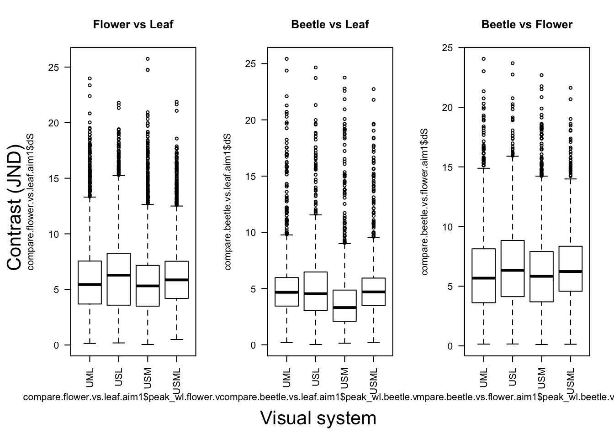
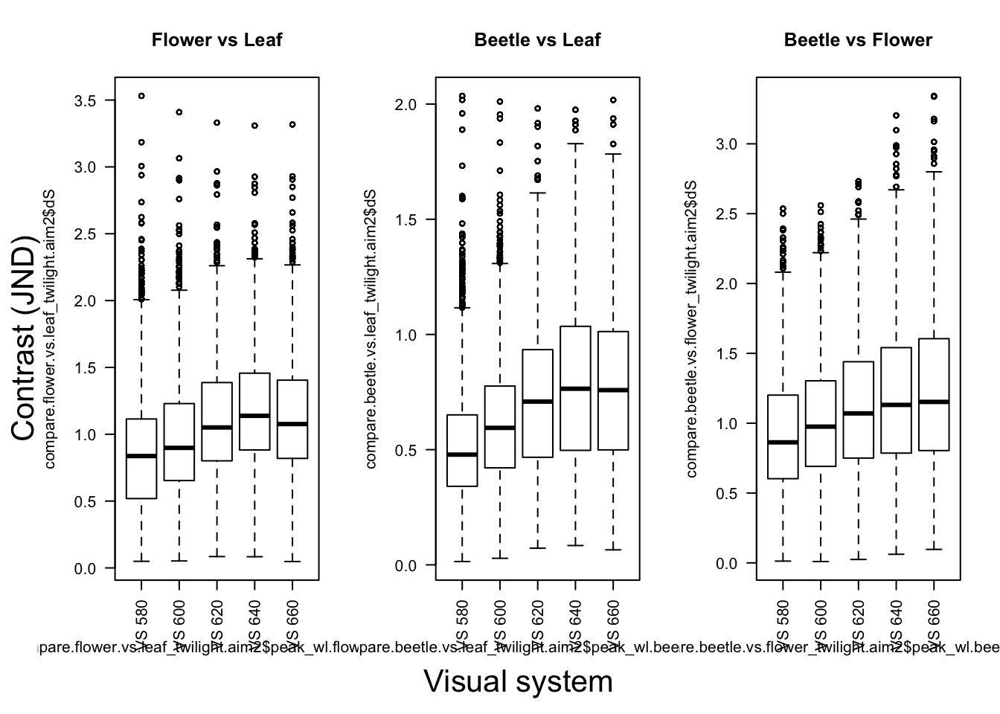
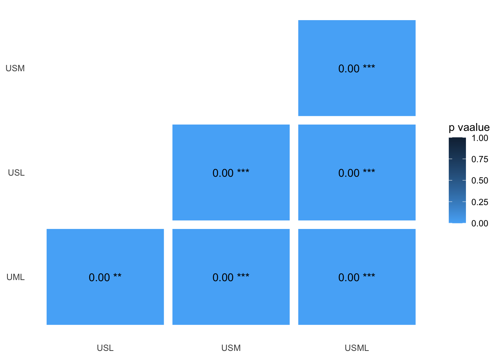
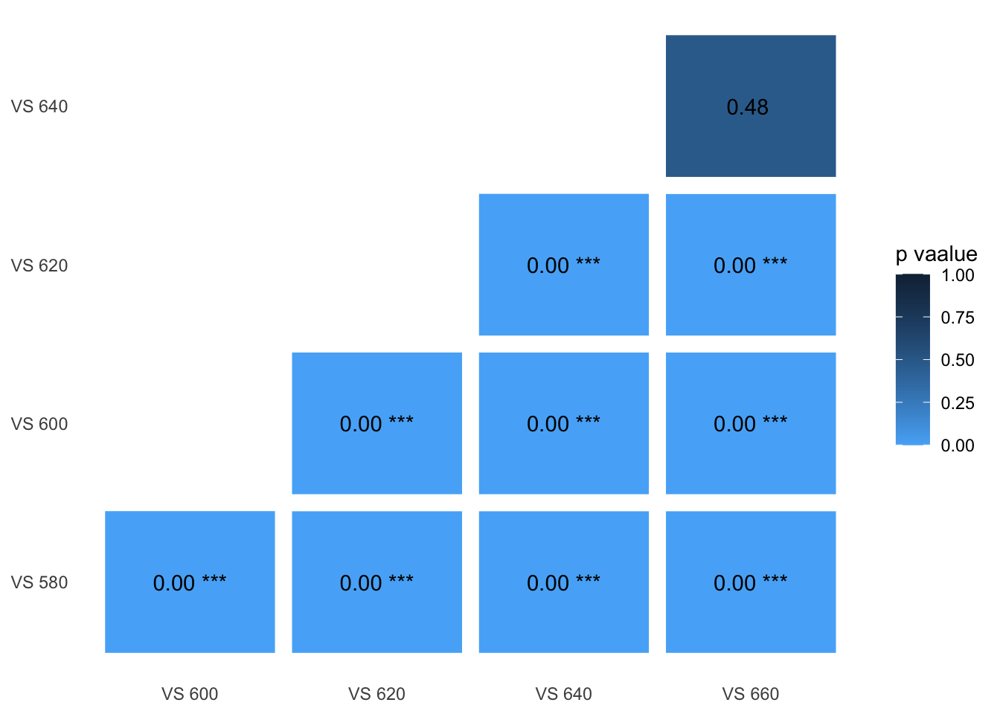

Main models: Visual sensitivity in the far-red enhances contrast against vegetation
Supplementary Information
Lu-Yi Wang1, Devi Stuart-Fox1, Geoff Walker1, Nicholas W. Roberts2 and Amanda M. Franklin1
1School of Biosciences, The University of Melbourne, Australia
2School of Biological Sciences, University of Bristol, UK
The aims
We used visual modelling to investigate the potential benefit of long wavelength sensitivity for insects.
Specifically, we varied the presence of a long wavelength sensitive photoreceptor and its peak sensitivity.
Our study focused on jewel beetles and their host plants because jewel beetles have sensitivity in the far red.
Additionally, we tested the effect of red-shifted light environment on contrast by running the same models under twilight illumination.
Load R libraries
library(pavo)
library(dplyr)
library(stringr)
library(tidyr) #for gather() function
library(ggplot2)
library(lme4)
library(car)
library(multcomp)
library(boot) #for mean() function
library(pander) #for creating tidy tables
library(ggpubr) #for ggarrange() function
Data description
Import and process the data
- The wavelength range for all data used in the models was 300-800 nm.
#import sensitivity curves
specsensbuprest.aim1 <- read.csv("data/peak sensitivity_filter shift_aim1.csv",header=TRUE) %>%
as.rspec()
specsensbuprest.aim2 <- read.csv("data/peak sensitivity_filter shift_aim2.csv",header=TRUE) %>%
as.rspec()
#import irradiance
irradiance.d65 <- read.csv("data/d65.csv",header=TRUE) %>%
as.rspec(lim=c(300,800)) %>% #set import range
procspec(opt = c("min", "max")) #standardize the illumination spectrum (0,1)
irradiance.twilight <- read.csv("data/civil twilight.csv",header=TRUE) %>%
as.rspec(lim=c(300,800)) %>%
rename( twilight = Irradiance) %>%
irrad2flux() #convert the irradiance (μ Watt.cm^{-2}) to photon flux (μ mol.s^{-1}.m^{-2}) to derive correct quantum catch.
#import background - average leaf
aveleaf <- read.csv("data/aveleaf.csv",header=TRUE) %>% as.rspec()
#import and combine beetle, flower, leaf together
raw.dataset<-read.csv("data/refelectance spectra.csv",header=TRUE) %>% as.rspec()
dataset<- aggspec(raw.dataset, by = 3, FUN = mean) %>% #average three measurements to a representative one
procspec(opt = "smooth", span = 0.1, fixneg = "zero") #smooth the spectra and lift <0 to 0Spectral reflectance of the targets
- Jewel beetles and their host plants (leaves and flowers)
- Leaves:
- sample source: mainly from Melton Gardens and Maranoa Gardens (4 from Meblourne roadsides).
- colour (to human vision): green
- total number: 46 (all are from the host plant genus of Australian jewel beetles)
- Flowers:
- sample source: mainly from Melton Gardens and Maranoa Gardens (4 from Meblourne roadsides).
- colour (to human vision): white (10), pink (11), red (10), yellow (9), orange (3), and purple (4)
- total number: 47 (from 46 species, the same species for leaf reflectance)
- Beetles:
- sample source: Australian jewel beetles from, ANIC (29) and our own collection
- colour (to human vision): red, pink, yellow/orange, green, blue, velvet, black
- total number: 37
- Leaves:
- We averaged of 3 measurements to generate a representative spectrum for each colour
- The spectral data were smoothed with the span = 0.1, and those < 0 were lifted to 0
#assign categories to each spectrum
category.list <- c("flower","leaf","beetle")
category <- rep(category.list , c(47*501,46*501,37*501))
wavelength<-rep(dataset[,1])
#transform the data for ploting purpose
dataset.transpose<-gather(dataset[,2:131], key = "species", value = "reflectance", na.rm = FALSE,
convert = FALSE, factor_key = FALSE)
dataset.plot.indivisually<-cbind(dataset.transpose, wavelength,category)
#split data by categories for future use
flower.spec<-dataset.plot.indivisually[1:23547,]
leaf.spec<-dataset.plot.indivisually[23548:46593,]
beetle.spec<-dataset.plot.indivisually[46594:65130,]
#merge the spectra before plot here
dataset.plot.indivisually$category2<-factor(dataset.plot.indivisually$category, levels=c("leaf","flower","beetle"))
#plot the spectra of the targets used in this model
ggplot(dataset.plot.indivisually,aes(x=wavelength,y=reflectance, colour=category2, group=species))+
geom_point(size=.05)+
geom_line(size=.05)+
theme(legend.position = "none")+
scale_color_manual( values = c( "forestgreen", "palevioletred1","cornflowerblue"))+
facet_grid(category2 ~ .)+
xlab("Wavelength (nm)")+ylab("Reflectance (%)")+
theme_classic()+
guides(colour=FALSE) # remove the legend
Figure caption: Reflectance spectra of the targets
Visual sensitivities and visual systems
We created nine sensitivity curves peaking at 355, 445, 530, 580, 600, 620, 640, 660 nm and classified them into 4 photoreceptor types based on their peaks:
- Ultraviolet sensitive (UVS): 355 nm
- Short-wavelength sensitive (SWS): 445 nm
- Medium-wavelength sensitive (MWS): 530 nm
- Long-wavelength sensitive (LWS): 580, 600, 620, 640, 660 nm
For the LWS, we applied a cut-off filter on the A1opsin sensitivity template peaking at 570 nm to shift the peak sensitivty to longer wavelengths.
Based on these sensitivities, we created several different visual systems to test two different questions:
- What is the benefit of possessing a long wavelength photoreceptor?
- Is there an benefit to shifting the peak sensitivity of the long wavelength photoreceptor?
- For the first question we compared the contrast between 3 trichromatic visual system with varied photoreceptor combination. We also tested whether an extra receptor enhanced chromatic contrast by comparing the trichromatic visual systems with a tetrachromatic visual system.
- Visual systems used:
- Visual system USM (USM): 355 nm, 445 nm, 530 nm (UVS,SWS,MWS)
- Visual system UML (UML): 355 nm, 530 nm, 600 nm (UVS,MWS,LWS)
- Visual system USL (USL): 355 nm, 445 nm, 600 nm (UVS,SWS,LWS)
- Visual system USML (USML): 355 nm, 445 nm, 530 nm, 600 nm (UVS,SWS,MWS,LWS)
- Visual systems used:
- For the second question, we tested how the contrast changed as peak sensitivity increased by systematically increasing the peak sensitivity of the LWS photoreceptor from 580-660 nm.
- Visual systems used:
- Visual system 580 (VS 580): 355 nm, 445 nm, 530 nm, 580 nm
- Visual system 600 (VS 600): 355 nm, 445 nm, 530 nm, 600 nm
- Visual system 620 (VS 620): 355 nm, 445 nm, 530 nm, 620 nm
- Visual system 640 (VS 640): 355 nm, 445 nm, 530 nm, 640 nm
- Visual system 660 (VS 660): 355 nm, 445 nm, 530 nm, 660 nm
- Visual systems used:
wl<-specsensbuprest.aim2[,1]
peaks<-gather(specsensbuprest.aim2[,2:9], peak, value) %>% cbind(wl)
peak.order <- c("UVS.355.A1.", "SWS.445.A1.", "MWS.530.A1.", "LWS.570.A1..filter580.", "LWS.570.A1..filter600.", "LWS.570.A1..filter620.", "LWS.570.A1..filter640.", "LWS.570.A1..filter660.") #to order the peaks in the legend
ggplot(peaks,aes(x=wl, y=value, col=peak))+
geom_line()+
guides(color=guide_legend(title="peak sensitivity"))+
scale_color_manual(
values = c("darkorchid4", "dodgerblue3", "olivedrab4", "orange1", "orange3","darkorange3", "orangered1", "red2"),
labels=c("355 nm", "445 nm","530 nm", "580 nm", "600 nm", "620 nm", "640 nm", "660 nm" ),
breaks=peak.order)+
xlab("Wavelength (nm)")+
ylab("Relative spectral sensitivity")+
theme_classic()
Figure caption: Sensitivity curves of the photoreceptors with different peak wavelengths.
Illuminations
Two light environments: daylight and twilight (to represent red-shifted illumination).
- Daylight: D65 (standard daylight) from Commission internationale de l’eclairage CIE
- Twilight: measured at the Pinnacles Lookout in Alpine National Park, VIC, Australia at 18:15 on September 14th 2019.
ggplot(irradiance.d65, aes(x = wl, y = D65))+
geom_line()+
xlab("Wavelength (nm)")+
scale_y_continuous(name = "Relative irradiance (%)")+
theme_classic()
Figure caption: Relative irrdiance of D65 (standard daylight) used for the daylight models
ggplot(irradiance.twilight, aes(x = wl, y = twilight))+
geom_line()+
xlab("Wavelength (nm)")+
scale_y_continuous(name = "Photon flux (umol.s-1.m-2.nm-1)")+
theme_classic()
Figure caption: Absolute irradiance of the twilight used in the twilight models
Run the visual models
First: Quantum catch calculation
- We used the
vismodelfunction in the package pavo to calculate quantum catch. - For each visual system, quantum catch was calculated based on Fechner’s law (the signal of the receptor channel is proportional to the logarithm of the quantum catch).
- The average of all leaf spectra was used as the background adapting light.
- The von Kries chromatic adaptation was applied.
#Quantum catch - D65 - aim 1
vsUSM=vismodel(dataset[1:501,], visual = specsensbuprest.aim1[, 1:4], bkg=aveleaf$aveleaf, illum = irradiance.d65[1:501,2], qcatch = 'fi', relative=FALSE, vonkries=TRUE)
vsUML=vismodel(dataset[1:501,], visual = specsensbuprest.aim1[, c(1,2,4,5)], bkg=aveleaf$aveleaf, illum = irradiance.d65[1:501,2], qcatch = 'fi', relative=FALSE, vonkries=TRUE)
vsUSL=vismodel(dataset[1:501,], visual = specsensbuprest.aim1[, c(1,2,3,5)], bkg=aveleaf$aveleaf, illum = irradiance.d65[1:501,2], qcatch = 'fi', relative=FALSE, vonkries=TRUE)
vsUSML=vismodel(dataset[1:501,], visual = specsensbuprest.aim1[, 1:5], bkg=aveleaf$aveleaf, illum = irradiance.d65[1:501,2], qcatch = 'fi', relative=FALSE, vonkries=TRUE)
#Quantum catch - D65 - Aim 2
buprest580=vismodel(dataset[1:501,], visual = specsensbuprest.aim2[, 1:5], bkg=aveleaf$aveleaf, illum = irradiance.d65[1:501,2], qcatch = 'fi', relative=FALSE, vonkries=TRUE)
buprest600=vismodel(dataset[1:501,], visual = specsensbuprest.aim2[, c(1,2,3,4,6)], bkg=aveleaf$aveleaf, illum = irradiance.d65[1:501,2], qcatch = 'fi', relative=FALSE, vonkries=TRUE)
buprest620=vismodel(dataset[1:501,], visual = specsensbuprest.aim2[, c(1,2,3,4,7)], bkg=aveleaf$aveleaf, illum = irradiance.d65[1:501,2], qcatch = 'fi', relative=FALSE, vonkries=TRUE)
buprest640=vismodel(dataset[1:501,], visual = specsensbuprest.aim2[, c(1,2,3,4,8)], bkg=aveleaf$aveleaf, illum = irradiance.d65[1:501,2], qcatch = 'fi', relative=FALSE, vonkries=TRUE)
buprest660=vismodel(dataset[1:501,], visual = specsensbuprest.aim2[, c(1,2,3,4,9)], bkg=aveleaf$aveleaf, illum = irradiance.d65[1:501,2], qcatch = 'fi', relative=FALSE, vonkries=TRUE)
#Quantum catch - twilight - aim 1
vsUSM_twilight=vismodel(dataset[1:501,], visual = specsensbuprest.aim1[, 1:4], bkg=aveleaf$aveleaf, illum = irradiance.twilight[1:501,2], qcatch = 'fi', relative=FALSE, vonkries=TRUE)
vsUML_twilight=vismodel(dataset[1:501,], visual = specsensbuprest.aim1[, c(1,2,4,5)], bkg=aveleaf$aveleaf, illum = irradiance.twilight[1:501,2], qcatch = 'fi', relative=FALSE, vonkries=TRUE)
vsUSL_twilight=vismodel(dataset[1:501,], visual = specsensbuprest.aim1[, c(1,2,3,5)], bkg=aveleaf$aveleaf, illum = irradiance.twilight[1:501,2], qcatch = 'fi', relative=FALSE, vonkries=TRUE)
vsUSML_twilight=vismodel(dataset[1:501,], visual = specsensbuprest.aim1[, 1:5], bkg=aveleaf$aveleaf, illum = irradiance.twilight[1:501,2], qcatch = 'fi', relative=FALSE, vonkries=TRUE)
#Quantum catch - twilight - Aim 2
buprest580_twilight=vismodel(dataset[1:501,], visual = specsensbuprest.aim2[, 1:5], bkg=aveleaf$aveleaf, illum = irradiance.twilight[1:501,2], qcatch = 'fi', relative=FALSE, vonkries=TRUE)
buprest600_twilight=vismodel(dataset[1:501,], visual = specsensbuprest.aim2[, c(1,2,3,4,6)], bkg=aveleaf$aveleaf, illum = irradiance.twilight[1:501,2], qcatch = 'fi', relative=FALSE, vonkries=TRUE)
buprest620_twilight=vismodel(dataset[1:501,], visual = specsensbuprest.aim2[, c(1,2,3,4,7)], bkg=aveleaf$aveleaf, illum = irradiance.twilight[1:501,2], qcatch = 'fi', relative=FALSE, vonkries=TRUE)
buprest640_twilight=vismodel(dataset[1:501,], visual = specsensbuprest.aim2[, c(1,2,3,4,8)], bkg=aveleaf$aveleaf, illum = irradiance.twilight[1:501,2], qcatch = 'fi', relative=FALSE, vonkries=TRUE)
buprest660_twilight=vismodel(dataset[1:501,], visual = specsensbuprest.aim2[, c(1,2,3,4,9)], bkg=aveleaf$aveleaf, illum = irradiance.twilight[1:501,2], qcatch = 'fi', relative=FALSE, vonkries=TRUE)
Second: Contrast calculation
To calculate chromatic contrast we used the
coldistfunction in pavo.We used a neural noise-limited model where the noise is proportional to the Weber fraction and is independent of the intensity of the signal received.
Photoreceptor density of the tetrachromat was based on the opsin gene expression of Emerald ash borer, Agrilus planipennis: 1.14, 1, 1.26, 1.38. For the trichromates, we redistributed the lost cone number proportionally to the remaining three cones. (USM: 1.6027, 1.4059, 1.771; UML: 1.4416, 1.5933, 1.7451; USL:1.5481, 1.3580, 1.8740)
The Weber fraction for the longest cone in the tetrachromat was 0.1, which was used to calculated the unknown signa;-to-noise ratio. To keep the signa;-to-noise ratio the same bwtween the tetrachromat and the trichromates, we adjusted the weber fractions for the longest cone in trichromats to be 0.0883, 0.0889, 0.0858 for USM, UML, USL.
In the models using twilight illuminance, we took the photo shot noise into account.
#Contrast calculation- D65 - aim 1
CvsUSM = coldist(vsUSM, noise="neural", achro=FALSE, n = c(1.6027, 1.4059, 1.7714), weber = 0.1059, weber.ref = 3)
CvsUML = coldist(vsUML, noise="neural", achro=FALSE, n = c(1.4416, 1.5933, 1.7451), weber = 0.1067, weber.ref = 3)
CvsUSL = coldist(vsUSL, noise="neural", achro=FALSE, n = c(1.5481, 1.3580, 1.8740), weber = 0.1030, weber.ref = 3)
CvsUSML = coldist(vsUSML, noise="neural", achro=FALSE, n = c(1.14,1,1.26,1.38), weber = 0.12, weber.ref = 4)
#Contrast calculation- D65 - Aim 2
Cbuprest580 = coldist(buprest580, noise="neural", achro=FALSE, n = c(1.14,1,1.26,1.38), weber = 0.12, weber.ref = 4)
Cbuprest600 = coldist(buprest600, noise="neural", achro=FALSE, n = c(1.14,1,1.26,1.38), weber = 0.12, weber.ref = 4)
Cbuprest620 = coldist(buprest620, noise="neural", achro=FALSE, n = c(1.14,1,1.26,1.38), weber = 0.12, weber.ref = 4)
Cbuprest640 = coldist(buprest640, noise="neural", achro=FALSE, n = c(1.14,1,1.26,1.38), weber = 0.12, weber.ref = 4)
Cbuprest660 = coldist(buprest660, noise="neural", achro=FALSE, n = c(1.14,1,1.26,1.38), weber = 0.12, weber.ref = 4)
#Contrast calculation- twilight - aim 1
CvsUSM_twilight = coldist(vsUSM_twilight, noise="quantum", achro=FALSE, n = c(1.6027, 1.4059, 1.7714), weber = 0.1059, weber.ref = 3)
CvsUML_twilight = coldist(vsUML_twilight, noise="quantum", achro=FALSE, n = c(1.4416, 1.5933, 1.7451), weber = 0.1067, weber.ref = 3)
CvsUSL_twilight = coldist(vsUSL_twilight, noise="quantum", achro=FALSE, n = c(1.5481, 1.3580, 1.8740), weber = 0.1030, weber.ref = 3)
CvsUSML_twilight = coldist(vsUSML_twilight, noise="quantum", achro=FALSE, n = c(1.14,1,1.26,1.38), weber = 0.12, weber.ref = 4)
#Contrast calculation- twilight - Aim 2
Cbuprest580_twilight = coldist(buprest580_twilight, noise="quantum", achro=FALSE, n = c(1.14,1,1.26,1.38), weber = 0.12, weber.ref = 4)
Cbuprest600_twilight = coldist(buprest600_twilight, noise="quantum", achro=FALSE, n = c(1.14,1,1.26,1.38), weber = 0.12, weber.ref = 4)
Cbuprest620_twilight = coldist(buprest620_twilight, noise="quantum", achro=FALSE, n = c(1.14,1,1.26,1.38), weber = 0.12, weber.ref = 4)
Cbuprest640_twilight = coldist(buprest640_twilight, noise="quantum", achro=FALSE, n = c(1.14,1,1.26,1.38), weber = 0.12, weber.ref = 4)
Cbuprest660_twilight = coldist(buprest660_twilight, noise="quantum", achro=FALSE, n = c(1.14,1,1.26,1.38), weber = 0.12, weber.ref = 4)#combine all contrast value in each comparison group
#Daylight - aim 1
##flower vs leaf
VS1.fl_d65.aim1<- CvsUSM%>% filter(str_detect(patch1,"flower")) %>%
filter(str_detect(patch2,"leaves"))
VS1.fl_d65.aim1$vissys<-strrep("VS1.fl",1)
VS2.fl_d65.aim1<-CvsUML%>% filter(str_detect(patch1,"flower")) %>%
filter(str_detect(patch2,"leaves"))
VS2.fl_d65.aim1$vissys<-strrep("VS2.fl",1)
VS3.fl_d65.aim1<-CvsUSL%>% filter(str_detect(patch1,"flower")) %>%
filter(str_detect(patch2,"leaves"))
VS3.fl_d65.aim1$vissys<-strrep("VS3.fl",1)
VS4.fl_d65.aim1<-CvsUSML%>% filter(str_detect(patch1,"flower")) %>%
filter(str_detect(patch2,"leaves"))
VS4.fl_d65.aim1$vissys<-strrep("VS4.fl",1)
allvis.fl_d65.aim1<-VS1.fl_d65.aim1 %>% rbind(VS2.fl_d65.aim1) %>% rbind(VS3.fl_d65.aim1) %>%rbind(VS4.fl_d65.aim1)
##beetle vs leaf
VS1.bl_d65.aim1<- CvsUSM%>% filter(str_detect(patch2,"beetle")) %>%
filter(str_detect(patch1,"leaves"))
VS1.bl_d65.aim1$vissys<-strrep("VS1.bl",1)
VS2.bl_d65.aim1<-CvsUML%>% filter(str_detect(patch2,"beetle")) %>%
filter(str_detect(patch1,"leaves"))
VS2.bl_d65.aim1$vissys<-strrep("VS2.bl",1)
VS3.bl_d65.aim1<-CvsUSL%>% filter(str_detect(patch2,"beetle")) %>%
filter(str_detect(patch1,"leaves"))
VS3.bl_d65.aim1$vissys<-strrep("VS3.bl",1)
VS4.bl_d65.aim1<-CvsUSML%>% filter(str_detect(patch2,"beetle")) %>%
filter(str_detect(patch1,"leaves"))
VS4.bl_d65.aim1$vissys<-strrep("VS4.bl",1)
allvis.bl_d65.aim1<-VS1.bl_d65.aim1 %>% rbind(VS2.bl_d65.aim1) %>% rbind(VS3.bl_d65.aim1) %>%rbind(VS4.bl_d65.aim1)
##beetle vs flower
VS1.bf_d65.aim1<- CvsUSM%>% filter(str_detect(patch1,"flower")) %>%
filter(str_detect(patch2,"beetle"))
VS1.bf_d65.aim1$vissys<-strrep("VS1.bf",1)
VS2.bf_d65.aim1<-CvsUML%>% filter(str_detect(patch1,"flower")) %>%
filter(str_detect(patch2,"beetle"))
VS2.bf_d65.aim1$vissys<-strrep("VS2.bf",1)
VS3.bf_d65.aim1<-CvsUSL%>% filter(str_detect(patch1,"flower")) %>%
filter(str_detect(patch2,"beetle"))
VS3.bf_d65.aim1$vissys<-strrep("VS3.bf",1)
VS4.bf_d65.aim1<-CvsUSML%>% filter(str_detect(patch1,"flower")) %>%
filter(str_detect(patch2,"beetle"))
VS4.bf_d65.aim1$vissys<-strrep("VS4.bf",1)
allvis.bf_d65.aim1<-VS1.bf_d65.aim1 %>% rbind(VS2.bf_d65.aim1) %>% rbind(VS3.bf_d65.aim1)%>%
rbind(VS4.bf_d65.aim1)
#Twiligth - aim 1
##flower vs leaf
VS1.fl_twilight.aim1<- CvsUSM_twilight%>% filter(str_detect(patch1,"flower")) %>%
filter(str_detect(patch2,"leaves"))
VS1.fl_twilight.aim1$vissys<-strrep("VS1.fl",1)
VS2.fl_twilight.aim1<-CvsUML_twilight%>% filter(str_detect(patch1,"flower")) %>%
filter(str_detect(patch2,"leaves"))
VS2.fl_twilight.aim1$vissys<-strrep("VS2.fl",1)
VS3.fl_twilight.aim1<-CvsUSL_twilight%>% filter(str_detect(patch1,"flower")) %>%
filter(str_detect(patch2,"leaves"))
VS3.fl_twilight.aim1$vissys<-strrep("VS3.fl",1)
VS4.fl_twilight.aim1<-CvsUSML_twilight%>% filter(str_detect(patch1,"flower")) %>%
filter(str_detect(patch2,"leaves"))
VS4.fl_twilight.aim1$vissys<-strrep("VS4.fl",1)
allvis.fl_twilight.aim1<-VS1.fl_twilight.aim1 %>% rbind(VS2.fl_twilight.aim1) %>% rbind(VS3.fl_twilight.aim1) %>%rbind(VS4.fl_twilight.aim1)
##beetle vs leaf
VS1.bl_twilight.aim1<- CvsUSM_twilight%>% filter(str_detect(patch2,"beetle")) %>%
filter(str_detect(patch1,"leaves"))
VS1.bl_twilight.aim1$vissys<-strrep("VS1.bl",1)
VS2.bl_twilight.aim1<-CvsUML_twilight%>% filter(str_detect(patch2,"beetle")) %>%
filter(str_detect(patch1,"leaves"))
VS2.bl_twilight.aim1$vissys<-strrep("VS2.bl",1)
VS3.bl_twilight.aim1<-CvsUSL_twilight%>% filter(str_detect(patch2,"beetle")) %>%
filter(str_detect(patch1,"leaves"))
VS3.bl_twilight.aim1$vissys<-strrep("VS3.bl",1)
VS4.bl_twilight.aim1<-CvsUSML_twilight%>% filter(str_detect(patch2,"beetle")) %>%
filter(str_detect(patch1,"leaves"))
VS4.bl_twilight.aim1$vissys<-strrep("VS4.bl",1)
allvis.bl_twilight.aim1<-VS1.bl_twilight.aim1 %>% rbind(VS2.bl_twilight.aim1) %>% rbind(VS3.bl_twilight.aim1) %>%rbind(VS4.bl_twilight.aim1)
##beetle vs flower
VS1.bf_twilight.aim1<- CvsUSM_twilight%>% filter(str_detect(patch1,"flower")) %>%
filter(str_detect(patch2,"beetle"))
VS1.bf_twilight.aim1$vissys<-strrep("VS1.bf",1)
VS2.bf_twilight.aim1<-CvsUML_twilight%>% filter(str_detect(patch1,"flower")) %>%
filter(str_detect(patch2,"beetle"))
VS2.bf_twilight.aim1$vissys<-strrep("VS2.bf",1)
VS3.bf_twilight.aim1<-CvsUSL_twilight%>% filter(str_detect(patch1,"flower")) %>%
filter(str_detect(patch2,"beetle"))
VS3.bf_twilight.aim1$vissys<-strrep("VS3.bf",1)
VS4.bf_twilight.aim1<-CvsUSML_twilight%>% filter(str_detect(patch1,"flower")) %>%
filter(str_detect(patch2,"beetle"))
VS4.bf_twilight.aim1$vissys<-strrep("VS4.bf",1)
allvis.bf_twilight.aim1<-VS1.bf_twilight.aim1 %>% rbind(VS2.bf_twilight.aim1) %>% rbind(VS3.bf_twilight.aim1) %>%rbind(VS4.bf_twilight.aim1)
#Daylight - aim 2
##flower vs leaf
VS1.fl_d65.aim2<- Cbuprest580%>% filter(str_detect(patch1,"flower")) %>%
filter(str_detect(patch2,"leaves"))
VS1.fl_d65.aim2$vissys<-strrep("VS1.fl",1)
VS2.fl_d65.aim2<-Cbuprest600%>% filter(str_detect(patch1,"flower")) %>%
filter(str_detect(patch2,"leaves"))
VS2.fl_d65.aim2$vissys<-strrep("VS2.fl",1)
VS3.fl_d65.aim2<-Cbuprest620%>% filter(str_detect(patch1,"flower")) %>%
filter(str_detect(patch2,"leaves"))
VS3.fl_d65.aim2$vissys<-strrep("VS3.fl",1)
VS4.fl_d65.aim2<-Cbuprest640%>% filter(str_detect(patch1,"flower")) %>%
filter(str_detect(patch2,"leaves"))
VS4.fl_d65.aim2$vissys<-strrep("VS4.fl",1)
VS5.fl_d65.aim2<-Cbuprest660%>% filter(str_detect(patch1,"flower")) %>%
filter(str_detect(patch2,"leaves"))
VS5.fl_d65.aim2$vissys<-strrep("VS5.fl",1)
allvis.fl_d65.aim2<-VS1.fl_d65.aim2 %>% rbind(VS2.fl_d65.aim2) %>% rbind(VS3.fl_d65.aim2) %>%
rbind(VS4.fl_d65.aim2) %>%rbind(VS5.fl_d65.aim2)
##beetle vs leaf
VS1.bl_d65.aim2<- Cbuprest580%>% filter(str_detect(patch2,"beetle")) %>%
filter(str_detect(patch1,"leaves"))
VS1.bl_d65.aim2$vissys<-strrep("VS1.bl",1)
VS2.bl_d65.aim2<-Cbuprest600%>% filter(str_detect(patch2,"beetle")) %>%
filter(str_detect(patch1,"leaves"))
VS2.bl_d65.aim2$vissys<-strrep("VS2.bl",1)
VS3.bl_d65.aim2<-Cbuprest620%>% filter(str_detect(patch2,"beetle")) %>%
filter(str_detect(patch1,"leaves"))
VS3.bl_d65.aim2$vissys<-strrep("VS3.bl",1)
VS4.bl_d65.aim2<-Cbuprest640%>% filter(str_detect(patch2,"beetle")) %>%
filter(str_detect(patch1,"leaves"))
VS4.bl_d65.aim2$vissys<-strrep("VS4.bl",1)
VS5.bl_d65.aim2<-Cbuprest660%>% filter(str_detect(patch2,"beetle")) %>%
filter(str_detect(patch1,"leaves"))
VS5.bl_d65.aim2$vissys<-strrep("VS5.bl",1)
allvis.bl_d65.aim2<-VS1.bl_d65.aim2 %>% rbind(VS2.bl_d65.aim2) %>% rbind(VS3.bl_d65.aim2) %>%
rbind(VS4.bl_d65.aim2) %>%rbind(VS5.bl_d65.aim2)
##beetle vs flower
VS1.bf_d65.aim2<- Cbuprest580%>% filter(str_detect(patch1,"flower")) %>%
filter(str_detect(patch2,"beetle"))
VS1.bf_d65.aim2$vissys<-strrep("VS1.bf",1)
VS2.bf_d65.aim2<-Cbuprest600%>% filter(str_detect(patch1,"flower")) %>%
filter(str_detect(patch2,"beetle"))
VS2.bf_d65.aim2$vissys<-strrep("VS2.bf",1)
VS3.bf_d65.aim2<-Cbuprest620%>% filter(str_detect(patch1,"flower")) %>%
filter(str_detect(patch2,"beetle"))
VS3.bf_d65.aim2$vissys<-strrep("VS3.bf",1)
VS4.bf_d65.aim2<-Cbuprest640%>% filter(str_detect(patch1,"flower")) %>%
filter(str_detect(patch2,"beetle"))
VS4.bf_d65.aim2$vissys<-strrep("VS4.bf",1)
VS5.bf_d65.aim2<-Cbuprest660%>% filter(str_detect(patch1,"flower")) %>%
filter(str_detect(patch2,"beetle"))
VS5.bf_d65.aim2$vissys<-strrep("VS5.bf",1)
allvis.bf_d65.aim2<-VS1.bf_d65.aim2 %>% rbind(VS2.bf_d65.aim2) %>% rbind(VS3.bf_d65.aim2) %>%
rbind(VS4.bf_d65.aim2) %>%rbind(VS5.bf_d65.aim2)
##Twilight - aim 2
##flower vs leaf
VS1.fl_twilight.aim2<- Cbuprest580_twilight %>% filter(str_detect(patch1,"flower")) %>%
filter(str_detect(patch2,"leaves"))
VS1.fl_twilight.aim2$vissys<-strrep("VS1.fl",1)
VS2.fl_twilight.aim2<-Cbuprest600_twilight %>% filter(str_detect(patch1,"flower")) %>%
filter(str_detect(patch2,"leaves"))
VS2.fl_twilight.aim2$vissys<-strrep("VS2.fl",1)
VS3.fl_twilight.aim2<-Cbuprest620_twilight %>% filter(str_detect(patch1,"flower")) %>%
filter(str_detect(patch2,"leaves"))
VS3.fl_twilight.aim2$vissys<-strrep("VS3.fl",1)
VS4.fl_twilight.aim2<-Cbuprest640_twilight %>% filter(str_detect(patch1,"flower")) %>%
filter(str_detect(patch2,"leaves"))
VS4.fl_twilight.aim2$vissys<-strrep("VS4.fl",1)
VS5.fl_twilight.aim2<-Cbuprest660_twilight %>% filter(str_detect(patch1,"flower")) %>%
filter(str_detect(patch2,"leaves"))
VS5.fl_twilight.aim2$vissys<-strrep("VS5.fl",1)
allvis.fl_twilight.aim2<-VS1.fl_twilight.aim2 %>% rbind(VS2.fl_twilight.aim2) %>% rbind(VS3.fl_twilight.aim2) %>%
rbind(VS4.fl_twilight.aim2) %>%rbind(VS5.fl_twilight.aim2)
##beetle vs leaf
VS1.bl_twilight.aim2<- Cbuprest580_twilight %>% filter(str_detect(patch2,"beetle")) %>%
filter(str_detect(patch1,"leaves"))
VS1.bl_twilight.aim2$vissys<-strrep("VS1.bl",1)
VS2.bl_twilight.aim2<-Cbuprest600_twilight %>% filter(str_detect(patch2,"beetle")) %>%
filter(str_detect(patch1,"leaves"))
VS2.bl_twilight.aim2$vissys<-strrep("VS2.bl",1)
VS3.bl_twilight.aim2<-Cbuprest620_twilight %>% filter(str_detect(patch2,"beetle")) %>%
filter(str_detect(patch1,"leaves"))
VS3.bl_twilight.aim2$vissys<-strrep("VS3.bl",1)
VS4.bl_twilight.aim2<-Cbuprest640_twilight %>% filter(str_detect(patch2,"beetle")) %>%
filter(str_detect(patch1,"leaves"))
VS4.bl_twilight.aim2$vissys<-strrep("VS4.bl",1)
VS5.bl_twilight.aim2<-Cbuprest660_twilight %>% filter(str_detect(patch2,"beetle")) %>%
filter(str_detect(patch1,"leaves"))
VS5.bl_twilight.aim2$vissys<-strrep("VS5.bl",1)
allvis.bl_twilight.aim2<-VS1.bl_twilight.aim2 %>% rbind(VS2.bl_twilight.aim2) %>% rbind(VS3.bl_twilight.aim2) %>% rbind(VS4.bl_twilight.aim2) %>%rbind(VS5.bl_twilight.aim2)
##beetle vs flower
VS1.bf_twilight.aim2<- Cbuprest580_twilight %>% filter(str_detect(patch1,"flower")) %>%
filter(str_detect(patch2,"beetle"))
VS1.bf_twilight.aim2$vissys<-strrep("VS1.bf",1)
VS2.bf_twilight.aim2<-Cbuprest600_twilight %>% filter(str_detect(patch1,"flower")) %>%
filter(str_detect(patch2,"beetle"))
VS2.bf_twilight.aim2$vissys<-strrep("VS2.bf",1)
VS3.bf_twilight.aim2<-Cbuprest620_twilight %>% filter(str_detect(patch1,"flower")) %>%
filter(str_detect(patch2,"beetle"))
VS3.bf_twilight.aim2$vissys<-strrep("VS3.bf",1)
VS4.bf_twilight.aim2<-Cbuprest640_twilight %>% filter(str_detect(patch1,"flower")) %>%
filter(str_detect(patch2,"beetle"))
VS4.bf_twilight.aim2$vissys<-strrep("VS4.bf",1)
VS5.bf_twilight.aim2<-Cbuprest660_twilight %>% filter(str_detect(patch1,"flower")) %>%
filter(str_detect(patch2,"beetle"))
VS5.bf_twilight.aim2$vissys<-strrep("VS5.bf",1)
allvis.bf_twilight.aim2<-VS1.bf_twilight.aim2 %>% rbind(VS2.bf_twilight.aim2) %>% rbind(VS3.bf_twilight.aim2) %>% rbind(VS4.bf_twilight.aim2) %>%rbind(VS5.bf_twilight.aim2)Aim 1
The table shows the mean contrast in each comparison group
#Aim 1
system.list.aim1<- rbind.data.frame("USM", "UML", "USL", "USML") %>% rename(system = 1) # make a list of system namesDaylight
#Daylight
##list contrast from each comparison group
fl.contrast_d65.aim1 <- rbind.data.frame(mean(VS1.fl_d65.aim1$dS),mean(VS2.fl_d65.aim1$dS),mean(VS3.fl_d65.aim1$dS),mean(VS4.fl_d65.aim1$dS))
bl.contrast_d65.aim1 <-rbind.data.frame(mean(VS1.bl_d65.aim1$dS),mean(VS2.bl_d65.aim1$dS),mean(VS3.bl_d65.aim1$dS),mean(VS4.bl_d65.aim1$dS))
bf.contrast_d65.aim1 <-rbind.data.frame(mean(VS1.bf_d65.aim1$dS), mean(VS2.bf_d65.aim1$dS),mean(VS3.bf_d65.aim1$dS),mean(VS4.bf_d65.aim1$dS))
#combind comparison groups together in a table
contrast.list_d65.aim1<- system.list.aim1 %>% cbind(fl.contrast_d65.aim1) %>% cbind(bl.contrast_d65.aim1) %>% cbind(bf.contrast_d65.aim1) %>% dplyr:: rename(flower.vs.leaf = 2, beetle.vs.leaf = 3, beetle.vs.flower = 4) %>% pander()
contrast.list_d65.aim1| system | flower.vs.leaf | beetle.vs.leaf | beetle.vs.flower |
|---|---|---|---|
| USM | 5.866 | 3.87 | 6.203 |
| UML | 6.009 | 5 | 6.194 |
| USL | 6.348 | 5.012 | 6.832 |
| USML | 6.212 | 4.985 | 6.682 |
Twilight
#Twilight
##list contrast from each comparison group
fl.contrast_twilight.aim1 <- rbind.data.frame(mean(VS1.fl_twilight.aim1$dS), mean(VS2.fl_twilight.aim1$dS),mean(VS3.fl_twilight.aim1$dS),mean(VS4.fl_twilight.aim1$dS))
bl.contrast_twilight.aim1 <-rbind.data.frame(mean(VS1.bl_twilight.aim1$dS),mean(VS2.bl_twilight.aim1$dS),mean(VS3.bl_twilight.aim1$dS),mean(VS4.bl_twilight.aim1$dS))
bf.contrast_twilight.aim1 <-rbind.data.frame(mean(VS1.bf_twilight.aim1$dS), mean(VS2.bf_twilight.aim1$dS),mean(VS3.bf_twilight.aim1$dS),mean(VS4.bf_twilight.aim1$dS))
#combind comparison groups together in a table
contrast.list_twilight.aim1<- system.list.aim1 %>% cbind(fl.contrast_twilight.aim1) %>% cbind(bl.contrast_twilight.aim1) %>% cbind(bf.contrast_twilight.aim1) %>% dplyr:: rename(flower.vs.leaf = 2, beetle.vs.leaf = 3, beetle.vs.flower = 4) %>% pander()
contrast.list_twilight.aim1| system | flower.vs.leaf | beetle.vs.leaf | beetle.vs.flower |
|---|---|---|---|
| USM | 0.7393 | 0.3659 | 0.7503 |
| UML | 0.8335 | 0.5485 | 0.826 |
| USL | 0.8677 | 0.541 | 0.9076 |
| USML | 0.9649 | 0.6184 | 1.017 |
Aim 2
The table shows the mean contrast in each comparison group
system.list.aim2<- rbind.data.frame("VS 580", "VS 600", "VS 620", "VS 640", "VS 660") %>% rename(system = 1) # make a list of system namesDaylight
#Daylight
##list contrast from each comparison group
fl.contrast_d65.aim2 <- rbind.data.frame(mean(VS1.fl_d65.aim2$dS),mean(VS2.fl_d65.aim2$dS),mean(VS3.fl_d65.aim2$dS),mean(VS4.fl_d65.aim2$dS),mean(VS5.fl_d65.aim2$dS))
bl.contrast_d65.aim2 <-rbind.data.frame(mean(VS1.bl_d65.aim2$dS),mean(VS2.bl_d65.aim2$dS),mean(VS3.bl_d65.aim2$dS),mean(VS4.bl_d65.aim2$dS),mean(VS5.bl_d65.aim2$dS))
bf.contrast_d65.aim2 <-rbind.data.frame(mean(VS1.bf_d65.aim2$dS), mean(VS2.bf_d65.aim2$dS),mean(VS3.bf_d65.aim2$dS),mean(VS4.bf_d65.aim2$dS),mean(VS5.bf_d65.aim2$dS))
#combind comparison groups together in a table
contrast.list_d65.aim2<- system.list.aim2 %>% cbind(fl.contrast_d65.aim2) %>% cbind(bl.contrast_d65.aim2) %>% cbind(bf.contrast_d65.aim2) %>% dplyr:: rename(flower.vs.leaf = 2, beetle.vs.leaf = 3, beetle.vs.flower = 4) %>% pander()
contrast.list_d65.aim2| system | flower.vs.leaf | beetle.vs.leaf | beetle.vs.flower |
|---|---|---|---|
| VS 580 | 5.791 | 4.412 | 6.302 |
| VS 600 | 6.212 | 4.985 | 6.682 |
| VS 620 | 6.966 | 5.636 | 7.147 |
| VS 640 | 7.595 | 6.137 | 7.529 |
| VS 660 | 7.553 | 6.346 | 7.815 |
Twilight
#Twilight
##list contrast from each comparison group
fl.contrast_twilight.aim2 <- rbind.data.frame(mean(VS1.fl_twilight.aim2$dS), mean(VS2.fl_twilight.aim2$dS),mean(VS3.fl_twilight.aim2$dS),mean(VS4.fl_twilight.aim2$dS),mean(VS5.fl_twilight.aim2$dS))
bl.contrast_twilight.aim2 <-rbind.data.frame(mean(VS1.bl_twilight.aim2$dS),mean(VS2.bl_twilight.aim2$dS),mean(VS3.bl_twilight.aim2$dS),mean(VS4.bl_twilight.aim2$dS),mean(VS5.bl_twilight.aim2$dS))
bf.contrast_twilight.aim2 <-rbind.data.frame(mean(VS1.bf_twilight.aim2$dS), mean(VS2.bf_twilight.aim2$dS),mean(VS3.bf_twilight.aim2$dS),mean(VS4.bf_twilight.aim2$dS),mean(VS5.bf_twilight.aim2$dS))
#combind comparison groups together in a table
contrast.list_twilight.aim2<- system.list.aim2 %>% cbind(fl.contrast_twilight.aim2) %>% cbind(bl.contrast_twilight.aim2) %>% cbind(bf.contrast_twilight.aim2) %>% dplyr:: rename(flower.vs.leaf = 2, beetle.vs.leaf = 3, beetle.vs.flower = 4) %>% pander()
contrast.list_twilight.aim2| system | flower.vs.leaf | beetle.vs.leaf | beetle.vs.flower |
|---|---|---|---|
| VS 580 | 0.8695 | 0.5215 | 0.9219 |
| VS 600 | 0.9649 | 0.6184 | 1.017 |
| VS 620 | 1.107 | 0.7161 | 1.12 |
| VS 640 | 1.192 | 0.776 | 1.19 |
| VS 660 | 1.129 | 0.7739 | 1.218 |
Compare contrasts
To compare contrasts between visual systems, We conducted Wald chi-square tests on generalised linear mixed models (GLMM) followed by posthoc tests.
In the models, we assigned
- Independent variable: contrast
- Dependent variable:
- Fixed factor: visual system
- Random factor: sample ID of both targets in the comparison
#create different comparison groups for furthur GLMM analysis
#Organize data before GLMM
#D65 - aim 1
##flower vs leaf
CvsUSM.flower.vs.leaf=
CvsUSM %>%filter(str_detect(patch1, "flower")) %>% filter(str_detect(patch2, "leaves"))
CvsUML.flower.vs.leaf=
CvsUML %>%filter(str_detect(patch1, "flower")) %>% filter(str_detect(patch2, "leaves"))
CvsUSL.flower.vs.leaf=
CvsUSL %>%filter(str_detect(patch1, "flower")) %>% filter(str_detect(patch2, "leaves"))
CvsUSML.flower.vs.leaf=
CvsUSML %>%filter(str_detect(patch1, "flower")) %>% filter(str_detect(patch2, "leaves"))
C.flower.vs.leaf.aim1=
CvsUSM.flower.vs.leaf %>% rbind(CvsUML.flower.vs.leaf) %>%
rbind(CvsUSL.flower.vs.leaf)%>% rbind(CvsUSML.flower.vs.leaf)
contrast.UVSWMW...flower.vs.leaf<-CvsUSM.flower.vs.leaf[,3]
contrast.UV..MWLW.flower.vs.leaf<-CvsUML.flower.vs.leaf[,3]
contrast.UVSW..LW.flower.vs.leaf<-CvsUSL.flower.vs.leaf[,3]
contrast.UVSWMWLW.flower.vs.leaf<-CvsUSML.flower.vs.leaf[,3]
com.contrast.flower.vs.leaf.aim1<-cbind(CvsUSM.flower.vs.leaf[,1:2],contrast.UVSWMW...flower.vs.leaf,contrast.UV..MWLW.flower.vs.leaf,contrast.UVSW..LW.flower.vs.leaf,contrast.UVSWMWLW.flower.vs.leaf)
compare.flower.vs.leaf.aim1 <- com.contrast.flower.vs.leaf.aim1 %>%
gather(key = "peak_wl.flower.vs.leaf", value = "dS", 3:6)
##beetle vs leaf
CvsUSM.beetle.vs.leaf=
CvsUSM %>%filter(str_detect(patch1, "leaves")) %>% filter(str_detect(patch2, "beetle"))
CvsUML.beetle.vs.leaf=
CvsUML %>%filter(str_detect(patch1, "leaves")) %>% filter(str_detect(patch2, "beetle"))
CvsUSL.beetle.vs.leaf=
CvsUSL %>%filter(str_detect(patch1, "leaves")) %>% filter(str_detect(patch2, "beetle"))
CvsUSML.beetle.vs.leaf=
CvsUSML %>%filter(str_detect(patch1, "leaves")) %>% filter(str_detect(patch2, "beetle"))
C.beetle.vs.leaf.aim1=
CvsUSM.beetle.vs.leaf %>% rbind(CvsUML.beetle.vs.leaf) %>%
rbind(CvsUSL.beetle.vs.leaf)%>% rbind(CvsUSML.beetle.vs.leaf)
contrast.UVSWMW...beetle.vs.leaf<-CvsUSM.beetle.vs.leaf[,3]
contrast.UV..MWLW.beetle.vs.leaf<-CvsUML.beetle.vs.leaf[,3]
contrast.UVSW..LW.beetle.vs.leaf<-CvsUSL.beetle.vs.leaf[,3]
contrast.UVSWMWLW.beetle.vs.leaf<-CvsUSML.beetle.vs.leaf[,3]
com.contrast.beetle.vs.leaf.aim1<-cbind(CvsUSM.beetle.vs.leaf[,1:2],contrast.UVSWMW...beetle.vs.leaf,contrast.UV..MWLW.beetle.vs.leaf,contrast.UVSW..LW.beetle.vs.leaf,contrast.UVSWMWLW.beetle.vs.leaf)
compare.beetle.vs.leaf.aim1 <- com.contrast.beetle.vs.leaf.aim1 %>%
gather(key = "peak_wl.beetle.vs.leaf", value = "dS", 3:6)
##beetle vs flower
CvsUSM.beetle.vs.flower=
CvsUSM %>%filter(str_detect(patch1, "flower")) %>% filter(str_detect(patch2, "beetle"))
CvsUML.beetle.vs.flower=
CvsUML %>%filter(str_detect(patch1, "flower")) %>% filter(str_detect(patch2, "beetle"))
CvsUSL.beetle.vs.flower=
CvsUSL %>%filter(str_detect(patch1, "flower")) %>% filter(str_detect(patch2, "beetle"))
CvsUSML.beetle.vs.flower=
CvsUSML %>%filter(str_detect(patch1, "flower")) %>% filter(str_detect(patch2, "beetle"))
C.beetle.vs.flower.aim1=
CvsUSM.beetle.vs.flower %>% rbind(CvsUML.beetle.vs.flower) %>%
rbind(CvsUSL.beetle.vs.flower) %>% rbind(CvsUSML.beetle.vs.flower)
contrast.UVSWMW...beetle.vs.flower<-CvsUSM.beetle.vs.flower[,3]
contrast.UV..MWLW.beetle.vs.flower<-CvsUML.beetle.vs.flower[,3]
contrast.UVSW..LW.beetle.vs.flower<-CvsUSL.beetle.vs.flower[,3]
contrast.UVSWMWLW.beetle.vs.flower<-CvsUSML.beetle.vs.flower[,3]
com.contrast.beetle.vs.flower.aim1<-cbind(CvsUSM.beetle.vs.flower[,1:2],contrast.UVSWMW...beetle.vs.flower,contrast.UV..MWLW.beetle.vs.flower,contrast.UVSW..LW.beetle.vs.flower,contrast.UVSWMWLW.beetle.vs.flower)
compare.beetle.vs.flower.aim1 <- com.contrast.beetle.vs.flower.aim1 %>%
gather(key = "peak_wl.beetle.vs.flower", value = "dS", 3:6)
#D65 - Aim 2
##flower vs leaf
Cbuprest580.flower.vs.leaf=
Cbuprest580 %>%filter(str_detect(patch1, "flower")) %>% filter(str_detect(patch2, "leaves"))
Cbuprest600.flower.vs.leaf=
Cbuprest600 %>%filter(str_detect(patch1, "flower")) %>% filter(str_detect(patch2, "leaves"))
Cbuprest620.flower.vs.leaf=
Cbuprest620 %>%filter(str_detect(patch1, "flower")) %>% filter(str_detect(patch2, "leaves"))
Cbuprest640.flower.vs.leaf=
Cbuprest640 %>%filter(str_detect(patch1, "flower")) %>% filter(str_detect(patch2, "leaves"))
Cbuprest660.flower.vs.leaf=
Cbuprest660 %>%filter(str_detect(patch1, "flower")) %>% filter(str_detect(patch2, "leaves"))
Cbuprest.flower.vs.leaf.aim2=
Cbuprest580.flower.vs.leaf %>% rbind(Cbuprest600.flower.vs.leaf) %>%
rbind(Cbuprest620.flower.vs.leaf)%>% rbind(Cbuprest640.flower.vs.leaf) %>% rbind(Cbuprest660.flower.vs.leaf)
bup580.flower.vs.leaf<-Cbuprest580.flower.vs.leaf[,3]
bup600.flower.vs.leaf<-Cbuprest600.flower.vs.leaf[,3]
bup620.flower.vs.leaf<-Cbuprest620.flower.vs.leaf[,3]
bup640.flower.vs.leaf<-Cbuprest640.flower.vs.leaf[,3]
bup660.flower.vs.leaf<-Cbuprest660.flower.vs.leaf[,3]
com.bupcontrast.flower.vs.leaf.aim2<-cbind(Cbuprest.flower.vs.leaf.aim2[,1:2],bup580.flower.vs.leaf,bup600.flower.vs.leaf,bup620.flower.vs.leaf,bup640.flower.vs.leaf,bup660.flower.vs.leaf)
compare.flower.vs.leaf.aim2 <- com.bupcontrast.flower.vs.leaf.aim2 %>%
gather(key = "peak_wl.flower.vs.leaf", value = "dS", 3:7)
##beetle vs leaf
Cbuprest580.beetle.vs.leaf=
Cbuprest580 %>%filter(str_detect(patch1, "leaves")) %>% filter(str_detect(patch2, "beetle"))
Cbuprest600.beetle.vs.leaf=
Cbuprest600 %>%filter(str_detect(patch1, "leaves")) %>% filter(str_detect(patch2, "beetle"))
Cbuprest620.beetle.vs.leaf=
Cbuprest620 %>%filter(str_detect(patch1, "leaves")) %>% filter(str_detect(patch2, "beetle"))
Cbuprest640.beetle.vs.leaf=
Cbuprest640 %>%filter(str_detect(patch1, "leaves")) %>% filter(str_detect(patch2, "beetle"))
Cbuprest660.beetle.vs.leaf=
Cbuprest660 %>%filter(str_detect(patch1, "leaves")) %>% filter(str_detect(patch2, "beetle"))
Cbuprest.beetle.vs.leaf.aim2=
Cbuprest580.beetle.vs.leaf %>% rbind(Cbuprest600.beetle.vs.leaf)%>%
rbind(Cbuprest620.beetle.vs.leaf)%>% rbind(Cbuprest640.beetle.vs.leaf) %>% rbind(Cbuprest660.beetle.vs.leaf)
bup580.beetle.vs.leaf<-Cbuprest580.beetle.vs.leaf[,3]
bup600.beetle.vs.leaf<-Cbuprest600.beetle.vs.leaf[,3]
bup620.beetle.vs.leaf<-Cbuprest620.beetle.vs.leaf[,3]
bup640.beetle.vs.leaf<-Cbuprest640.beetle.vs.leaf[,3]
bup660.beetle.vs.leaf<-Cbuprest660.beetle.vs.leaf[,3]
com.bupcontrast.beetle.vs.leaf.aim2<-cbind(Cbuprest.beetle.vs.leaf.aim2[,1:2],bup580.beetle.vs.leaf,bup600.beetle.vs.leaf,bup620.beetle.vs.leaf,bup640.beetle.vs.leaf,bup660.beetle.vs.leaf)
compare.beetle.vs.leaf.aim2 <- com.bupcontrast.beetle.vs.leaf.aim2 %>%
gather(key = "peak_wl.beetle.vs.leaf", value = "dS", 3:7)
##beetle vs flower
Cbuprest580.beetle.vs.flower=
Cbuprest580 %>%filter(str_detect(patch1, "flower")) %>% filter(str_detect(patch2, "beetle"))
Cbuprest600.beetle.vs.flower=
Cbuprest600 %>%filter(str_detect(patch1, "flower")) %>% filter(str_detect(patch2, "beetle"))
Cbuprest620.beetle.vs.flower=
Cbuprest620 %>%filter(str_detect(patch1, "flower")) %>% filter(str_detect(patch2, "beetle"))
Cbuprest640.beetle.vs.flower=
Cbuprest640 %>%filter(str_detect(patch1, "flower")) %>% filter(str_detect(patch2, "beetle"))
Cbuprest660.beetle.vs.flower=
Cbuprest660 %>%filter(str_detect(patch1, "flower")) %>% filter(str_detect(patch2, "beetle"))
Cbuprest.beetle.vs.flower.aim2=
Cbuprest580.beetle.vs.flower %>% rbind(Cbuprest600.beetle.vs.flower) %>%
rbind(Cbuprest620.beetle.vs.flower)%>% rbind(Cbuprest640.beetle.vs.flower) %>%
rbind(Cbuprest660.beetle.vs.flower)
bup580.beetle.vs.flower<-Cbuprest580.beetle.vs.flower[,3]
bup600.beetle.vs.flower<-Cbuprest600.beetle.vs.flower[,3]
bup620.beetle.vs.flower<-Cbuprest620.beetle.vs.flower[,3]
bup640.beetle.vs.flower<-Cbuprest640.beetle.vs.flower[,3]
bup660.beetle.vs.flower<-Cbuprest660.beetle.vs.flower[,3]
com.bupcontrast.beetle.vs.flower.aim2<-cbind(Cbuprest.beetle.vs.flower.aim2[,1:2],bup580.beetle.vs.flower,bup600.beetle.vs.flower,bup620.beetle.vs.flower,bup640.beetle.vs.flower,bup660.beetle.vs.flower)
compare.beetle.vs.flower.aim2 <- com.bupcontrast.beetle.vs.flower.aim2 %>%
gather(key = "peak_wl.beetle.vs.flower", value = "dS", 3:7)
#Twilight - aim 1
##flower vs leaf
CvsUSM.flower.vs.leaf_twilight=
CvsUSM_twilight %>%filter(str_detect(patch1, "flower")) %>% filter(str_detect(patch2, "leaves"))
CvsUML.flower.vs.leaf_twilight=
CvsUML_twilight %>%filter(str_detect(patch1, "flower")) %>% filter(str_detect(patch2, "leaves"))
CvsUSL.flower.vs.leaf_twilight=
CvsUSL_twilight %>%filter(str_detect(patch1, "flower")) %>% filter(str_detect(patch2, "leaves"))
CvsUSML.flower.vs.leaf_twilight=
CvsUSML_twilight %>%filter(str_detect(patch1, "flower")) %>% filter(str_detect(patch2, "leaves"))
C.flower.vs.leaf_twilight.aim1=
CvsUSM.flower.vs.leaf_twilight %>% rbind(CvsUML.flower.vs.leaf_twilight) %>%
rbind(CvsUSL.flower.vs.leaf_twilight)%>% rbind(CvsUSML.flower.vs.leaf_twilight)
contrast.UVSWMW...flower.vs.leaf_twilight<-CvsUSM.flower.vs.leaf_twilight[,3]
contrast.UV..MWLW.flower.vs.leaf_twilight<-CvsUML.flower.vs.leaf_twilight[,3]
contrast.UVSW..LW.flower.vs.leaf_twilight<-CvsUSL.flower.vs.leaf_twilight[,3]
contrast.UVSWMWLW.flower.vs.leaf_twilight<-CvsUSML.flower.vs.leaf_twilight[,3]
com.contrast.flower.vs.leaf_twilight.aim1<-cbind(CvsUSM.flower.vs.leaf_twilight[,1:2],contrast.UVSWMW...flower.vs.leaf_twilight,contrast.UV..MWLW.flower.vs.leaf_twilight,contrast.UVSW..LW.flower.vs.leaf_twilight,contrast.UVSWMWLW.flower.vs.leaf_twilight)
compare.flower.vs.leaf_twilight.aim1 <- com.contrast.flower.vs.leaf_twilight.aim1 %>%
gather(key = "peak_wl.flower.vs.leaf", value = "dS", 3:6)
##beetle vs leaf
CvsUSM.beetle.vs.leaf_twilight=
CvsUSM_twilight %>%filter(str_detect(patch1, "leaves")) %>% filter(str_detect(patch2, "beetle"))
CvsUML.beetle.vs.leaf_twilight=
CvsUML_twilight %>%filter(str_detect(patch1, "leaves")) %>% filter(str_detect(patch2, "beetle"))
CvsUSL.beetle.vs.leaf_twilight=
CvsUSL_twilight %>%filter(str_detect(patch1, "leaves")) %>% filter(str_detect(patch2, "beetle"))
CvsUSML.beetle.vs.leaf_twilight=
CvsUSML_twilight %>%filter(str_detect(patch1, "leaves")) %>% filter(str_detect(patch2, "beetle"))
C.beetle.vs.leaf_twilight.aim1=
CvsUSM.beetle.vs.leaf_twilight %>% rbind(CvsUML.beetle.vs.leaf_twilight) %>%
rbind(CvsUSL.beetle.vs.leaf_twilight)%>% rbind(CvsUSML.beetle.vs.leaf_twilight)
contrast.UVSWMW...beetle.vs.leaf_twilight<-CvsUSM.beetle.vs.leaf_twilight[,3]
contrast.UV..MWLW.beetle.vs.leaf_twilight<-CvsUML.beetle.vs.leaf_twilight[,3]
contrast.UVSW..LW.beetle.vs.leaf_twilight<-CvsUSL.beetle.vs.leaf_twilight[,3]
contrast.UVSWMWLW.beetle.vs.leaf_twilight<-CvsUSML.beetle.vs.leaf_twilight[,3]
com.contrast.beetle.vs.leaf_twilight.aim1<-cbind(CvsUSM.beetle.vs.leaf_twilight[,1:2],contrast.UVSWMW...beetle.vs.leaf_twilight,contrast.UV..MWLW.beetle.vs.leaf_twilight,contrast.UVSW..LW.beetle.vs.leaf_twilight,contrast.UVSWMWLW.beetle.vs.leaf_twilight)
compare.beetle.vs.leaf_twilight.aim1 <- com.contrast.beetle.vs.leaf_twilight.aim1 %>%
gather(key = "peak_wl.beetle.vs.leaf", value = "dS", 3:6)
##beetle vs flower
CvsUSM.beetle.vs.flower_twilight=
CvsUSM_twilight %>%filter(str_detect(patch1, "flower")) %>% filter(str_detect(patch2, "beetle"))
CvsUML.beetle.vs.flower_twilight=
CvsUML_twilight %>%filter(str_detect(patch1, "flower")) %>% filter(str_detect(patch2, "beetle"))
CvsUSL.beetle.vs.flower_twilight=
CvsUSL_twilight %>%filter(str_detect(patch1, "flower")) %>% filter(str_detect(patch2, "beetle"))
CvsUSML.beetle.vs.flower_twilight=
CvsUSML_twilight %>%filter(str_detect(patch1, "flower")) %>% filter(str_detect(patch2, "beetle"))
C.beetle.vs.flower_twilight.aim1=
CvsUSM.beetle.vs.flower_twilight %>% rbind(CvsUML.beetle.vs.flower_twilight) %>%
rbind(CvsUSL.beetle.vs.flower_twilight) %>% rbind(CvsUSML.beetle.vs.flower_twilight)
contrast.UVSWMW...beetle.vs.flower_twilight<-CvsUSM.beetle.vs.flower_twilight[,3]
contrast.UV..MWLW.beetle.vs.flower_twilight<-CvsUML.beetle.vs.flower_twilight[,3]
contrast.UVSW..LW.beetle.vs.flower_twilight<-CvsUSL.beetle.vs.flower_twilight[,3]
contrast.UVSWMWLW.beetle.vs.flower_twilight<-CvsUSML.beetle.vs.flower_twilight[,3]
com.contrast.beetle.vs.flower_twilight.aim1<-cbind(CvsUSM.beetle.vs.flower_twilight[,1:2],contrast.UVSWMW...beetle.vs.flower_twilight,contrast.UV..MWLW.beetle.vs.flower_twilight,contrast.UVSW..LW.beetle.vs.flower_twilight,contrast.UVSWMWLW.beetle.vs.flower_twilight)
compare.beetle.vs.flower_twilight.aim1 <- com.contrast.beetle.vs.flower_twilight.aim1 %>%
gather(key = "peak_wl.beetle.vs.flower", value = "dS", 3:6)
#Twilight - Aim 2
##flower vs leaf
Cbuprest580.flower.vs.leaf_twilight=
Cbuprest580_twilight %>%filter(str_detect(patch1, "flower")) %>% filter(str_detect(patch2, "leaves"))
Cbuprest600.flower.vs.leaf_twilight=
Cbuprest600_twilight %>%filter(str_detect(patch1, "flower")) %>% filter(str_detect(patch2, "leaves"))
Cbuprest620.flower.vs.leaf_twilight=
Cbuprest620_twilight %>%filter(str_detect(patch1, "flower")) %>% filter(str_detect(patch2, "leaves"))
Cbuprest640.flower.vs.leaf_twilight=
Cbuprest640_twilight %>%filter(str_detect(patch1, "flower")) %>% filter(str_detect(patch2, "leaves"))
Cbuprest660.flower.vs.leaf_twilight=
Cbuprest660_twilight %>%filter(str_detect(patch1, "flower")) %>% filter(str_detect(patch2, "leaves"))
Cbuprest.flower.vs.leaf_twilight.aim2=
Cbuprest580.flower.vs.leaf_twilight %>% rbind(Cbuprest600.flower.vs.leaf_twilight) %>%
rbind(Cbuprest620.flower.vs.leaf_twilight)%>% rbind(Cbuprest640.flower.vs.leaf_twilight) %>% rbind(Cbuprest660.flower.vs.leaf_twilight)
bup580.flower.vs.leaf_twilight<-Cbuprest580.flower.vs.leaf_twilight[,3]
bup600.flower.vs.leaf_twilight<-Cbuprest600.flower.vs.leaf_twilight[,3]
bup620.flower.vs.leaf_twilight<-Cbuprest620.flower.vs.leaf_twilight[,3]
bup640.flower.vs.leaf_twilight<-Cbuprest640.flower.vs.leaf_twilight[,3]
bup660.flower.vs.leaf_twilight<-Cbuprest660.flower.vs.leaf_twilight[,3]
com.bupcontrast.flower.vs.leaf_twilight.aim2<-cbind(Cbuprest.flower.vs.leaf_twilight.aim2[,1:2],bup580.flower.vs.leaf_twilight,bup600.flower.vs.leaf_twilight,bup620.flower.vs.leaf_twilight,bup640.flower.vs.leaf_twilight,bup660.flower.vs.leaf_twilight)
compare.flower.vs.leaf_twilight.aim2 <- com.bupcontrast.flower.vs.leaf_twilight.aim2 %>%
gather(key = "peak_wl.flower.vs.leaf", value = "dS", 3:7)
##beetle vs leaf
Cbuprest580.beetle.vs.leaf_twilight=
Cbuprest580_twilight %>%filter(str_detect(patch1, "leaves")) %>% filter(str_detect(patch2, "beetle"))
Cbuprest600.beetle.vs.leaf_twilight=
Cbuprest600_twilight %>%filter(str_detect(patch1, "leaves")) %>% filter(str_detect(patch2, "beetle"))
Cbuprest620.beetle.vs.leaf_twilight=
Cbuprest620_twilight %>%filter(str_detect(patch1, "leaves")) %>% filter(str_detect(patch2, "beetle"))
Cbuprest640.beetle.vs.leaf_twilight=
Cbuprest640_twilight %>%filter(str_detect(patch1, "leaves")) %>% filter(str_detect(patch2, "beetle"))
Cbuprest660.beetle.vs.leaf_twilight=
Cbuprest660_twilight %>%filter(str_detect(patch1, "leaves")) %>% filter(str_detect(patch2, "beetle"))
Cbuprest.beetle.vs.leaf_twilight.aim2=
Cbuprest580.beetle.vs.leaf_twilight %>% rbind(Cbuprest600.beetle.vs.leaf_twilight)%>%
rbind(Cbuprest620.beetle.vs.leaf_twilight)%>% rbind(Cbuprest640.beetle.vs.leaf_twilight) %>%
rbind(Cbuprest660.beetle.vs.leaf_twilight)
bup580.beetle.vs.leaf_twilight<-Cbuprest580.beetle.vs.leaf_twilight[,3]
bup600.beetle.vs.leaf_twilight<-Cbuprest600.beetle.vs.leaf_twilight[,3]
bup620.beetle.vs.leaf_twilight<-Cbuprest620.beetle.vs.leaf_twilight[,3]
bup640.beetle.vs.leaf_twilight<-Cbuprest640.beetle.vs.leaf_twilight[,3]
bup660.beetle.vs.leaf_twilight<-Cbuprest660.beetle.vs.leaf_twilight[,3]
com.bupcontrast.beetle.vs.leaf_twilight.aim2<-cbind(Cbuprest.beetle.vs.leaf_twilight.aim2[,1:2],bup580.beetle.vs.leaf_twilight,bup600.beetle.vs.leaf_twilight,bup620.beetle.vs.leaf_twilight,bup640.beetle.vs.leaf_twilight,bup660.beetle.vs.leaf_twilight)
compare.beetle.vs.leaf_twilight.aim2 <- com.bupcontrast.beetle.vs.leaf_twilight.aim2 %>%
gather(key = "peak_wl.beetle.vs.leaf", value = "dS", 3:7)
##beetle vs flower
Cbuprest580.beetle.vs.flower_twilight=
Cbuprest580_twilight %>%filter(str_detect(patch1, "flower")) %>% filter(str_detect(patch2, "beetle"))
Cbuprest600.beetle.vs.flower_twilight=
Cbuprest600_twilight %>%filter(str_detect(patch1, "flower")) %>% filter(str_detect(patch2, "beetle"))
Cbuprest620.beetle.vs.flower_twilight=
Cbuprest620_twilight %>%filter(str_detect(patch1, "flower")) %>% filter(str_detect(patch2, "beetle"))
Cbuprest640.beetle.vs.flower_twilight=
Cbuprest640_twilight %>%filter(str_detect(patch1, "flower")) %>% filter(str_detect(patch2, "beetle"))
Cbuprest660.beetle.vs.flower_twilight=
Cbuprest660_twilight %>%filter(str_detect(patch1, "flower")) %>% filter(str_detect(patch2, "beetle"))
Cbuprest.beetle.vs.flower_twilight.aim2=
Cbuprest580.beetle.vs.flower_twilight %>%rbind(Cbuprest600.beetle.vs.flower_twilight) %>%
rbind(Cbuprest620.beetle.vs.flower_twilight) %>% rbind(Cbuprest640.beetle.vs.flower_twilight) %>%
rbind(Cbuprest660.beetle.vs.flower_twilight)
bup580.beetle.vs.flower_twilight<-Cbuprest580.beetle.vs.flower_twilight[,3]
bup600.beetle.vs.flower_twilight<-Cbuprest600.beetle.vs.flower_twilight[,3]
bup620.beetle.vs.flower_twilight<-Cbuprest620.beetle.vs.flower_twilight[,3]
bup640.beetle.vs.flower_twilight<-Cbuprest640.beetle.vs.flower_twilight[,3]
bup660.beetle.vs.flower_twilight<-Cbuprest660.beetle.vs.flower_twilight[,3]
com.bupcontrast.beetle.vs.flower_twilight.aim2<-cbind(Cbuprest.beetle.vs.flower_twilight.aim2[,1:2],bup580.beetle.vs.flower_twilight,bup600.beetle.vs.flower_twilight,bup620.beetle.vs.flower_twilight,bup640.beetle.vs.flower_twilight,bup660.beetle.vs.flower_twilight)
compare.beetle.vs.flower_twilight.aim2 <- com.bupcontrast.beetle.vs.flower_twilight.aim2 %>%
gather(key = "peak_wl.beetle.vs.flower", value = "dS", 3:7)Check assumptions
- Before running the GLMMs, we first check if the data follows the assumption of normality and homogeneity of variance
Click the tabs to choose the assumptions ( Normality / Homogeneity ) of the visual models ( Aim 1 / Aim 2 ) under different light conditions ( Daylight / Twilight)
#checking assumptions
##D65 - aim 1
res.flower.vs.leaf_d65.aim1<-lm(compare.flower.vs.leaf.aim1$dS ~ compare.flower.vs.leaf.aim1$peak_wl.flower.vs.leaf)
res.beetle.vs.leaf_d65.aim1<-lm(compare.beetle.vs.leaf.aim1$dS ~ compare.beetle.vs.leaf.aim1$peak_wl.beetle.vs.leaf)
res.beetle.vs.flower_d65.aim1<-lm(compare.beetle.vs.flower.aim1$dS ~ compare.beetle.vs.flower.aim1$peak_wl.beetle.vs.flower)
##D65 - Aim 2
res.flower.vs.leaf_d65.aim2<-lm(compare.flower.vs.leaf.aim2$dS ~ compare.flower.vs.leaf.aim2$peak_wl.flower.vs.leaf)
res.beetle.vs.leaf_d65.aim2<-lm(compare.beetle.vs.leaf.aim2$dS ~ compare.beetle.vs.leaf.aim2$peak_wl.beetle.vs.leaf)
res.beetle.vs.flower_d65.aim2<-lm(compare.beetle.vs.flower.aim2$dS ~ compare.beetle.vs.flower.aim2$peak_wl.beetle.vs.flower)
##Twilight - aim 1
res.flower.vs.leaf_twilight.aim1<-lm(compare.flower.vs.leaf_twilight.aim1$dS ~ compare.flower.vs.leaf_twilight.aim1$peak_wl.flower.vs.leaf)
res.beetle.vs.leaf_twilight.aim1<-lm(compare.beetle.vs.leaf_twilight.aim1$dS ~ compare.beetle.vs.leaf_twilight.aim1$peak_wl.beetle.vs.leaf)
res.beetle.vs.flower_twilight.aim1<-lm(compare.beetle.vs.flower_twilight.aim1$dS ~ compare.beetle.vs.flower_twilight.aim1$peak_wl.beetle.vs.flower)
##Twilight - Aim 2
res.flower.vs.leaf_twilight.aim2<-lm(compare.flower.vs.leaf_twilight.aim2$dS ~ compare.flower.vs.leaf_twilight.aim2$peak_wl.flower.vs.leaf)
res.beetle.vs.leaf_twilight.aim2<-lm(compare.beetle.vs.leaf_twilight.aim2$dS ~ compare.beetle.vs.leaf_twilight.aim2$peak_wl.beetle.vs.leaf)
res.beetle.vs.flower_twilight.aim2<-lm(compare.beetle.vs.flower_twilight.aim2$dS ~ compare.beetle.vs.flower_twilight.aim2$peak_wl.beetle.vs.flower)Normality
Aim 1

Homoscedasticity
Aim 1
D65
par (mfrow=c(1,3),oma=c(2,2,0,0)) #oma=c() to create space for common labels
boxplot(compare.flower.vs.leaf.aim1$dS~compare.flower.vs.leaf.aim1$peak_wl.flower.vs.leaf, las=2,
main = "Flower vs Leaf",
names=c("UML", "USL", "USM", "USML"))
boxplot(compare.beetle.vs.leaf.aim1$dS~compare.beetle.vs.leaf.aim1$peak_wl.beetle.vs.leaf, las=2,
main = "Beetle vs Leaf",
names=c("UML", "USL", "USM", "USML"))
boxplot(compare.beetle.vs.flower.aim1$dS~compare.beetle.vs.flower.aim1$peak_wl.beetle.vs.flower, las=2,
main = "Beetle vs Flower",
names=c("UML", "USL", "USM", "USML"))
mtext("Visual system",side=1,line=0,outer=TRUE,cex=1.3) #side assigns the position of the text e.g. bottom
mtext("Contrast (JND)",side=2,line=0,outer=TRUE,cex=1.3,las=0) #las assigns the orientation of the text
Twilight
par (mfrow=c(1,3),oma=c(2,2,0,0))
boxplot(compare.flower.vs.leaf_twilight.aim1$dS~compare.flower.vs.leaf_twilight.aim1$peak_wl.flower.vs.leaf, las=2,
main = "Flower vs Leaf",
names=c("UML", "USL", "USM", "USML"))
boxplot(compare.beetle.vs.leaf_twilight.aim1$dS~compare.beetle.vs.leaf_twilight.aim1$peak_wl.beetle.vs.leaf, las=2,
main = "Beetle vs Leaf",
names=c("UML", "USL", "USM", "USML"))
boxplot(compare.beetle.vs.flower_twilight.aim1$dS~compare.beetle.vs.flower_twilight.aim1$peak_wl.beetle.vs.flower, las=2,
main = "Beetle vs Flower",
names=c("UML", "USL", "USM", "USML"))
mtext("Visual system",side=1,line=0,outer=TRUE,cex=1.3)
mtext("Contrast (JND)",side=2,line=0,outer=TRUE,cex=1.3,las=0)
Aim 2
D65
par (mfrow=c(1,3),oma=c(2,2,0,0))
boxplot(compare.flower.vs.leaf.aim2$dS~compare.flower.vs.leaf.aim2$peak_wl.flower.vs.leaf, las=2,
main = "Flower vs Leaf",
names=c("VS 580", "VS 600", "VS 620", "VS 640", "VS 660"))
boxplot(compare.beetle.vs.leaf.aim2$dS~compare.beetle.vs.leaf.aim2$peak_wl.beetle.vs.leaf, las=2,
main = "Beetle vs Leaf",
names=c("VS 580", "VS 600", "VS 620", "VS 640", "VS 660"))
boxplot(compare.beetle.vs.flower.aim2$dS~compare.beetle.vs.flower.aim2$peak_wl.beetle.vs.flower, las=2,
main = "Beetle vs Flower",
names=c("VS 580", "VS 600", "VS 620", "VS 640", "VS 660"))
mtext("Visual system",side=1,line=0,outer=TRUE,cex=1.3)
mtext("Contrast (JND)",side=2,line=0,outer=TRUE,cex=1.3,las=0)
Twilight
par (mfrow=c(1,3),oma=c(2,2,0,0))
boxplot(compare.flower.vs.leaf_twilight.aim2$dS~compare.flower.vs.leaf_twilight.aim2$peak_wl.flower.vs.leaf, las=2,
main = "Flower vs Leaf",
names=c("VS 580", "VS 600", "VS 620", "VS 640", "VS 660"))
boxplot(compare.beetle.vs.leaf_twilight.aim2$dS~compare.beetle.vs.leaf_twilight.aim2$peak_wl.beetle.vs.leaf, las=2,
main = "Beetle vs Leaf",
names=c("VS 580", "VS 600", "VS 620", "VS 640", "VS 660"))
boxplot(compare.beetle.vs.flower_twilight.aim2$dS~compare.beetle.vs.flower_twilight.aim2$peak_wl.beetle.vs.flower, las=2,
main = "Beetle vs Flower",
names=c("VS 580", "VS 600", "VS 620", "VS 640", "VS 660"))
mtext("Visual system",side=1,line=0,outer=TRUE,cex=1.3)
mtext("Contrast (JND)",side=2,line=0,outer=TRUE,cex=1.3,las=0)
GLMM results
#GLMM - D65 - aim 1
##Flower vs Leaf
m.flower.vs.leaf_d65.aim1 <- lmer(dS~peak_wl.flower.vs.leaf + (1|patch2) + (1|patch1), data = compare.flower.vs.leaf.aim1,REML=F)
sum.flower.vs.leaf_d65.aim1<-summary(glht(m.flower.vs.leaf_d65.aim1, linfct = mcp(peak_wl.flower.vs.leaf = "Tukey")), test = adjusted("bonferroni"))
#REML=F, in order to fit the model using the likelihood ratio test. Otherwise, the lmer default will fit the model using the REML (REstricted Maximum Likelihood) criterion.
##Beetle vs Leaf
m.beetle.vs.leaf_d65.aim1 <- lmer(dS~peak_wl.beetle.vs.leaf + (1|patch2) + (1|patch1), data = compare.beetle.vs.leaf.aim1,REML=F)
sum.beetle.vs.leaf_d65.aim1 <- summary(glht(m.beetle.vs.leaf_d65.aim1, linfct = mcp(peak_wl.beetle.vs.leaf = "Tukey")), test = adjusted("bonferroni"))
##Beetle vs Flower
m.beetle.vs.flower_d65.aim1 <- lmer(dS~peak_wl.beetle.vs.flower + (1|patch2) + (1|patch1), data = compare.beetle.vs.flower.aim1,REML=F)
sum.beetle.vs.flower_d65.aim1 <-summary(glht(m.beetle.vs.flower_d65.aim1, linfct = mcp(peak_wl.beetle.vs.flower = "Tukey")), test = adjusted("bonferroni"))
###reshape data for heatmap
p1_d65.aim1<-sum.flower.vs.leaf_d65.aim1[["test"]][["pvalues"]]
p2_d65.aim1<-sum.beetle.vs.leaf_d65.aim1[["test"]][["pvalues"]]
p3_d65.aim1<-sum.beetle.vs.flower_d65.aim1[["test"]][["pvalues"]]
VislistA_d65.aim1<-c("USL", "USM","USML","USM","USML","USML")
VislistB_d65.aim1<-c("UML", "UML","UML","USL","USL","USM")
heat_d65.aim1<-data.frame(names(p1_d65.aim1),as.numeric(str_extract(p1_d65.aim1,"([0-9]+).*$"))) %>%
cbind(as.numeric(str_extract(p2_d65.aim1,"([0-9]+).*$"))) %>%
cbind(as.numeric(str_extract(p3_d65.aim1,"([0-9]+).*$"))) %>%
dplyr:: rename(orignial.list = 1, flower.vs.leaf = 2, beetle.vs.leaf = 3, beetle.vs.flower = 4) %>%
cbind(VislistA_d65.aim1) %>%
cbind(VislistB_d65.aim1) %>%
dplyr::select(-orignial.list)
##add asterisks for significant pairs
heat_d65.aim1$sig.flower.vs.leaf[heat_d65.aim1$flower.vs.leaf > 0.05] <- ""
heat_d65.aim1$sig.flower.vs.leaf[heat_d65.aim1$flower.vs.leaf < 0.05] <- "*"
heat_d65.aim1$sig.flower.vs.leaf[heat_d65.aim1$flower.vs.leaf < 0.01] <- "**"
heat_d65.aim1$sig.flower.vs.leaf[heat_d65.aim1$flower.vs.leaf < 0.0001] <- "***"
heat_d65.aim1$sig.beetle.vs.leaf[heat_d65.aim1$beetle.vs.leaf > 0.05] <- ""
heat_d65.aim1$sig.beetle.vs.leaf[heat_d65.aim1$beetle.vs.leaf < 0.05] <- "*"
heat_d65.aim1$sig.beetle.vs.leaf[heat_d65.aim1$beetle.vs.leaf < 0.01] <- "**"
heat_d65.aim1$sig.beetle.vs.leaf[heat_d65.aim1$beetle.vs.leaf < 0.0001] <- "***"
heat_d65.aim1$sig.beetle.vs.flower[heat_d65.aim1$beetle.vs.flower > 0.05] <- ""
heat_d65.aim1$sig.beetle.vs.flower[heat_d65.aim1$beetle.vs.flower < 0.05] <- "*"
heat_d65.aim1$sig.beetle.vs.flower[heat_d65.aim1$beetle.vs.flower < 0.01] <- "**"
heat_d65.aim1$sig.beetle.vs.flower[heat_d65.aim1$beetle.vs.flower < 0.0001] <- "***"
#GLMM - D65 - Aim 2
##Flower vs Leaf
m.flower.vs.leaf_d65.aim2 <- lmer(dS~peak_wl.flower.vs.leaf + (1|patch2) + (1|patch1), data = compare.flower.vs.leaf.aim2,REML=F)
sum.flower.vs.leaf_d65.aim2 <- summary(glht(m.flower.vs.leaf_d65.aim2, linfct = mcp(peak_wl.flower.vs.leaf = "Tukey")), test = adjusted("bonferroni"))
##Beetle vs Leaf
m.beetle.vs.leaf_d65.aim2 <- lmer(dS~peak_wl.beetle.vs.leaf + (1|patch2) + (1|patch1), data = compare.beetle.vs.leaf.aim2,REML=F)
sum.beetle.vs.leaf_d65.aim2 <- summary(glht(m.beetle.vs.leaf_d65.aim2, linfct = mcp(peak_wl.beetle.vs.leaf = "Tukey")), test = adjusted("bonferroni"))
##Beetle vs Flower
m.beetle.vs.flower_d65.aim2 <- lmer(dS~peak_wl.beetle.vs.flower + (1|patch2) + (1|patch1), data = compare.beetle.vs.flower.aim2,REML=F)
sum.beetle.vs.flower_d65.aim2 <- summary(glht(m.beetle.vs.flower_d65.aim2, linfct = mcp(peak_wl.beetle.vs.flower = "Tukey")), test = adjusted("bonferroni"))
###reshape data for heatmap
p1_d65.aim2<-sum.flower.vs.leaf_d65.aim2[["test"]][["pvalues"]]
p2_d65.aim2<-sum.beetle.vs.leaf_d65.aim2[["test"]][["pvalues"]]
p3_d65.aim2<-sum.beetle.vs.flower_d65.aim2[["test"]][["pvalues"]]
VislistA_d65.aim2<-c("VS 600", "VS 620","VS 640","VS 660","VS 620","VS 640","VS 660","VS 640","VS 660","VS 660")
VislistB_d65.aim2<-c("VS 580","VS 580","VS 580","VS 580","VS 600","VS 600","VS 600","VS 620","VS 620","VS 640")
heat_d65.aim2<-data.frame(names(p1_d65.aim2),as.numeric(str_extract(p1_d65.aim2,"([0-9]+).*$"))) %>%
cbind(as.numeric(str_extract(p2_d65.aim2,"([0-9]+).*$"))) %>%
cbind(as.numeric(str_extract(p3_d65.aim2,"([0-9]+).*$"))) %>%
dplyr:: rename(orignial.list = 1, flower.vs.leaf = 2, beetle.vs.leaf = 3, beetle.vs.flower = 4) %>%
cbind(VislistA_d65.aim2) %>%
cbind(VislistB_d65.aim2) %>%
dplyr::select(-orignial.list)
##add asterisks for significant pairs
heat_d65.aim2$sig.flower.vs.leaf[heat_d65.aim2$flower.vs.leaf > 0.05] <- ""
heat_d65.aim2$sig.flower.vs.leaf[heat_d65.aim2$flower.vs.leaf < 0.05] <- "*"
heat_d65.aim2$sig.flower.vs.leaf[heat_d65.aim2$flower.vs.leaf < 0.01] <- "**"
heat_d65.aim2$sig.flower.vs.leaf[heat_d65.aim2$flower.vs.leaf < 0.0001] <- "***"
heat_d65.aim2$sig.beetle.vs.leaf[heat_d65.aim2$beetle.vs.leaf > 0.05] <- ""
heat_d65.aim2$sig.beetle.vs.leaf[heat_d65.aim2$beetle.vs.leaf < 0.05] <- "*"
heat_d65.aim2$sig.beetle.vs.leaf[heat_d65.aim2$beetle.vs.leaf < 0.01] <- "**"
heat_d65.aim2$sig.beetle.vs.leaf[heat_d65.aim2$beetle.vs.leaf < 0.0001] <- "***"
heat_d65.aim2$sig.beetle.vs.flower[heat_d65.aim2$beetle.vs.flower > 0.05] <- ""
heat_d65.aim2$sig.beetle.vs.flower[heat_d65.aim2$beetle.vs.flower < 0.05] <- "*"
heat_d65.aim2$sig.beetle.vs.flower[heat_d65.aim2$beetle.vs.flower < 0.01] <- "**"
heat_d65.aim2$sig.beetle.vs.flower[heat_d65.aim2$beetle.vs.flower < 0.0001] <- "***"
#GLMM - Twilight - aim 1
##Flower vs Leaf
m.flower.vs.leaf_twilight.aim1 <- lmer(dS~peak_wl.flower.vs.leaf + (1|patch2) + (1|patch1), data = compare.flower.vs.leaf_twilight.aim1,REML=F)
sum.flower.vs.leaf_twilight.aim1 <- summary(glht(m.flower.vs.leaf_twilight.aim1, linfct = mcp(peak_wl.flower.vs.leaf = "Tukey")), test = adjusted("bonferroni"))
##Beetle vs Leaf
m.beetle.vs.leaf_twilight.aim1 <- lmer(dS~peak_wl.beetle.vs.leaf + (1|patch2) + (1|patch1), data = compare.beetle.vs.leaf_twilight.aim1,REML=F)
sum.beetle.vs.leaf_twilight.aim1<-summary(glht(m.beetle.vs.leaf_twilight.aim1, linfct = mcp(peak_wl.beetle.vs.leaf = "Tukey")), test = adjusted("bonferroni"))
##Beetle vs Flower
m.beetle.vs.flower_twilight.aim1 <- lmer(dS~peak_wl.beetle.vs.flower + (1|patch2) + (1|patch1), data = compare.beetle.vs.flower_twilight.aim1,REML=F)
sum.beetle.vs.flower_twilight.aim1<-summary(glht(m.beetle.vs.flower_twilight.aim1, linfct = mcp(peak_wl.beetle.vs.flower = "Tukey")), test = adjusted("bonferroni"))
###reshape data for heatmap
p1_twilight.aim1<-sum.flower.vs.leaf_twilight.aim1[["test"]][["pvalues"]]
p2_twilight.aim1<-sum.beetle.vs.leaf_twilight.aim1[["test"]][["pvalues"]]
p3_twilight.aim1<-sum.beetle.vs.flower_twilight.aim1[["test"]][["pvalues"]]
VislistA_twilight.aim1<-c("USL", "USM","USML","USM","USML","USML")
VislistB_twilight.aim1<-c("UML", "UML","UML","USL","USL","USM")
heat_twilight.aim1<-data.frame(names(p1_twilight.aim1),as.numeric(str_extract(p1_twilight.aim1,"([0-9]+).*$"))) %>%
cbind(as.numeric(str_extract(p2_twilight.aim1,"([0-9]+).*$"))) %>%
cbind(as.numeric(str_extract(p3_twilight.aim1,"([0-9]+).*$"))) %>%
dplyr:: rename(orignial.list = 1, flower.vs.leaf = 2, beetle.vs.leaf = 3, beetle.vs.flower = 4) %>%
cbind(VislistA_twilight.aim1) %>%
cbind(VislistB_twilight.aim1) %>%
dplyr::select(-orignial.list)
##add asterisks for significant pairs
heat_twilight.aim1$sig.flower.vs.leaf[heat_twilight.aim1$flower.vs.leaf > 0.05] <- ""
heat_twilight.aim1$sig.flower.vs.leaf[heat_twilight.aim1$flower.vs.leaf < 0.05] <- "*"
heat_twilight.aim1$sig.flower.vs.leaf[heat_twilight.aim1$flower.vs.leaf < 0.01] <- "**"
heat_twilight.aim1$sig.flower.vs.leaf[heat_twilight.aim1$flower.vs.leaf < 0.0001] <- "***"
heat_twilight.aim1$sig.beetle.vs.leaf[heat_twilight.aim1$beetle.vs.leaf > 0.05] <- ""
heat_twilight.aim1$sig.beetle.vs.leaf[heat_twilight.aim1$beetle.vs.leaf < 0.05] <- "*"
heat_twilight.aim1$sig.beetle.vs.leaf[heat_twilight.aim1$beetle.vs.leaf < 0.01] <- "**"
heat_twilight.aim1$sig.beetle.vs.leaf[heat_twilight.aim1$beetle.vs.leaf < 0.0001] <- "***"
heat_twilight.aim1$sig.beetle.vs.flower[heat_twilight.aim1$beetle.vs.flower > 0.05] <- ""
heat_twilight.aim1$sig.beetle.vs.flower[heat_twilight.aim1$beetle.vs.flower < 0.05] <- "*"
heat_twilight.aim1$sig.beetle.vs.flower[heat_twilight.aim1$beetle.vs.flower < 0.01] <- "**"
heat_twilight.aim1$sig.beetle.vs.flower[heat_twilight.aim1$beetle.vs.flower < 0.0001] <- "***"
#GLMM - Twilight - Aim 2
##Flower vs Leaf
m.flower.vs.leaf_twilight.aim2 <- lmer(dS~peak_wl.flower.vs.leaf + (1|patch2) + (1|patch1), data = compare.flower.vs.leaf_twilight.aim2,REML=F)
sum.flower.vs.leaf_twilight.aim2 <- summary(glht(m.flower.vs.leaf_twilight.aim2, linfct = mcp(peak_wl.flower.vs.leaf = "Tukey")), test = adjusted("bonferroni"))
##Beetle vs Leaf
m.beetle.vs.leaf_twilight.aim2 <- lmer(dS~peak_wl.beetle.vs.leaf + (1|patch2) + (1|patch1), data = compare.beetle.vs.leaf_twilight.aim2,REML=F)
sum.beetle.vs.leaf_twilight.aim2 <- summary(glht(m.beetle.vs.leaf_twilight.aim2, linfct = mcp(peak_wl.beetle.vs.leaf = "Tukey")), test = adjusted("bonferroni"))
##Beetle vs Flower
m.beetle.vs.flower_twilight.aim2 <- lmer(dS~peak_wl.beetle.vs.flower + (1|patch2) + (1|patch1), data = compare.beetle.vs.flower_twilight.aim2,REML=F)
sum.beetle.vs.flower_twilight.aim2 <-summary(glht(m.beetle.vs.flower_twilight.aim2, linfct = mcp(peak_wl.beetle.vs.flower = "Tukey")), test = adjusted("bonferroni"))
###reshape data for heatmap
p1_twilight.aim2<-sum.flower.vs.leaf_twilight.aim2[["test"]][["pvalues"]]
p2_twilight.aim2<-sum.beetle.vs.leaf_twilight.aim2[["test"]][["pvalues"]]
p3_twilight.aim2<-sum.beetle.vs.flower_twilight.aim2[["test"]][["pvalues"]]
VislistA_twilight.aim2<-c("VS 600", "VS 620","VS 640","VS 660","VS 620","VS 640","VS 660","VS 640","VS 660","VS 660")
VislistB_twilight.aim2<-c("VS 580","VS 580","VS 580","VS 580","VS 600","VS 600","VS 600","VS 620","VS 620","VS 640")
heat_twilight.aim2<-data.frame(names(p1_twilight.aim2),as.numeric(str_extract(p1_twilight.aim2,"([0-9]+).*$"))) %>%
cbind(as.numeric(str_extract(p2_twilight.aim2,"([0-9]+).*$"))) %>%
cbind(as.numeric(str_extract(p3_twilight.aim2,"([0-9]+).*$"))) %>%
dplyr:: rename(orignial.list = 1, flower.vs.leaf = 2, beetle.vs.leaf = 3, beetle.vs.flower = 4) %>%
cbind(VislistA_twilight.aim2) %>%
cbind(VislistB_twilight.aim2) %>%
dplyr::select(-orignial.list)
##add asterisks for significant pairs
heat_twilight.aim2$sig.flower.vs.leaf[heat_twilight.aim2$flower.vs.leaf > 0.05] <- ""
heat_twilight.aim2$sig.flower.vs.leaf[heat_twilight.aim2$flower.vs.leaf < 0.05] <- "*"
heat_twilight.aim2$sig.flower.vs.leaf[heat_twilight.aim2$flower.vs.leaf < 0.01] <- "**"
heat_twilight.aim2$sig.flower.vs.leaf[heat_twilight.aim2$flower.vs.leaf < 0.0001] <- "***"
heat_twilight.aim2$sig.beetle.vs.leaf[heat_twilight.aim2$beetle.vs.leaf > 0.05] <- ""
heat_twilight.aim2$sig.beetle.vs.leaf[heat_twilight.aim2$beetle.vs.leaf < 0.05] <- "*"
heat_twilight.aim2$sig.beetle.vs.leaf[heat_twilight.aim2$beetle.vs.leaf < 0.01] <- "**"
heat_twilight.aim2$sig.beetle.vs.leaf[heat_twilight.aim2$beetle.vs.leaf < 0.0001] <- "***"
heat_twilight.aim2$sig.beetle.vs.flower[heat_twilight.aim2$beetle.vs.flower > 0.05] <- ""
heat_twilight.aim2$sig.beetle.vs.flower[heat_twilight.aim2$beetle.vs.flower < 0.05] <- "*"
heat_twilight.aim2$sig.beetle.vs.flower[heat_twilight.aim2$beetle.vs.flower < 0.01] <- "**"
heat_twilight.aim2$sig.beetle.vs.flower[heat_twilight.aim2$beetle.vs.flower < 0.0001] <- "***"Results of Aim 1: comparing visual systems with different photoreceptor combinations
Click the tabs to see the results for each comparison group ( Flower vs. Leaf / Beetle vs. Leaf / Beetle vs. Flower) and under different light conditions ( Daylight / Twilight)
Flower v.s Leaf
Daylight
| Chisq | Df | Pr(>Chisq) | |
|---|---|---|---|
| peak_wl.flower.vs.leaf | 78.74 | 3 | 5.727e-17 |
Click the tabs to see posthoc results ( p-value summary plot / original model output )
Pair-wise p-values
ggplot(data = heat_d65.aim1, aes(x=VislistA_d65.aim1, y=VislistB_d65.aim1, fill=flower.vs.leaf)) +
geom_tile(colour="white", size = 4)+
geom_text(aes(VislistA_d65.aim1, VislistB_d65.aim1, label = paste(format(round(flower.vs.leaf, 2), nsmall = 2), sig.flower.vs.leaf)))+
scale_fill_continuous(high = "#132B43", low = "#56B1F7", limit=c(0,1))+ #delete if want to reverse the colour
theme_bw()+
theme(axis.title.x=element_blank(),
axis.title.y=element_blank(),
panel.grid = element_blank(),
panel.border = element_blank(),
axis.ticks = element_blank() )+
labs(fill = "p vaalue")
Original model output
##
## Simultaneous Tests for General Linear Hypotheses
##
## Multiple Comparisons of Means: Tukey Contrasts
##
##
## Fit: lmer(formula = dS ~ peak_wl.flower.vs.leaf + (1 | patch2) + (1 |
## patch1), data = compare.flower.vs.leaf.aim1, REML = F)
##
## Linear Hypotheses:
## Estimate
## contrast.UVSW..LW.flower.vs.leaf - contrast.UV..MWLW.flower.vs.leaf == 0 0.33900
## contrast.UVSWMW...flower.vs.leaf - contrast.UV..MWLW.flower.vs.leaf == 0 -0.14259
## contrast.UVSWMWLW.flower.vs.leaf - contrast.UV..MWLW.flower.vs.leaf == 0 0.20280
## contrast.UVSWMW...flower.vs.leaf - contrast.UVSW..LW.flower.vs.leaf == 0 -0.48158
## contrast.UVSWMWLW.flower.vs.leaf - contrast.UVSW..LW.flower.vs.leaf == 0 -0.13620
## contrast.UVSWMWLW.flower.vs.leaf - contrast.UVSWMW...flower.vs.leaf == 0 0.34539
## Std. Error
## contrast.UVSW..LW.flower.vs.leaf - contrast.UV..MWLW.flower.vs.leaf == 0 0.05889
## contrast.UVSWMW...flower.vs.leaf - contrast.UV..MWLW.flower.vs.leaf == 0 0.05889
## contrast.UVSWMWLW.flower.vs.leaf - contrast.UV..MWLW.flower.vs.leaf == 0 0.05889
## contrast.UVSWMW...flower.vs.leaf - contrast.UVSW..LW.flower.vs.leaf == 0 0.05889
## contrast.UVSWMWLW.flower.vs.leaf - contrast.UVSW..LW.flower.vs.leaf == 0 0.05889
## contrast.UVSWMWLW.flower.vs.leaf - contrast.UVSWMW...flower.vs.leaf == 0 0.05889
## z value
## contrast.UVSW..LW.flower.vs.leaf - contrast.UV..MWLW.flower.vs.leaf == 0 5.756
## contrast.UVSWMW...flower.vs.leaf - contrast.UV..MWLW.flower.vs.leaf == 0 -2.421
## contrast.UVSWMWLW.flower.vs.leaf - contrast.UV..MWLW.flower.vs.leaf == 0 3.444
## contrast.UVSWMW...flower.vs.leaf - contrast.UVSW..LW.flower.vs.leaf == 0 -8.178
## contrast.UVSWMWLW.flower.vs.leaf - contrast.UVSW..LW.flower.vs.leaf == 0 -2.313
## contrast.UVSWMWLW.flower.vs.leaf - contrast.UVSWMW...flower.vs.leaf == 0 5.865
## Pr(>|z|)
## contrast.UVSW..LW.flower.vs.leaf - contrast.UV..MWLW.flower.vs.leaf == 0 5.16e-08
## contrast.UVSWMW...flower.vs.leaf - contrast.UV..MWLW.flower.vs.leaf == 0 0.09281
## contrast.UVSWMWLW.flower.vs.leaf - contrast.UV..MWLW.flower.vs.leaf == 0 0.00344
## contrast.UVSWMW...flower.vs.leaf - contrast.UVSW..LW.flower.vs.leaf == 0 1.33e-15
## contrast.UVSWMWLW.flower.vs.leaf - contrast.UVSW..LW.flower.vs.leaf == 0 0.12443
## contrast.UVSWMWLW.flower.vs.leaf - contrast.UVSWMW...flower.vs.leaf == 0 2.70e-08
##
## contrast.UVSW..LW.flower.vs.leaf - contrast.UV..MWLW.flower.vs.leaf == 0 ***
## contrast.UVSWMW...flower.vs.leaf - contrast.UV..MWLW.flower.vs.leaf == 0 .
## contrast.UVSWMWLW.flower.vs.leaf - contrast.UV..MWLW.flower.vs.leaf == 0 **
## contrast.UVSWMW...flower.vs.leaf - contrast.UVSW..LW.flower.vs.leaf == 0 ***
## contrast.UVSWMWLW.flower.vs.leaf - contrast.UVSW..LW.flower.vs.leaf == 0
## contrast.UVSWMWLW.flower.vs.leaf - contrast.UVSWMW...flower.vs.leaf == 0 ***
## ---
## Signif. codes: 0 '***' 0.001 '**' 0.01 '*' 0.05 '.' 0.1 ' ' 1
## (Adjusted p values reported -- bonferroni method)Twilight
| Chisq | Df | Pr(>Chisq) | |
|---|---|---|---|
| peak_wl.flower.vs.leaf | 816.2 | 3 | 1.324e-176 |
Click the tabs to see posthoc results ( p-value summary plot / original model output )
Pair-wise p-values
ggplot(data = heat_twilight.aim1, aes(x=VislistA_twilight.aim1, y=VislistB_twilight.aim1, fill=flower.vs.leaf)) +
geom_tile(colour="white", size = 4)+
geom_text(aes(VislistA_twilight.aim1, VislistB_twilight.aim1, label = paste(format(round(flower.vs.leaf, 2), nsmall = 2), sig.flower.vs.leaf)))+
scale_fill_continuous(high = "#132B43", low = "#56B1F7", limit=c(0,1))+ #delete if want to reverse the colour
theme_bw()+
theme(axis.title.x=element_blank(),
axis.title.y=element_blank(),
panel.grid = element_blank(),
panel.border = element_blank(),
axis.ticks = element_blank() )+
labs(fill = "p vaalue")
Original model output
##
## Simultaneous Tests for General Linear Hypotheses
##
## Multiple Comparisons of Means: Tukey Contrasts
##
##
## Fit: lmer(formula = dS ~ peak_wl.flower.vs.leaf + (1 | patch2) + (1 |
## patch1), data = compare.flower.vs.leaf_twilight.aim1, REML = F)
##
## Linear Hypotheses:
## Estimate
## contrast.UVSW..LW.flower.vs.leaf_twilight - contrast.UV..MWLW.flower.vs.leaf_twilight == 0 0.034171
## contrast.UVSWMW...flower.vs.leaf_twilight - contrast.UV..MWLW.flower.vs.leaf_twilight == 0 -0.094219
## contrast.UVSWMWLW.flower.vs.leaf_twilight - contrast.UV..MWLW.flower.vs.leaf_twilight == 0 0.131353
## contrast.UVSWMW...flower.vs.leaf_twilight - contrast.UVSW..LW.flower.vs.leaf_twilight == 0 -0.128391
## contrast.UVSWMWLW.flower.vs.leaf_twilight - contrast.UVSW..LW.flower.vs.leaf_twilight == 0 0.097181
## contrast.UVSWMWLW.flower.vs.leaf_twilight - contrast.UVSWMW...flower.vs.leaf_twilight == 0 0.225572
## Std. Error
## contrast.UVSW..LW.flower.vs.leaf_twilight - contrast.UV..MWLW.flower.vs.leaf_twilight == 0 0.007986
## contrast.UVSWMW...flower.vs.leaf_twilight - contrast.UV..MWLW.flower.vs.leaf_twilight == 0 0.007986
## contrast.UVSWMWLW.flower.vs.leaf_twilight - contrast.UV..MWLW.flower.vs.leaf_twilight == 0 0.007986
## contrast.UVSWMW...flower.vs.leaf_twilight - contrast.UVSW..LW.flower.vs.leaf_twilight == 0 0.007986
## contrast.UVSWMWLW.flower.vs.leaf_twilight - contrast.UVSW..LW.flower.vs.leaf_twilight == 0 0.007986
## contrast.UVSWMWLW.flower.vs.leaf_twilight - contrast.UVSWMW...flower.vs.leaf_twilight == 0 0.007986
## z value
## contrast.UVSW..LW.flower.vs.leaf_twilight - contrast.UV..MWLW.flower.vs.leaf_twilight == 0 4.279
## contrast.UVSWMW...flower.vs.leaf_twilight - contrast.UV..MWLW.flower.vs.leaf_twilight == 0 -11.798
## contrast.UVSWMWLW.flower.vs.leaf_twilight - contrast.UV..MWLW.flower.vs.leaf_twilight == 0 16.448
## contrast.UVSWMW...flower.vs.leaf_twilight - contrast.UVSW..LW.flower.vs.leaf_twilight == 0 -16.077
## contrast.UVSWMWLW.flower.vs.leaf_twilight - contrast.UVSW..LW.flower.vs.leaf_twilight == 0 12.169
## contrast.UVSWMWLW.flower.vs.leaf_twilight - contrast.UVSWMW...flower.vs.leaf_twilight == 0 28.246
## Pr(>|z|)
## contrast.UVSW..LW.flower.vs.leaf_twilight - contrast.UV..MWLW.flower.vs.leaf_twilight == 0 0.000113
## contrast.UVSWMW...flower.vs.leaf_twilight - contrast.UV..MWLW.flower.vs.leaf_twilight == 0 < 2e-16
## contrast.UVSWMWLW.flower.vs.leaf_twilight - contrast.UV..MWLW.flower.vs.leaf_twilight == 0 < 2e-16
## contrast.UVSWMW...flower.vs.leaf_twilight - contrast.UVSW..LW.flower.vs.leaf_twilight == 0 < 2e-16
## contrast.UVSWMWLW.flower.vs.leaf_twilight - contrast.UVSW..LW.flower.vs.leaf_twilight == 0 < 2e-16
## contrast.UVSWMWLW.flower.vs.leaf_twilight - contrast.UVSWMW...flower.vs.leaf_twilight == 0 < 2e-16
##
## contrast.UVSW..LW.flower.vs.leaf_twilight - contrast.UV..MWLW.flower.vs.leaf_twilight == 0 ***
## contrast.UVSWMW...flower.vs.leaf_twilight - contrast.UV..MWLW.flower.vs.leaf_twilight == 0 ***
## contrast.UVSWMWLW.flower.vs.leaf_twilight - contrast.UV..MWLW.flower.vs.leaf_twilight == 0 ***
## contrast.UVSWMW...flower.vs.leaf_twilight - contrast.UVSW..LW.flower.vs.leaf_twilight == 0 ***
## contrast.UVSWMWLW.flower.vs.leaf_twilight - contrast.UVSW..LW.flower.vs.leaf_twilight == 0 ***
## contrast.UVSWMWLW.flower.vs.leaf_twilight - contrast.UVSWMW...flower.vs.leaf_twilight == 0 ***
## ---
## Signif. codes: 0 '***' 0.001 '**' 0.01 '*' 0.05 '.' 0.1 ' ' 1
## (Adjusted p values reported -- bonferroni method)Beetle vs. Leaf
Daylight
| Chisq | Df | Pr(>Chisq) | |
|---|---|---|---|
| peak_wl.beetle.vs.leaf | 665.3 | 3 | 6.952e-144 |
Click the tabs to see posthoc results ( p-value summary plot / original model output )
Pair-wise p-values
ggplot(data = heat_d65.aim1, aes(x=VislistA_d65.aim1, y=VislistB_d65.aim1, fill=beetle.vs.leaf)) +
geom_tile(colour="white", size = 4)+
geom_text(aes(VislistA_d65.aim1, VislistB_d65.aim1, label = paste(format(round(beetle.vs.leaf, 2), nsmall = 2), sig.beetle.vs.leaf))) +
scale_fill_continuous(high = "#132B43", low = "#56B1F7", limit=c(0,1))+ #delete if want to reverse the colour
theme_bw()+
theme(axis.title.x=element_blank(),
axis.title.y=element_blank(),
panel.grid = element_blank(),
panel.border = element_blank(),
axis.ticks = element_blank() )+
labs(fill = "p vaalue")
Original model output
##
## Simultaneous Tests for General Linear Hypotheses
##
## Multiple Comparisons of Means: Tukey Contrasts
##
##
## Fit: lmer(formula = dS ~ peak_wl.beetle.vs.leaf + (1 | patch2) + (1 |
## patch1), data = compare.beetle.vs.leaf.aim1, REML = F)
##
## Linear Hypotheses:
## Estimate
## contrast.UVSW..LW.beetle.vs.leaf - contrast.UV..MWLW.beetle.vs.leaf == 0 0.01198
## contrast.UVSWMW...beetle.vs.leaf - contrast.UV..MWLW.beetle.vs.leaf == 0 -1.12974
## contrast.UVSWMWLW.beetle.vs.leaf - contrast.UV..MWLW.beetle.vs.leaf == 0 -0.01463
## contrast.UVSWMW...beetle.vs.leaf - contrast.UVSW..LW.beetle.vs.leaf == 0 -1.14172
## contrast.UVSWMWLW.beetle.vs.leaf - contrast.UVSW..LW.beetle.vs.leaf == 0 -0.02661
## contrast.UVSWMWLW.beetle.vs.leaf - contrast.UVSWMW...beetle.vs.leaf == 0 1.11512
## Std. Error
## contrast.UVSW..LW.beetle.vs.leaf - contrast.UV..MWLW.beetle.vs.leaf == 0 0.05361
## contrast.UVSWMW...beetle.vs.leaf - contrast.UV..MWLW.beetle.vs.leaf == 0 0.05361
## contrast.UVSWMWLW.beetle.vs.leaf - contrast.UV..MWLW.beetle.vs.leaf == 0 0.05361
## contrast.UVSWMW...beetle.vs.leaf - contrast.UVSW..LW.beetle.vs.leaf == 0 0.05361
## contrast.UVSWMWLW.beetle.vs.leaf - contrast.UVSW..LW.beetle.vs.leaf == 0 0.05361
## contrast.UVSWMWLW.beetle.vs.leaf - contrast.UVSWMW...beetle.vs.leaf == 0 0.05361
## z value
## contrast.UVSW..LW.beetle.vs.leaf - contrast.UV..MWLW.beetle.vs.leaf == 0 0.224
## contrast.UVSWMW...beetle.vs.leaf - contrast.UV..MWLW.beetle.vs.leaf == 0 -21.073
## contrast.UVSWMWLW.beetle.vs.leaf - contrast.UV..MWLW.beetle.vs.leaf == 0 -0.273
## contrast.UVSWMW...beetle.vs.leaf - contrast.UVSW..LW.beetle.vs.leaf == 0 -21.297
## contrast.UVSWMWLW.beetle.vs.leaf - contrast.UVSW..LW.beetle.vs.leaf == 0 -0.496
## contrast.UVSWMWLW.beetle.vs.leaf - contrast.UVSWMW...beetle.vs.leaf == 0 20.800
## Pr(>|z|)
## contrast.UVSW..LW.beetle.vs.leaf - contrast.UV..MWLW.beetle.vs.leaf == 0 1
## contrast.UVSWMW...beetle.vs.leaf - contrast.UV..MWLW.beetle.vs.leaf == 0 <2e-16
## contrast.UVSWMWLW.beetle.vs.leaf - contrast.UV..MWLW.beetle.vs.leaf == 0 1
## contrast.UVSWMW...beetle.vs.leaf - contrast.UVSW..LW.beetle.vs.leaf == 0 <2e-16
## contrast.UVSWMWLW.beetle.vs.leaf - contrast.UVSW..LW.beetle.vs.leaf == 0 1
## contrast.UVSWMWLW.beetle.vs.leaf - contrast.UVSWMW...beetle.vs.leaf == 0 <2e-16
##
## contrast.UVSW..LW.beetle.vs.leaf - contrast.UV..MWLW.beetle.vs.leaf == 0
## contrast.UVSWMW...beetle.vs.leaf - contrast.UV..MWLW.beetle.vs.leaf == 0 ***
## contrast.UVSWMWLW.beetle.vs.leaf - contrast.UV..MWLW.beetle.vs.leaf == 0
## contrast.UVSWMW...beetle.vs.leaf - contrast.UVSW..LW.beetle.vs.leaf == 0 ***
## contrast.UVSWMWLW.beetle.vs.leaf - contrast.UVSW..LW.beetle.vs.leaf == 0
## contrast.UVSWMWLW.beetle.vs.leaf - contrast.UVSWMW...beetle.vs.leaf == 0 ***
## ---
## Signif. codes: 0 '***' 0.001 '**' 0.01 '*' 0.05 '.' 0.1 ' ' 1
## (Adjusted p values reported -- bonferroni method)Twilight
| Chisq | Df | Pr(>Chisq) | |
|---|---|---|---|
| peak_wl.beetle.vs.leaf | 2010 | 3 | 0 |
Click the tabs to see posthoc results ( p-value summary plot / original model output )
Pair-wise p-values
ggplot(data = heat_twilight.aim1, aes(x=VislistA_twilight.aim1, y=VislistB_twilight.aim1, fill=beetle.vs.leaf)) +
geom_tile(colour="white", size = 4)+
geom_text(aes(VislistA_twilight.aim1, VislistB_twilight.aim1, label = paste(format(round(beetle.vs.leaf, 2), nsmall = 2), sig.beetle.vs.leaf))) +
scale_fill_continuous(high = "#132B43", low = "#56B1F7", limit=c(0,1))+ #delete if want to reverse the colour
theme_bw()+
theme(axis.title.x=element_blank(),
axis.title.y=element_blank(),
panel.grid = element_blank(),
panel.border = element_blank(),
axis.ticks = element_blank() )+
labs(fill = "p vaalue")
Original model output
##
## Simultaneous Tests for General Linear Hypotheses
##
## Multiple Comparisons of Means: Tukey Contrasts
##
##
## Fit: lmer(formula = dS ~ peak_wl.beetle.vs.leaf + (1 | patch2) + (1 |
## patch1), data = compare.beetle.vs.leaf_twilight.aim1, REML = F)
##
## Linear Hypotheses:
## Estimate
## contrast.UVSW..LW.beetle.vs.leaf_twilight - contrast.UV..MWLW.beetle.vs.leaf_twilight == 0 -0.007469
## contrast.UVSWMW...beetle.vs.leaf_twilight - contrast.UV..MWLW.beetle.vs.leaf_twilight == 0 -0.182602
## contrast.UVSWMWLW.beetle.vs.leaf_twilight - contrast.UV..MWLW.beetle.vs.leaf_twilight == 0 0.069963
## contrast.UVSWMW...beetle.vs.leaf_twilight - contrast.UVSW..LW.beetle.vs.leaf_twilight == 0 -0.175132
## contrast.UVSWMWLW.beetle.vs.leaf_twilight - contrast.UVSW..LW.beetle.vs.leaf_twilight == 0 0.077433
## contrast.UVSWMWLW.beetle.vs.leaf_twilight - contrast.UVSWMW...beetle.vs.leaf_twilight == 0 0.252565
## Std. Error
## contrast.UVSW..LW.beetle.vs.leaf_twilight - contrast.UV..MWLW.beetle.vs.leaf_twilight == 0 0.005875
## contrast.UVSWMW...beetle.vs.leaf_twilight - contrast.UV..MWLW.beetle.vs.leaf_twilight == 0 0.005875
## contrast.UVSWMWLW.beetle.vs.leaf_twilight - contrast.UV..MWLW.beetle.vs.leaf_twilight == 0 0.005875
## contrast.UVSWMW...beetle.vs.leaf_twilight - contrast.UVSW..LW.beetle.vs.leaf_twilight == 0 0.005875
## contrast.UVSWMWLW.beetle.vs.leaf_twilight - contrast.UVSW..LW.beetle.vs.leaf_twilight == 0 0.005875
## contrast.UVSWMWLW.beetle.vs.leaf_twilight - contrast.UVSWMW...beetle.vs.leaf_twilight == 0 0.005875
## z value
## contrast.UVSW..LW.beetle.vs.leaf_twilight - contrast.UV..MWLW.beetle.vs.leaf_twilight == 0 -1.271
## contrast.UVSWMW...beetle.vs.leaf_twilight - contrast.UV..MWLW.beetle.vs.leaf_twilight == 0 -31.083
## contrast.UVSWMWLW.beetle.vs.leaf_twilight - contrast.UV..MWLW.beetle.vs.leaf_twilight == 0 11.910
## contrast.UVSWMW...beetle.vs.leaf_twilight - contrast.UVSW..LW.beetle.vs.leaf_twilight == 0 -29.812
## contrast.UVSWMWLW.beetle.vs.leaf_twilight - contrast.UVSW..LW.beetle.vs.leaf_twilight == 0 13.181
## contrast.UVSWMWLW.beetle.vs.leaf_twilight - contrast.UVSWMW...beetle.vs.leaf_twilight == 0 42.993
## Pr(>|z|)
## contrast.UVSW..LW.beetle.vs.leaf_twilight - contrast.UV..MWLW.beetle.vs.leaf_twilight == 0 1
## contrast.UVSWMW...beetle.vs.leaf_twilight - contrast.UV..MWLW.beetle.vs.leaf_twilight == 0 <2e-16
## contrast.UVSWMWLW.beetle.vs.leaf_twilight - contrast.UV..MWLW.beetle.vs.leaf_twilight == 0 <2e-16
## contrast.UVSWMW...beetle.vs.leaf_twilight - contrast.UVSW..LW.beetle.vs.leaf_twilight == 0 <2e-16
## contrast.UVSWMWLW.beetle.vs.leaf_twilight - contrast.UVSW..LW.beetle.vs.leaf_twilight == 0 <2e-16
## contrast.UVSWMWLW.beetle.vs.leaf_twilight - contrast.UVSWMW...beetle.vs.leaf_twilight == 0 <2e-16
##
## contrast.UVSW..LW.beetle.vs.leaf_twilight - contrast.UV..MWLW.beetle.vs.leaf_twilight == 0
## contrast.UVSWMW...beetle.vs.leaf_twilight - contrast.UV..MWLW.beetle.vs.leaf_twilight == 0 ***
## contrast.UVSWMWLW.beetle.vs.leaf_twilight - contrast.UV..MWLW.beetle.vs.leaf_twilight == 0 ***
## contrast.UVSWMW...beetle.vs.leaf_twilight - contrast.UVSW..LW.beetle.vs.leaf_twilight == 0 ***
## contrast.UVSWMWLW.beetle.vs.leaf_twilight - contrast.UVSW..LW.beetle.vs.leaf_twilight == 0 ***
## contrast.UVSWMWLW.beetle.vs.leaf_twilight - contrast.UVSWMW...beetle.vs.leaf_twilight == 0 ***
## ---
## Signif. codes: 0 '***' 0.001 '**' 0.01 '*' 0.05 '.' 0.1 ' ' 1
## (Adjusted p values reported -- bonferroni method)Beetle vs. Flower
Daylight
| Chisq | Df | Pr(>Chisq) | |
|---|---|---|---|
| peak_wl.beetle.vs.flower | 115 | 3 | 9.263e-25 |
Click the tabs to see posthoc results ( p-value summary plot / original model output )
Pair-wise p-values
ggplot(data = heat_d65.aim1, aes(x=VislistA_d65.aim1, y=VislistB_d65.aim1, fill=beetle.vs.flower)) +
geom_tile(colour="white", size = 4)+
geom_text(aes(VislistA_d65.aim1, VislistB_d65.aim1, label = paste(format(round(beetle.vs.flower, 2), nsmall = 2), sig.beetle.vs.flower)))+
scale_fill_continuous(high = "#132B43", low = "#56B1F7", limit=c(0,1))+ #delete if want to reverse the colour
theme_bw()+
theme(axis.title.x=element_blank(),
axis.title.y=element_blank(),
panel.grid = element_blank(),
panel.border = element_blank(),
axis.ticks = element_blank() )+
labs(fill = "p vaalue")
Original model output
##
## Simultaneous Tests for General Linear Hypotheses
##
## Multiple Comparisons of Means: Tukey Contrasts
##
##
## Fit: lmer(formula = dS ~ peak_wl.beetle.vs.flower + (1 | patch2) +
## (1 | patch1), data = compare.beetle.vs.flower.aim1, REML = F)
##
## Linear Hypotheses:
## Estimate
## contrast.UVSW..LW.beetle.vs.flower - contrast.UV..MWLW.beetle.vs.flower == 0 0.638342
## contrast.UVSWMW...beetle.vs.flower - contrast.UV..MWLW.beetle.vs.flower == 0 0.009374
## contrast.UVSWMWLW.beetle.vs.flower - contrast.UV..MWLW.beetle.vs.flower == 0 0.488655
## contrast.UVSWMW...beetle.vs.flower - contrast.UVSW..LW.beetle.vs.flower == 0 -0.628968
## contrast.UVSWMWLW.beetle.vs.flower - contrast.UVSW..LW.beetle.vs.flower == 0 -0.149687
## contrast.UVSWMWLW.beetle.vs.flower - contrast.UVSWMW...beetle.vs.flower == 0 0.479281
## Std. Error
## contrast.UVSW..LW.beetle.vs.flower - contrast.UV..MWLW.beetle.vs.flower == 0 0.075013
## contrast.UVSWMW...beetle.vs.flower - contrast.UV..MWLW.beetle.vs.flower == 0 0.075013
## contrast.UVSWMWLW.beetle.vs.flower - contrast.UV..MWLW.beetle.vs.flower == 0 0.075013
## contrast.UVSWMW...beetle.vs.flower - contrast.UVSW..LW.beetle.vs.flower == 0 0.075013
## contrast.UVSWMWLW.beetle.vs.flower - contrast.UVSW..LW.beetle.vs.flower == 0 0.075013
## contrast.UVSWMWLW.beetle.vs.flower - contrast.UVSWMW...beetle.vs.flower == 0 0.075013
## z value
## contrast.UVSW..LW.beetle.vs.flower - contrast.UV..MWLW.beetle.vs.flower == 0 8.510
## contrast.UVSWMW...beetle.vs.flower - contrast.UV..MWLW.beetle.vs.flower == 0 0.125
## contrast.UVSWMWLW.beetle.vs.flower - contrast.UV..MWLW.beetle.vs.flower == 0 6.514
## contrast.UVSWMW...beetle.vs.flower - contrast.UVSW..LW.beetle.vs.flower == 0 -8.385
## contrast.UVSWMWLW.beetle.vs.flower - contrast.UVSW..LW.beetle.vs.flower == 0 -1.995
## contrast.UVSWMWLW.beetle.vs.flower - contrast.UVSWMW...beetle.vs.flower == 0 6.389
## Pr(>|z|)
## contrast.UVSW..LW.beetle.vs.flower - contrast.UV..MWLW.beetle.vs.flower == 0 < 2e-16
## contrast.UVSWMW...beetle.vs.flower - contrast.UV..MWLW.beetle.vs.flower == 0 1.000
## contrast.UVSWMWLW.beetle.vs.flower - contrast.UV..MWLW.beetle.vs.flower == 0 4.38e-10
## contrast.UVSWMW...beetle.vs.flower - contrast.UVSW..LW.beetle.vs.flower == 0 < 2e-16
## contrast.UVSWMWLW.beetle.vs.flower - contrast.UVSW..LW.beetle.vs.flower == 0 0.276
## contrast.UVSWMWLW.beetle.vs.flower - contrast.UVSWMW...beetle.vs.flower == 0 1.00e-09
##
## contrast.UVSW..LW.beetle.vs.flower - contrast.UV..MWLW.beetle.vs.flower == 0 ***
## contrast.UVSWMW...beetle.vs.flower - contrast.UV..MWLW.beetle.vs.flower == 0
## contrast.UVSWMWLW.beetle.vs.flower - contrast.UV..MWLW.beetle.vs.flower == 0 ***
## contrast.UVSWMW...beetle.vs.flower - contrast.UVSW..LW.beetle.vs.flower == 0 ***
## contrast.UVSWMWLW.beetle.vs.flower - contrast.UVSW..LW.beetle.vs.flower == 0
## contrast.UVSWMWLW.beetle.vs.flower - contrast.UVSWMW...beetle.vs.flower == 0 ***
## ---
## Signif. codes: 0 '***' 0.001 '**' 0.01 '*' 0.05 '.' 0.1 ' ' 1
## (Adjusted p values reported -- bonferroni method)Twilight
| Chisq | Df | Pr(>Chisq) | |
|---|---|---|---|
| peak_wl.beetle.vs.flower | 740.2 | 3 | 4.024e-160 |
Click the tabs to see posthoc results ( p-value summary plot / original model output )
Pair-wise p-values
ggplot(data = heat_twilight.aim1, aes(x=VislistA_twilight.aim1, y=VislistB_twilight.aim1, fill=beetle.vs.flower)) +
geom_tile(colour="white", size = 4)+
geom_text(aes(VislistA_twilight.aim1, VislistB_twilight.aim1, label = paste(format(round(beetle.vs.flower, 2), nsmall = 2), sig.beetle.vs.flower)))+
scale_fill_continuous(high = "#132B43", low = "#56B1F7", limit=c(0,1))+ #delete if want to reverse the colour
theme_bw()+
theme(axis.title.x=element_blank(),
axis.title.y=element_blank(),
panel.grid = element_blank(),
panel.border = element_blank(),
axis.ticks = element_blank() )+
labs(fill = "p vaalue")
Original model output
##
## Simultaneous Tests for General Linear Hypotheses
##
## Multiple Comparisons of Means: Tukey Contrasts
##
##
## Fit: lmer(formula = dS ~ peak_wl.beetle.vs.flower + (1 | patch2) +
## (1 | patch1), data = compare.beetle.vs.flower_twilight.aim1,
## REML = F)
##
## Linear Hypotheses:
## Estimate
## contrast.UVSW..LW.beetle.vs.flower_twilight - contrast.UV..MWLW.beetle.vs.flower_twilight == 0 0.08163
## contrast.UVSWMW...beetle.vs.flower_twilight - contrast.UV..MWLW.beetle.vs.flower_twilight == 0 -0.07569
## contrast.UVSWMWLW.beetle.vs.flower_twilight - contrast.UV..MWLW.beetle.vs.flower_twilight == 0 0.19101
## contrast.UVSWMW...beetle.vs.flower_twilight - contrast.UVSW..LW.beetle.vs.flower_twilight == 0 -0.15731
## contrast.UVSWMWLW.beetle.vs.flower_twilight - contrast.UVSW..LW.beetle.vs.flower_twilight == 0 0.10938
## contrast.UVSWMWLW.beetle.vs.flower_twilight - contrast.UVSWMW...beetle.vs.flower_twilight == 0 0.26670
## Std. Error
## contrast.UVSW..LW.beetle.vs.flower_twilight - contrast.UV..MWLW.beetle.vs.flower_twilight == 0 0.01029
## contrast.UVSWMW...beetle.vs.flower_twilight - contrast.UV..MWLW.beetle.vs.flower_twilight == 0 0.01029
## contrast.UVSWMWLW.beetle.vs.flower_twilight - contrast.UV..MWLW.beetle.vs.flower_twilight == 0 0.01029
## contrast.UVSWMW...beetle.vs.flower_twilight - contrast.UVSW..LW.beetle.vs.flower_twilight == 0 0.01029
## contrast.UVSWMWLW.beetle.vs.flower_twilight - contrast.UVSW..LW.beetle.vs.flower_twilight == 0 0.01029
## contrast.UVSWMWLW.beetle.vs.flower_twilight - contrast.UVSWMW...beetle.vs.flower_twilight == 0 0.01029
## z value
## contrast.UVSW..LW.beetle.vs.flower_twilight - contrast.UV..MWLW.beetle.vs.flower_twilight == 0 7.934
## contrast.UVSWMW...beetle.vs.flower_twilight - contrast.UV..MWLW.beetle.vs.flower_twilight == 0 -7.356
## contrast.UVSWMWLW.beetle.vs.flower_twilight - contrast.UV..MWLW.beetle.vs.flower_twilight == 0 18.565
## contrast.UVSWMW...beetle.vs.flower_twilight - contrast.UVSW..LW.beetle.vs.flower_twilight == 0 -15.290
## contrast.UVSWMWLW.beetle.vs.flower_twilight - contrast.UVSW..LW.beetle.vs.flower_twilight == 0 10.631
## contrast.UVSWMWLW.beetle.vs.flower_twilight - contrast.UVSWMW...beetle.vs.flower_twilight == 0 25.921
## Pr(>|z|)
## contrast.UVSW..LW.beetle.vs.flower_twilight - contrast.UV..MWLW.beetle.vs.flower_twilight == 0 1.33e-14
## contrast.UVSWMW...beetle.vs.flower_twilight - contrast.UV..MWLW.beetle.vs.flower_twilight == 0 1.14e-12
## contrast.UVSWMWLW.beetle.vs.flower_twilight - contrast.UV..MWLW.beetle.vs.flower_twilight == 0 < 2e-16
## contrast.UVSWMW...beetle.vs.flower_twilight - contrast.UVSW..LW.beetle.vs.flower_twilight == 0 < 2e-16
## contrast.UVSWMWLW.beetle.vs.flower_twilight - contrast.UVSW..LW.beetle.vs.flower_twilight == 0 < 2e-16
## contrast.UVSWMWLW.beetle.vs.flower_twilight - contrast.UVSWMW...beetle.vs.flower_twilight == 0 < 2e-16
##
## contrast.UVSW..LW.beetle.vs.flower_twilight - contrast.UV..MWLW.beetle.vs.flower_twilight == 0 ***
## contrast.UVSWMW...beetle.vs.flower_twilight - contrast.UV..MWLW.beetle.vs.flower_twilight == 0 ***
## contrast.UVSWMWLW.beetle.vs.flower_twilight - contrast.UV..MWLW.beetle.vs.flower_twilight == 0 ***
## contrast.UVSWMW...beetle.vs.flower_twilight - contrast.UVSW..LW.beetle.vs.flower_twilight == 0 ***
## contrast.UVSWMWLW.beetle.vs.flower_twilight - contrast.UVSW..LW.beetle.vs.flower_twilight == 0 ***
## contrast.UVSWMWLW.beetle.vs.flower_twilight - contrast.UVSWMW...beetle.vs.flower_twilight == 0 ***
## ---
## Signif. codes: 0 '***' 0.001 '**' 0.01 '*' 0.05 '.' 0.1 ' ' 1
## (Adjusted p values reported -- bonferroni method)
Results of Aim 2: comparing visual systems with different LWS peak sensitivities
Click the tabs to see the results for each comparison group ( Flower vs. Leaf / Beetle vs. Leaf / Beetle vs. Flower) and under different light conditions ( Daylight / Twilight)
Flower v.s Leaf
Daylight
| Chisq | Df | Pr(>Chisq) | |
|---|---|---|---|
| peak_wl.flower.vs.leaf | 11416 | 4 | 0 |
Click the tabs to see posthoc results ( p-value summary plot / original model output )
Pair-wise p-values
ggplot(data = heat_d65.aim2, aes(x=VislistA_d65.aim2, y=VislistB_d65.aim2, fill=flower.vs.leaf)) +
geom_tile(colour="white", size = 4)+
geom_text(aes(VislistA_d65.aim2, VislistB_d65.aim2, label = paste(format(round(flower.vs.leaf, 2), nsmall = 2), sig.flower.vs.leaf)))+
scale_fill_continuous(high = "#132B43", low = "#56B1F7", limit=c(0,1))+ #delete if want to reverse the colour
theme_bw()+
theme(axis.title.x=element_blank(),
axis.title.y=element_blank(),
panel.grid = element_blank(),
panel.border = element_blank(),
axis.ticks = element_blank() )+
labs(fill = "p vaalue")
Original model output
##
## Simultaneous Tests for General Linear Hypotheses
##
## Multiple Comparisons of Means: Tukey Contrasts
##
##
## Fit: lmer(formula = dS ~ peak_wl.flower.vs.leaf + (1 | patch2) + (1 |
## patch1), data = compare.flower.vs.leaf.aim2, REML = F)
##
## Linear Hypotheses:
## Estimate Std. Error z value
## bup600.flower.vs.leaf - bup580.flower.vs.leaf == 0 0.42097 0.02129 19.771
## bup620.flower.vs.leaf - bup580.flower.vs.leaf == 0 1.17568 0.02129 55.216
## bup640.flower.vs.leaf - bup580.flower.vs.leaf == 0 1.80399 0.02129 84.724
## bup660.flower.vs.leaf - bup580.flower.vs.leaf == 0 1.76193 0.02129 82.749
## bup620.flower.vs.leaf - bup600.flower.vs.leaf == 0 0.75471 0.02129 35.445
## bup640.flower.vs.leaf - bup600.flower.vs.leaf == 0 1.38301 0.02129 64.953
## bup660.flower.vs.leaf - bup600.flower.vs.leaf == 0 1.34096 0.02129 62.978
## bup640.flower.vs.leaf - bup620.flower.vs.leaf == 0 0.62831 0.02129 29.508
## bup660.flower.vs.leaf - bup620.flower.vs.leaf == 0 0.58625 0.02129 27.533
## bup660.flower.vs.leaf - bup640.flower.vs.leaf == 0 -0.04206 0.02129 -1.975
## Pr(>|z|)
## bup600.flower.vs.leaf - bup580.flower.vs.leaf == 0 <2e-16 ***
## bup620.flower.vs.leaf - bup580.flower.vs.leaf == 0 <2e-16 ***
## bup640.flower.vs.leaf - bup580.flower.vs.leaf == 0 <2e-16 ***
## bup660.flower.vs.leaf - bup580.flower.vs.leaf == 0 <2e-16 ***
## bup620.flower.vs.leaf - bup600.flower.vs.leaf == 0 <2e-16 ***
## bup640.flower.vs.leaf - bup600.flower.vs.leaf == 0 <2e-16 ***
## bup660.flower.vs.leaf - bup600.flower.vs.leaf == 0 <2e-16 ***
## bup640.flower.vs.leaf - bup620.flower.vs.leaf == 0 <2e-16 ***
## bup660.flower.vs.leaf - bup620.flower.vs.leaf == 0 <2e-16 ***
## bup660.flower.vs.leaf - bup640.flower.vs.leaf == 0 0.482
## ---
## Signif. codes: 0 '***' 0.001 '**' 0.01 '*' 0.05 '.' 0.1 ' ' 1
## (Adjusted p values reported -- bonferroni method)Twilight
| Chisq | Df | Pr(>Chisq) | |
|---|---|---|---|
| peak_wl.flower.vs.leaf | 12966 | 4 | 0 |
Click the tabs to see posthoc results ( p-value summary plot / original model output )
Pair-wise p-values
ggplot(data = heat_twilight.aim2, aes(x=VislistA_twilight.aim2, y=VislistB_twilight.aim2, fill=flower.vs.leaf)) +
geom_tile(colour="white", size = 4)+
geom_text(aes(VislistA_twilight.aim2, VislistB_twilight.aim2, label = paste(format(round(flower.vs.leaf, 2), nsmall = 2), sig.flower.vs.leaf)))+
scale_fill_continuous(high = "#132B43", low = "#56B1F7", limit=c(0,1))+ #delete if want to reverse the colour
theme_bw()+
theme(axis.title.x=element_blank(),
axis.title.y=element_blank(),
panel.grid = element_blank(),
panel.border = element_blank(),
axis.ticks = element_blank() )+
labs(fill = "p vaalue")
Original model output
##
## Simultaneous Tests for General Linear Hypotheses
##
## Multiple Comparisons of Means: Tukey Contrasts
##
##
## Fit: lmer(formula = dS ~ peak_wl.flower.vs.leaf + (1 | patch2) + (1 |
## patch1), data = compare.flower.vs.leaf_twilight.aim2, REML = F)
##
## Linear Hypotheses:
## Estimate
## bup600.flower.vs.leaf_twilight - bup580.flower.vs.leaf_twilight == 0 0.095342
## bup620.flower.vs.leaf_twilight - bup580.flower.vs.leaf_twilight == 0 0.237202
## bup640.flower.vs.leaf_twilight - bup580.flower.vs.leaf_twilight == 0 0.322447
## bup660.flower.vs.leaf_twilight - bup580.flower.vs.leaf_twilight == 0 0.259795
## bup620.flower.vs.leaf_twilight - bup600.flower.vs.leaf_twilight == 0 0.141860
## bup640.flower.vs.leaf_twilight - bup600.flower.vs.leaf_twilight == 0 0.227104
## bup660.flower.vs.leaf_twilight - bup600.flower.vs.leaf_twilight == 0 0.164453
## bup640.flower.vs.leaf_twilight - bup620.flower.vs.leaf_twilight == 0 0.085245
## bup660.flower.vs.leaf_twilight - bup620.flower.vs.leaf_twilight == 0 0.022593
## bup660.flower.vs.leaf_twilight - bup640.flower.vs.leaf_twilight == 0 -0.062651
## Std. Error
## bup600.flower.vs.leaf_twilight - bup580.flower.vs.leaf_twilight == 0 0.003273
## bup620.flower.vs.leaf_twilight - bup580.flower.vs.leaf_twilight == 0 0.003273
## bup640.flower.vs.leaf_twilight - bup580.flower.vs.leaf_twilight == 0 0.003273
## bup660.flower.vs.leaf_twilight - bup580.flower.vs.leaf_twilight == 0 0.003273
## bup620.flower.vs.leaf_twilight - bup600.flower.vs.leaf_twilight == 0 0.003273
## bup640.flower.vs.leaf_twilight - bup600.flower.vs.leaf_twilight == 0 0.003273
## bup660.flower.vs.leaf_twilight - bup600.flower.vs.leaf_twilight == 0 0.003273
## bup640.flower.vs.leaf_twilight - bup620.flower.vs.leaf_twilight == 0 0.003273
## bup660.flower.vs.leaf_twilight - bup620.flower.vs.leaf_twilight == 0 0.003273
## bup660.flower.vs.leaf_twilight - bup640.flower.vs.leaf_twilight == 0 0.003273
## z value
## bup600.flower.vs.leaf_twilight - bup580.flower.vs.leaf_twilight == 0 29.129
## bup620.flower.vs.leaf_twilight - bup580.flower.vs.leaf_twilight == 0 72.471
## bup640.flower.vs.leaf_twilight - bup580.flower.vs.leaf_twilight == 0 98.515
## bup660.flower.vs.leaf_twilight - bup580.flower.vs.leaf_twilight == 0 79.374
## bup620.flower.vs.leaf_twilight - bup600.flower.vs.leaf_twilight == 0 43.342
## bup640.flower.vs.leaf_twilight - bup600.flower.vs.leaf_twilight == 0 69.386
## bup660.flower.vs.leaf_twilight - bup600.flower.vs.leaf_twilight == 0 50.245
## bup640.flower.vs.leaf_twilight - bup620.flower.vs.leaf_twilight == 0 26.044
## bup660.flower.vs.leaf_twilight - bup620.flower.vs.leaf_twilight == 0 6.903
## bup660.flower.vs.leaf_twilight - bup640.flower.vs.leaf_twilight == 0 -19.141
## Pr(>|z|)
## bup600.flower.vs.leaf_twilight - bup580.flower.vs.leaf_twilight == 0 < 2e-16
## bup620.flower.vs.leaf_twilight - bup580.flower.vs.leaf_twilight == 0 < 2e-16
## bup640.flower.vs.leaf_twilight - bup580.flower.vs.leaf_twilight == 0 < 2e-16
## bup660.flower.vs.leaf_twilight - bup580.flower.vs.leaf_twilight == 0 < 2e-16
## bup620.flower.vs.leaf_twilight - bup600.flower.vs.leaf_twilight == 0 < 2e-16
## bup640.flower.vs.leaf_twilight - bup600.flower.vs.leaf_twilight == 0 < 2e-16
## bup660.flower.vs.leaf_twilight - bup600.flower.vs.leaf_twilight == 0 < 2e-16
## bup640.flower.vs.leaf_twilight - bup620.flower.vs.leaf_twilight == 0 < 2e-16
## bup660.flower.vs.leaf_twilight - bup620.flower.vs.leaf_twilight == 0 5.1e-11
## bup660.flower.vs.leaf_twilight - bup640.flower.vs.leaf_twilight == 0 < 2e-16
##
## bup600.flower.vs.leaf_twilight - bup580.flower.vs.leaf_twilight == 0 ***
## bup620.flower.vs.leaf_twilight - bup580.flower.vs.leaf_twilight == 0 ***
## bup640.flower.vs.leaf_twilight - bup580.flower.vs.leaf_twilight == 0 ***
## bup660.flower.vs.leaf_twilight - bup580.flower.vs.leaf_twilight == 0 ***
## bup620.flower.vs.leaf_twilight - bup600.flower.vs.leaf_twilight == 0 ***
## bup640.flower.vs.leaf_twilight - bup600.flower.vs.leaf_twilight == 0 ***
## bup660.flower.vs.leaf_twilight - bup600.flower.vs.leaf_twilight == 0 ***
## bup640.flower.vs.leaf_twilight - bup620.flower.vs.leaf_twilight == 0 ***
## bup660.flower.vs.leaf_twilight - bup620.flower.vs.leaf_twilight == 0 ***
## bup660.flower.vs.leaf_twilight - bup640.flower.vs.leaf_twilight == 0 ***
## ---
## Signif. codes: 0 '***' 0.001 '**' 0.01 '*' 0.05 '.' 0.1 ' ' 1
## (Adjusted p values reported -- bonferroni method)Beetle vs. Leaf
Daylight
| Chisq | Df | Pr(>Chisq) | |
|---|---|---|---|
| peak_wl.beetle.vs.leaf | 10679 | 4 | 0 |
Click the tabs to see posthoc results ( p-value summary plot / original model output )
Pair-wise p-values
ggplot(data = heat_d65.aim2, aes(x=VislistA_d65.aim2, y=VislistB_d65.aim2, fill=beetle.vs.leaf)) +
geom_tile(colour="white", size = 4)+
geom_text(aes(VislistA_d65.aim2, VislistB_d65.aim2, label = paste(format(round(beetle.vs.leaf, 2), nsmall = 2), sig.beetle.vs.leaf))) +
scale_fill_continuous(high = "#132B43", low = "#56B1F7", limit=c(0,1))+ #delete if want to reverse the colour
theme_bw()+
theme(axis.title.x=element_blank(),
axis.title.y=element_blank(),
panel.grid = element_blank(),
panel.border = element_blank(),
axis.ticks = element_blank() )+
labs(fill = "p vaalue")
Original model output
##
## Simultaneous Tests for General Linear Hypotheses
##
## Multiple Comparisons of Means: Tukey Contrasts
##
##
## Fit: lmer(formula = dS ~ peak_wl.beetle.vs.leaf + (1 | patch2) + (1 |
## patch1), data = compare.beetle.vs.leaf.aim2, REML = F)
##
## Linear Hypotheses:
## Estimate Std. Error z value
## bup600.beetle.vs.leaf - bup580.beetle.vs.leaf == 0 0.57356 0.02202 26.044
## bup620.beetle.vs.leaf - bup580.beetle.vs.leaf == 0 1.22449 0.02202 55.602
## bup640.beetle.vs.leaf - bup580.beetle.vs.leaf == 0 1.72490 0.02202 78.324
## bup660.beetle.vs.leaf - bup580.beetle.vs.leaf == 0 1.93477 0.02202 87.854
## bup620.beetle.vs.leaf - bup600.beetle.vs.leaf == 0 0.65093 0.02202 29.558
## bup640.beetle.vs.leaf - bup600.beetle.vs.leaf == 0 1.15135 0.02202 52.280
## bup660.beetle.vs.leaf - bup600.beetle.vs.leaf == 0 1.36121 0.02202 61.810
## bup640.beetle.vs.leaf - bup620.beetle.vs.leaf == 0 0.50041 0.02202 22.723
## bup660.beetle.vs.leaf - bup620.beetle.vs.leaf == 0 0.71028 0.02202 32.252
## bup660.beetle.vs.leaf - bup640.beetle.vs.leaf == 0 0.20986 0.02202 9.529
## Pr(>|z|)
## bup600.beetle.vs.leaf - bup580.beetle.vs.leaf == 0 <2e-16 ***
## bup620.beetle.vs.leaf - bup580.beetle.vs.leaf == 0 <2e-16 ***
## bup640.beetle.vs.leaf - bup580.beetle.vs.leaf == 0 <2e-16 ***
## bup660.beetle.vs.leaf - bup580.beetle.vs.leaf == 0 <2e-16 ***
## bup620.beetle.vs.leaf - bup600.beetle.vs.leaf == 0 <2e-16 ***
## bup640.beetle.vs.leaf - bup600.beetle.vs.leaf == 0 <2e-16 ***
## bup660.beetle.vs.leaf - bup600.beetle.vs.leaf == 0 <2e-16 ***
## bup640.beetle.vs.leaf - bup620.beetle.vs.leaf == 0 <2e-16 ***
## bup660.beetle.vs.leaf - bup620.beetle.vs.leaf == 0 <2e-16 ***
## bup660.beetle.vs.leaf - bup640.beetle.vs.leaf == 0 <2e-16 ***
## ---
## Signif. codes: 0 '***' 0.001 '**' 0.01 '*' 0.05 '.' 0.1 ' ' 1
## (Adjusted p values reported -- bonferroni method)Twilight
| Chisq | Df | Pr(>Chisq) | |
|---|---|---|---|
| peak_wl.beetle.vs.leaf | 13400 | 4 | 0 |
Click the tabs to see posthoc results ( p-value summary plot / original model output )
Pair-wise p-values
ggplot(data = heat_twilight.aim2, aes(x=VislistA_twilight.aim2, y=VislistB_twilight.aim2, fill=beetle.vs.leaf)) +
geom_tile(colour="white", size = 4)+
geom_text(aes(VislistA_twilight.aim2, VislistB_twilight.aim2, label = paste(format(round(beetle.vs.leaf, 2), nsmall = 2), sig.beetle.vs.leaf))) +
scale_fill_continuous(high = "#132B43", low = "#56B1F7", limit=c(0,1))+ #delete if want to reverse the colour
theme_bw()+
theme(axis.title.x=element_blank(),
axis.title.y=element_blank(),
panel.grid = element_blank(),
panel.border = element_blank(),
axis.ticks = element_blank() )+
labs(fill = "p vaalue")
Original model output
##
## Simultaneous Tests for General Linear Hypotheses
##
## Multiple Comparisons of Means: Tukey Contrasts
##
##
## Fit: lmer(formula = dS ~ peak_wl.beetle.vs.leaf + (1 | patch2) + (1 |
## patch1), data = compare.beetle.vs.leaf_twilight.aim2, REML = F)
##
## Linear Hypotheses:
## Estimate
## bup600.beetle.vs.leaf_twilight - bup580.beetle.vs.leaf_twilight == 0 0.096971
## bup620.beetle.vs.leaf_twilight - bup580.beetle.vs.leaf_twilight == 0 0.194605
## bup640.beetle.vs.leaf_twilight - bup580.beetle.vs.leaf_twilight == 0 0.254535
## bup660.beetle.vs.leaf_twilight - bup580.beetle.vs.leaf_twilight == 0 0.252436
## bup620.beetle.vs.leaf_twilight - bup600.beetle.vs.leaf_twilight == 0 0.097635
## bup640.beetle.vs.leaf_twilight - bup600.beetle.vs.leaf_twilight == 0 0.157565
## bup660.beetle.vs.leaf_twilight - bup600.beetle.vs.leaf_twilight == 0 0.155465
## bup640.beetle.vs.leaf_twilight - bup620.beetle.vs.leaf_twilight == 0 0.059930
## bup660.beetle.vs.leaf_twilight - bup620.beetle.vs.leaf_twilight == 0 0.057830
## bup660.beetle.vs.leaf_twilight - bup640.beetle.vs.leaf_twilight == 0 -0.002100
## Std. Error
## bup600.beetle.vs.leaf_twilight - bup580.beetle.vs.leaf_twilight == 0 0.002684
## bup620.beetle.vs.leaf_twilight - bup580.beetle.vs.leaf_twilight == 0 0.002684
## bup640.beetle.vs.leaf_twilight - bup580.beetle.vs.leaf_twilight == 0 0.002684
## bup660.beetle.vs.leaf_twilight - bup580.beetle.vs.leaf_twilight == 0 0.002684
## bup620.beetle.vs.leaf_twilight - bup600.beetle.vs.leaf_twilight == 0 0.002684
## bup640.beetle.vs.leaf_twilight - bup600.beetle.vs.leaf_twilight == 0 0.002684
## bup660.beetle.vs.leaf_twilight - bup600.beetle.vs.leaf_twilight == 0 0.002684
## bup640.beetle.vs.leaf_twilight - bup620.beetle.vs.leaf_twilight == 0 0.002684
## bup660.beetle.vs.leaf_twilight - bup620.beetle.vs.leaf_twilight == 0 0.002684
## bup660.beetle.vs.leaf_twilight - bup640.beetle.vs.leaf_twilight == 0 0.002684
## z value
## bup600.beetle.vs.leaf_twilight - bup580.beetle.vs.leaf_twilight == 0 36.135
## bup620.beetle.vs.leaf_twilight - bup580.beetle.vs.leaf_twilight == 0 72.517
## bup640.beetle.vs.leaf_twilight - bup580.beetle.vs.leaf_twilight == 0 94.849
## bup660.beetle.vs.leaf_twilight - bup580.beetle.vs.leaf_twilight == 0 94.067
## bup620.beetle.vs.leaf_twilight - bup600.beetle.vs.leaf_twilight == 0 36.382
## bup640.beetle.vs.leaf_twilight - bup600.beetle.vs.leaf_twilight == 0 58.714
## bup660.beetle.vs.leaf_twilight - bup600.beetle.vs.leaf_twilight == 0 57.932
## bup640.beetle.vs.leaf_twilight - bup620.beetle.vs.leaf_twilight == 0 22.332
## bup660.beetle.vs.leaf_twilight - bup620.beetle.vs.leaf_twilight == 0 21.550
## bup660.beetle.vs.leaf_twilight - bup640.beetle.vs.leaf_twilight == 0 -0.782
## Pr(>|z|)
## bup600.beetle.vs.leaf_twilight - bup580.beetle.vs.leaf_twilight == 0 <2e-16
## bup620.beetle.vs.leaf_twilight - bup580.beetle.vs.leaf_twilight == 0 <2e-16
## bup640.beetle.vs.leaf_twilight - bup580.beetle.vs.leaf_twilight == 0 <2e-16
## bup660.beetle.vs.leaf_twilight - bup580.beetle.vs.leaf_twilight == 0 <2e-16
## bup620.beetle.vs.leaf_twilight - bup600.beetle.vs.leaf_twilight == 0 <2e-16
## bup640.beetle.vs.leaf_twilight - bup600.beetle.vs.leaf_twilight == 0 <2e-16
## bup660.beetle.vs.leaf_twilight - bup600.beetle.vs.leaf_twilight == 0 <2e-16
## bup640.beetle.vs.leaf_twilight - bup620.beetle.vs.leaf_twilight == 0 <2e-16
## bup660.beetle.vs.leaf_twilight - bup620.beetle.vs.leaf_twilight == 0 <2e-16
## bup660.beetle.vs.leaf_twilight - bup640.beetle.vs.leaf_twilight == 0 1
##
## bup600.beetle.vs.leaf_twilight - bup580.beetle.vs.leaf_twilight == 0 ***
## bup620.beetle.vs.leaf_twilight - bup580.beetle.vs.leaf_twilight == 0 ***
## bup640.beetle.vs.leaf_twilight - bup580.beetle.vs.leaf_twilight == 0 ***
## bup660.beetle.vs.leaf_twilight - bup580.beetle.vs.leaf_twilight == 0 ***
## bup620.beetle.vs.leaf_twilight - bup600.beetle.vs.leaf_twilight == 0 ***
## bup640.beetle.vs.leaf_twilight - bup600.beetle.vs.leaf_twilight == 0 ***
## bup660.beetle.vs.leaf_twilight - bup600.beetle.vs.leaf_twilight == 0 ***
## bup640.beetle.vs.leaf_twilight - bup620.beetle.vs.leaf_twilight == 0 ***
## bup660.beetle.vs.leaf_twilight - bup620.beetle.vs.leaf_twilight == 0 ***
## bup660.beetle.vs.leaf_twilight - bup640.beetle.vs.leaf_twilight == 0
## ---
## Signif. codes: 0 '***' 0.001 '**' 0.01 '*' 0.05 '.' 0.1 ' ' 1
## (Adjusted p values reported -- bonferroni method)Beetle vs. Flower
Daylight
| Chisq | Df | Pr(>Chisq) | |
|---|---|---|---|
| peak_wl.beetle.vs.flower | 3063 | 4 | 0 |
Click the tabs to see posthoc results ( p-value summary plot / original model output )
Pair-wise p-values
ggplot(data = heat_d65.aim2, aes(x=VislistA_d65.aim2, y=VislistB_d65.aim2, fill=beetle.vs.flower)) +
geom_tile(colour="white", size = 4)+
geom_text(aes(VislistA_d65.aim2, VislistB_d65.aim2, label = paste(format(round(beetle.vs.flower, 2), nsmall = 2), sig.beetle.vs.flower)))+
scale_fill_continuous(high = "#132B43", low = "#56B1F7", limit=c(0,1))+ #delete if want to reverse the colour
theme_bw()+
theme(axis.title.x=element_blank(),
axis.title.y=element_blank(),
panel.grid = element_blank(),
panel.border = element_blank(),
axis.ticks = element_blank() )+
labs(fill = "p vaalue")
Original model output
##
## Simultaneous Tests for General Linear Hypotheses
##
## Multiple Comparisons of Means: Tukey Contrasts
##
##
## Fit: lmer(formula = dS ~ peak_wl.beetle.vs.flower + (1 | patch2) +
## (1 | patch1), data = compare.beetle.vs.flower.aim2, REML = F)
##
## Linear Hypotheses:
## Estimate Std. Error
## bup600.beetle.vs.flower - bup580.beetle.vs.flower == 0 0.37988 0.03138
## bup620.beetle.vs.flower - bup580.beetle.vs.flower == 0 0.84419 0.03138
## bup640.beetle.vs.flower - bup580.beetle.vs.flower == 0 1.22628 0.03138
## bup660.beetle.vs.flower - bup580.beetle.vs.flower == 0 1.51287 0.03138
## bup620.beetle.vs.flower - bup600.beetle.vs.flower == 0 0.46431 0.03138
## bup640.beetle.vs.flower - bup600.beetle.vs.flower == 0 0.84640 0.03138
## bup660.beetle.vs.flower - bup600.beetle.vs.flower == 0 1.13299 0.03138
## bup640.beetle.vs.flower - bup620.beetle.vs.flower == 0 0.38209 0.03138
## bup660.beetle.vs.flower - bup620.beetle.vs.flower == 0 0.66868 0.03138
## bup660.beetle.vs.flower - bup640.beetle.vs.flower == 0 0.28659 0.03138
## z value Pr(>|z|)
## bup600.beetle.vs.flower - bup580.beetle.vs.flower == 0 12.106 <2e-16 ***
## bup620.beetle.vs.flower - bup580.beetle.vs.flower == 0 26.902 <2e-16 ***
## bup640.beetle.vs.flower - bup580.beetle.vs.flower == 0 39.077 <2e-16 ***
## bup660.beetle.vs.flower - bup580.beetle.vs.flower == 0 48.210 <2e-16 ***
## bup620.beetle.vs.flower - bup600.beetle.vs.flower == 0 14.796 <2e-16 ***
## bup640.beetle.vs.flower - bup600.beetle.vs.flower == 0 26.972 <2e-16 ***
## bup660.beetle.vs.flower - bup600.beetle.vs.flower == 0 36.104 <2e-16 ***
## bup640.beetle.vs.flower - bup620.beetle.vs.flower == 0 12.176 <2e-16 ***
## bup660.beetle.vs.flower - bup620.beetle.vs.flower == 0 21.308 <2e-16 ***
## bup660.beetle.vs.flower - bup640.beetle.vs.flower == 0 9.133 <2e-16 ***
## ---
## Signif. codes: 0 '***' 0.001 '**' 0.01 '*' 0.05 '.' 0.1 ' ' 1
## (Adjusted p values reported -- bonferroni method)Twilight
| Chisq | Df | Pr(>Chisq) | |
|---|---|---|---|
| peak_wl.beetle.vs.flower | 4664 | 4 | 0 |
Click the tabs to see posthoc results ( p-value summary plot / original model output )
Pair-wise p-values
ggplot(data = heat_twilight.aim2, aes(x=VislistA_twilight.aim2, y=VislistB_twilight.aim2, fill=beetle.vs.flower)) +
geom_tile(colour="white", size = 4)+
geom_text(aes(VislistA_twilight.aim2, VislistB_twilight.aim2, label = paste(format(round(beetle.vs.flower, 2), nsmall = 2), sig.beetle.vs.flower)))+
scale_fill_continuous(high = "#132B43", low = "#56B1F7", limit=c(0,1))+ #delete if want to reverse the colour
theme_bw()+
theme(axis.title.x=element_blank(),
axis.title.y=element_blank(),
panel.grid = element_blank(),
panel.border = element_blank(),
axis.ticks = element_blank() )+
labs(fill = "p vaalue")
Original model output
##
## Simultaneous Tests for General Linear Hypotheses
##
## Multiple Comparisons of Means: Tukey Contrasts
##
##
## Fit: lmer(formula = dS ~ peak_wl.beetle.vs.flower + (1 | patch2) +
## (1 | patch1), data = compare.beetle.vs.flower_twilight.aim2,
## REML = F)
##
## Linear Hypotheses:
## Estimate
## bup600.beetle.vs.flower_twilight - bup580.beetle.vs.flower_twilight == 0 0.095085
## bup620.beetle.vs.flower_twilight - bup580.beetle.vs.flower_twilight == 0 0.197770
## bup640.beetle.vs.flower_twilight - bup580.beetle.vs.flower_twilight == 0 0.268343
## bup660.beetle.vs.flower_twilight - bup580.beetle.vs.flower_twilight == 0 0.296354
## bup620.beetle.vs.flower_twilight - bup600.beetle.vs.flower_twilight == 0 0.102686
## bup640.beetle.vs.flower_twilight - bup600.beetle.vs.flower_twilight == 0 0.173259
## bup660.beetle.vs.flower_twilight - bup600.beetle.vs.flower_twilight == 0 0.201269
## bup640.beetle.vs.flower_twilight - bup620.beetle.vs.flower_twilight == 0 0.070573
## bup660.beetle.vs.flower_twilight - bup620.beetle.vs.flower_twilight == 0 0.098583
## bup660.beetle.vs.flower_twilight - bup640.beetle.vs.flower_twilight == 0 0.028010
## Std. Error
## bup600.beetle.vs.flower_twilight - bup580.beetle.vs.flower_twilight == 0 0.005111
## bup620.beetle.vs.flower_twilight - bup580.beetle.vs.flower_twilight == 0 0.005111
## bup640.beetle.vs.flower_twilight - bup580.beetle.vs.flower_twilight == 0 0.005111
## bup660.beetle.vs.flower_twilight - bup580.beetle.vs.flower_twilight == 0 0.005111
## bup620.beetle.vs.flower_twilight - bup600.beetle.vs.flower_twilight == 0 0.005111
## bup640.beetle.vs.flower_twilight - bup600.beetle.vs.flower_twilight == 0 0.005111
## bup660.beetle.vs.flower_twilight - bup600.beetle.vs.flower_twilight == 0 0.005111
## bup640.beetle.vs.flower_twilight - bup620.beetle.vs.flower_twilight == 0 0.005111
## bup660.beetle.vs.flower_twilight - bup620.beetle.vs.flower_twilight == 0 0.005111
## bup660.beetle.vs.flower_twilight - bup640.beetle.vs.flower_twilight == 0 0.005111
## z value
## bup600.beetle.vs.flower_twilight - bup580.beetle.vs.flower_twilight == 0 18.605
## bup620.beetle.vs.flower_twilight - bup580.beetle.vs.flower_twilight == 0 38.697
## bup640.beetle.vs.flower_twilight - bup580.beetle.vs.flower_twilight == 0 52.505
## bup660.beetle.vs.flower_twilight - bup580.beetle.vs.flower_twilight == 0 57.986
## bup620.beetle.vs.flower_twilight - bup600.beetle.vs.flower_twilight == 0 20.092
## bup640.beetle.vs.flower_twilight - bup600.beetle.vs.flower_twilight == 0 33.901
## bup660.beetle.vs.flower_twilight - bup600.beetle.vs.flower_twilight == 0 39.381
## bup640.beetle.vs.flower_twilight - bup620.beetle.vs.flower_twilight == 0 13.809
## bup660.beetle.vs.flower_twilight - bup620.beetle.vs.flower_twilight == 0 19.289
## bup660.beetle.vs.flower_twilight - bup640.beetle.vs.flower_twilight == 0 5.481
## Pr(>|z|)
## bup600.beetle.vs.flower_twilight - bup580.beetle.vs.flower_twilight == 0 < 2e-16
## bup620.beetle.vs.flower_twilight - bup580.beetle.vs.flower_twilight == 0 < 2e-16
## bup640.beetle.vs.flower_twilight - bup580.beetle.vs.flower_twilight == 0 < 2e-16
## bup660.beetle.vs.flower_twilight - bup580.beetle.vs.flower_twilight == 0 < 2e-16
## bup620.beetle.vs.flower_twilight - bup600.beetle.vs.flower_twilight == 0 < 2e-16
## bup640.beetle.vs.flower_twilight - bup600.beetle.vs.flower_twilight == 0 < 2e-16
## bup660.beetle.vs.flower_twilight - bup600.beetle.vs.flower_twilight == 0 < 2e-16
## bup640.beetle.vs.flower_twilight - bup620.beetle.vs.flower_twilight == 0 < 2e-16
## bup660.beetle.vs.flower_twilight - bup620.beetle.vs.flower_twilight == 0 < 2e-16
## bup660.beetle.vs.flower_twilight - bup640.beetle.vs.flower_twilight == 0 4.24e-07
##
## bup600.beetle.vs.flower_twilight - bup580.beetle.vs.flower_twilight == 0 ***
## bup620.beetle.vs.flower_twilight - bup580.beetle.vs.flower_twilight == 0 ***
## bup640.beetle.vs.flower_twilight - bup580.beetle.vs.flower_twilight == 0 ***
## bup660.beetle.vs.flower_twilight - bup580.beetle.vs.flower_twilight == 0 ***
## bup620.beetle.vs.flower_twilight - bup600.beetle.vs.flower_twilight == 0 ***
## bup640.beetle.vs.flower_twilight - bup600.beetle.vs.flower_twilight == 0 ***
## bup660.beetle.vs.flower_twilight - bup600.beetle.vs.flower_twilight == 0 ***
## bup640.beetle.vs.flower_twilight - bup620.beetle.vs.flower_twilight == 0 ***
## bup660.beetle.vs.flower_twilight - bup620.beetle.vs.flower_twilight == 0 ***
## bup660.beetle.vs.flower_twilight - bup640.beetle.vs.flower_twilight == 0 ***
## ---
## Signif. codes: 0 '***' 0.001 '**' 0.01 '*' 0.05 '.' 0.1 ' ' 1
## (Adjusted p values reported -- bonferroni method)
Plot the contrasts
- Colours approximate human perception of either flower (left and right) or beetle (centre) colouration.
- Lines of the same colors connect the same sample
aim 1
Daylight
#import the flower color code
color.code<-read.csv("data/color code list.csv",header=TRUE)
#create a list of species name used in the spec data and
name.list<-unique(dataset.transpose$species) %>%
sort() %>% #order it alphebatically as well
data.frame() %>% dplyr::rename(species = ".")#make it a data frame and name the column "species"
#create flower name list for aim 1
flower.colour.aim1 <- name.list %>% filter(str_detect(species, "flower")) %>% #select flower names
cbind(color.code %>% filter(str_detect(type, "flower")) %>% arrange(name)) %>% #select flower color codes and order it alphebatically
dplyr::select(-type) %>% #remove the redundant column
mutate(count = 4) %>% uncount(count) #repeat each row for 4 times for 4 visual systems
#create beetle name list for aim 1
beetle.colour.aim1 <- name.list %>% filter(str_detect(species, "beetle")) %>% #select flower names
cbind(color.code %>% filter(str_detect(type, "beetle")) %>% arrange(name)) %>% #select flower color codes and order it alphebatically
dplyr::select(-type) %>% #remove the redundant column
mutate(count = 4) %>% uncount(count) #repeat each row for 4 times for 4 visual systems
#make flower vs leaf plot
##add the mean
mean.fl_d65.aim1 <- allvis.fl_d65.aim1 %>%
mutate(patch3 = paste(allvis.fl_d65.aim1$vissys,allvis.fl_d65.aim1$patch1,sep=".")) %>%
#create a new column "patch3" which combines the category info of patch1(flowers) and vissys
group_by(patch3,vissys,patch1) %>%
summarize(mean.dS.fl = mean(dS)) %>%
#create a column "mean.dS" as the mean dS for one patch1 to all corresponding patch2
ungroup() %>%
dplyr::select(-patch3) #remove the patch3 column because we don't need it anymore
##plot the mean
names(mean.fl_d65.aim1)[names(mean.fl_d65.aim1) == "patch1"] <- "flowerID"
#rename the column "patch1" because somehow it doesn't work in the ggplot function
mean.fl_d65.aim1<-mean.fl_d65.aim1[order(mean.fl_d65.aim1$flowerID),]
#make the data frame order by flowerID then when apply the colour code in the following step "viridis", the colour will be consistent in the same comparison accross different visual systems
##combine the colour code list to the mean.bf for ploting
mean.fl_d65.aim1$match.name<-flower.colour.aim1$species # this column is just for checking if match correctly
mean.fl_d65.aim1$colour<-flower.colour.aim1$colour
fl_d65.aim1<-ggplot(mean.fl_d65.aim1, aes(x=vissys, y=mean.dS.fl,group=flowerID))+
geom_point(col=mean.fl_d65.aim1$colour,size=1, alpha=0.7) +
geom_line(col=mean.fl_d65.aim1$colour, size = 0.5, alpha=0.7)+
xlab("Visual system") +
ylab("Chromatic contrast (JND)") +
ylim(0,21)+
theme(panel.grid.major = element_blank(), panel.grid.minor = element_blank(),
panel.background = element_rect(fill = "grey80",size = NA), #make the backfround empty: panel.background = element_blank()
axis.title.x = element_text(size=12),
axis.text.x = element_text(size=8, colour="black", angle=90),
axis.title.y = element_text(size =12, vjust = 1),
axis.text.y = element_text(size=8, colour="black"),
axis.line.x = element_line(colour = 'black', size=0.5, linetype='solid'),
axis.line.y = element_line(colour = 'black', size=0.5, linetype='solid'),
legend.justification=c(1,0), legend.position=c(1,0.45),
legend.key = element_blank(),
legend.title = element_text(size = 10),
legend.text = element_text(size = 9))+
scale_x_discrete(limits = c("VS1.fl", "VS2.fl", "VS3.fl","VS4.fl"),
labels=c("USM", "UML", "USL","USML"))+
geom_point(data = mean.fl_d65.aim1, aes(x= "VS1.fl", y= mean(VS1.fl_d65.aim1$dS)),
col="black", size=3)+ #add the mean point
geom_point(data = mean.fl_d65.aim1, aes(x= "VS2.fl", y= mean(VS2.fl_d65.aim1$dS)),
col="black", size=3)+ #add the mean point
geom_point(data = mean.fl_d65.aim1, aes(x= "VS3.fl", y= mean(VS3.fl_d65.aim1$dS)),
col="black", size=3)+ #add the mean point
geom_point(data = mean.fl_d65.aim1, aes(x= "VS4.fl", y= mean(VS4.fl_d65.aim1$dS)),
col="black", size=3)+ #add the mean point
#change the x labels
ggtitle("Flower vs. Leaf")+
annotate("text", x = c("VS1.fl", "VS2.fl", "VS3.fl","VS4.fl"), y = 21, label =c("a","a","b","b")) #add statistical info
#make beetle vs leaf plot
##add the mean
mean.bl_d65.aim1<-allvis.bl_d65.aim1 %>% mutate(patch3 = paste(allvis.bl_d65.aim1$vissys,allvis.bl_d65.aim1$patch2,sep=".")) %>%
#create a new column "patch3" which combines the category info of patch2(beetles) and vissys
group_by(patch3,vissys,patch2) %>% summarize(mean.dS.bl=mean(dS)) %>%
#create a column "mean.dS" as the mean dS for one patch1 to all corresponding patch2
ungroup() %>%
dplyr::select(-patch3) #remove the patch3 column because we don't need it anymore
##plot the mean
names(mean.bl_d65.aim1)[names(mean.bl_d65.aim1) == "patch2"] <- "beetleID"
#rename the column "patch1" because somehow it doesn't work in the ggplot function
mean.bl_d65.aim1<-mean.bl_d65.aim1[order(mean.bl_d65.aim1$beetleID),]
#make the data frame order bt beetleID then when apply the colour code in the following step "viridis", the colour will be consistent in the same comparison accross different visual systems
##combine the colour code list to the mean.bf for ploting
mean.bl_d65.aim1$match.name<-beetle.colour.aim1$species # this column is just for checking if match correctly
mean.bl_d65.aim1$colour<-beetle.colour.aim1$colour
bl_d65.aim1<-ggplot(mean.bl_d65.aim1, aes(x=vissys, y=mean.dS.bl,group=beetleID))+
geom_point(col=mean.bl_d65.aim1$colour, size=1,alpha=0.7) +
geom_line(col=mean.bl_d65.aim1$colour, size = 0.5, alpha=0.7)+
xlab("Visual system") +
ylab("Chromatic contrast (JND)") +
ylim(0,21)+
theme(panel.background = element_blank(),
axis.title.x = element_text(size=12),
axis.text.x = element_text(size=8, colour="black", angle=90),
axis.title.y = element_text(size =12, vjust = 1),
axis.text.y = element_text(size=8, colour="black"),
axis.line.x = element_line(colour = 'black', size=0.5, linetype='solid'),
axis.line.y = element_line(colour = 'black', size=0.5, linetype='solid'),
legend.justification=c(1,0), legend.position=c(1,0.45),
legend.key = element_blank(),
legend.title = element_text(size = 10),
legend.text = element_text(size = 9))+
scale_x_discrete(limits = c("VS1.bl", "VS2.bl", "VS3.bl","VS4.bl"),
labels=c("USM", "UML", "USL","USML"))+
geom_point(data = mean.bl_d65.aim1, aes(x= "VS1.bl", y= mean(VS1.bl_d65.aim1$dS)),
col="black", size=3)+ #add the mean point
geom_point(data = mean.bl_d65.aim1, aes(x= "VS2.bl", y= mean(VS2.bl_d65.aim1$dS)),
col="black", size=3)+ #add the mean point
geom_point(data = mean.bl_d65.aim1, aes(x= "VS3.bl", y= mean(VS3.bl_d65.aim1$dS)),
col="black", size=3)+ #add the mean point
geom_point(data = mean.bl_d65.aim1, aes(x= "VS4.bl", y= mean(VS4.bl_d65.aim1$dS)),
col="black", size=3)+ #add the mean point
#change the x labels
ggtitle("Beetle vs. Leaf")+annotate("text", x = c("VS1.bl", "VS2.bl", "VS3.bl","VS4.bl"), y = 21, label =c("a","b","b","b")) #add statistical info
#make beetle vs flower plot
##add the mean
mean.bf_d65.aim1<-allvis.bf_d65.aim1 %>% mutate(patch3 = paste(allvis.bf_d65.aim1$vissys,allvis.bf_d65.aim1$patch1,sep=".")) %>%
#create a new column "patch3" which combines the category info of patch1(flowers) and vissys
group_by(patch3,vissys,patch1) %>% summarize(mean.dS.bf=mean(dS)) %>% #patch1(flowers
#create a column "mean.dS" as the mean dS for one patch1 to all corresponding patch2
ungroup() %>%
dplyr::select(-patch3) #remove the patch3 column because we don't need it anymore
##plot the mean
names(mean.bf_d65.aim1)[names(mean.bf_d65.aim1) == "patch1"] <- "flowerID"
#rename the column "patch1" because somehow it doesn't work in the ggplot function
mean.bf_d65.aim1<-mean.bf_d65.aim1[order(mean.bf_d65.aim1$flowerID),]
#make the data frame order bt flowerID then when apply the colour code in the following step "viridis", the colour will be consistent in the same comparison accross different visual systems
##combine the colour code list to the mean.bf for ploting
mean.bf_d65.aim1$match.name<-flower.colour.aim1$species # this column is just for checking if match correctly
mean.bf_d65.aim1$colour<-flower.colour.aim1$colour
bf_d65.aim1<-ggplot(mean.bf_d65.aim1, aes(x=vissys, y=mean.dS.bf,group=flowerID))+
geom_point(col=mean.bf_d65.aim1$colour, size=1, alpha=0.7) +
geom_line(col=mean.bf_d65.aim1$colour, size = 0.5, alpha=0.7)+
xlab("Visual system") +
ylab("Chromatic contrast (JND)") +
ylim(0,21)+
theme(panel.grid.major = element_blank(), panel.grid.minor = element_blank(),
panel.background = element_rect(fill = "grey80",size = NA),#make the backfround empty: panel.background = element_blank()
axis.title.x = element_text(size=12),
axis.text.x = element_text(size=8, colour="black", angle=90),
axis.title.y = element_text(size =12, vjust = 1),
axis.text.y = element_text(size=8, colour="black"),
axis.line.x = element_line(colour = 'black', size=0.5, linetype='solid'),
axis.line.y = element_line(colour = 'black', size=0.5, linetype='solid'),
legend.justification=c(1,0), legend.position=c(1,0.45),
legend.key = element_blank(),
legend.title = element_text(size = 10),
legend.text = element_text(size = 9))+
scale_x_discrete(limits = c("VS1.bf", "VS2.bf", "VS3.bf","VS4.bf"),
labels=c("USM", "UML", "USL","USML"))+
geom_point(data = mean.bf_d65.aim1, aes(x= "VS1.bf", y= mean(VS1.bf_d65.aim1$dS)),
col="black", size=3)+ #add the mean point
geom_point(data = mean.bf_d65.aim1, aes(x= "VS2.bf", y= mean(VS2.bf_d65.aim1$dS)),
col="black", size=3)+ #add the mean point
geom_point(data = mean.bf_d65.aim1, aes(x= "VS3.bf", y= mean(VS3.bf_d65.aim1$dS)),
col="black", size=3)+ #add the mean point
geom_point(data = mean.bf_d65.aim1, aes(x= "VS4.bf", y= mean(VS4.bf_d65.aim1$dS)),
col="black", size=3)+ #add the mean point
#change the x labels
ggtitle("Beetle vs. Flower")+
annotate("text", x = c("VS1.bf", "VS2.bf", "VS3.bf","VS4.bf"), y = 21, label =c("a","a","b","b")) #add statistical info
#plot the contrasts from the 3 comparison groups together
figure_d65.aim1 <- ggarrange(fl_d65.aim1,bl_d65.aim1,bf_d65.aim1, ncol = 3, nrow = 1)
figure_d65.aim1![Figure caption: Comparison of chromatic contrast for visual systems with different photoreceptor combinations. Black dots show the means of the representative contrasts in visual systems. Each coloured dot represents the average contrast of each flower pattern to all leaves (left panel), each beetle colour to all leaves (middle panel) or each flower colour to all beetle colours (right panel). Colours of the dots correspond to the human-visible colour of the flower (left and right panels) or beetle (middle panel) with the lines of the same colour connecting the results between different visual systems. This is for graphical representation only; statistical tests are based on all pairwise combinations of spectra and not averages. Letters on the top of each panel show the significant difference in contrast between visual systems. Dotted horizontal line indicates JND=1. Three contrasts > 10 JND are from flowers that have high UV - blue chroma compared to beetles and leaves.](main_models_old-code_files/figure-html/unnamed-chunk-60-1.png)
Figure caption: Comparison of chromatic contrast for visual systems with different photoreceptor combinations. Black dots show the means of the representative contrasts in visual systems. Each coloured dot represents the average contrast of each flower pattern to all leaves (left panel), each beetle colour to all leaves (middle panel) or each flower colour to all beetle colours (right panel). Colours of the dots correspond to the human-visible colour of the flower (left and right panels) or beetle (middle panel) with the lines of the same colour connecting the results between different visual systems. This is for graphical representation only; statistical tests are based on all pairwise combinations of spectra and not averages. Letters on the top of each panel show the significant difference in contrast between visual systems. Dotted horizontal line indicates JND=1. Three contrasts > 10 JND are from flowers that have high UV - blue chroma compared to beetles and leaves.
Twilight
#make flower vs leaf plot
##add the mean
mean.fl_twilight.aim1<-allvis.fl_twilight.aim1 %>% mutate(patch3 = paste(allvis.fl_twilight.aim1$vissys,allvis.fl_twilight.aim1$patch1,sep=".")) %>%
#create a new column "patch3" which combines the category info of patch1(flowers) and vissys
group_by(patch3,vissys,patch1) %>% summarize(mean.dS.fl=mean(dS)) %>%
#create a column "mean.dS" as the mean dS for one patch1 to all corresponding patch2
ungroup() %>%
dplyr::select(-patch3) #remove the patch3 column because we don't need it anymore
##plot the mean
names(mean.fl_twilight.aim1)[names(mean.fl_twilight.aim1) == "patch1"] <- "flowerID"
#rename the column "patch1" because somehow it doesn't work in the ggplot function
mean.fl_twilight.aim1<-mean.fl_twilight.aim1[order(mean.fl_twilight.aim1$flowerID),]
#make the data frame order by flowerID then when apply the colour code in the following step "viridis", the colour will be consistent in the same comparison accross different visual systems
##combine the colour code list to the mean.bf for ploting
mean.fl_twilight.aim1$match.name<-flower.colour.aim1$species # this column is just for checking if match correctly
mean.fl_twilight.aim1$colour<-flower.colour.aim1$colour
fl_twilight.aim1<-ggplot(mean.fl_twilight.aim1, aes(x=vissys, y=mean.dS.fl,group=flowerID))+
geom_point(col=mean.fl_twilight.aim1$colour,size=1, alpha=0.7) +
geom_line(col=mean.fl_twilight.aim1$colour, size = 0.5, alpha=0.7)+
xlab("Visual system") +
ylab("Chromatic contrast (JND)") +
ylim(0,2)+
theme(panel.grid.major = element_blank(), panel.grid.minor = element_blank(),
panel.background = element_rect(fill = "grey80",size = NA), #make the backfround empty: panel.background = element_blank()
axis.title.x = element_text(size=12),
axis.text.x = element_text(size=8, colour="black", angle=90),
axis.title.y = element_text(size =12, vjust = 1),
axis.text.y = element_text(size=8, colour="black"),
axis.line.x = element_line(colour = 'black', size=0.5, linetype='solid'),
axis.line.y = element_line(colour = 'black', size=0.5, linetype='solid'),
legend.justification=c(1,0), legend.position=c(1,0.45),
legend.key = element_blank(),
legend.title = element_text(size = 10),
legend.text = element_text(size = 9))+
scale_x_discrete(limits = c("VS1.fl", "VS2.fl", "VS3.fl","VS4.fl"),
labels=c("USM", "UML", "USL","USML"))+
geom_point(data = mean.fl_twilight.aim1, aes(x= "VS1.fl", y= mean(VS1.fl_twilight.aim1$dS)),
col="black", size=3)+ #add the mean point
geom_point(data = mean.fl_twilight.aim1, aes(x= "VS2.fl", y= mean(VS2.fl_twilight.aim1$dS)),
col="black", size=3)+ #add the mean point
geom_point(data = mean.fl_twilight.aim1, aes(x= "VS3.fl", y= mean(VS3.fl_twilight.aim1$dS)),
col="black", size=3)+ #add the mean point
geom_point(data = mean.fl_twilight.aim1, aes(x= "VS4.fl", y= mean(VS4.fl_twilight.aim1$dS)),
col="black", size=3)+ #add the mean point
#change the x labels
ggtitle("Flower vs. Leaf")+
annotate("text", x = c("VS1.fl", "VS2.fl", "VS3.fl","VS4.fl"), y = 2, label =c("a","b","c","d")) #add statistical info
#make beetle vs leaf plot
##add the mean
mean.bl_twilight.aim1<-allvis.bl_twilight.aim1 %>% mutate(patch3 = paste(allvis.bl_twilight.aim1$vissys,allvis.bl_twilight.aim1$patch2,sep=".")) %>%
#create a new column "patch3" which combines the category info of patch2(beetles) and vissys
group_by(patch3,vissys,patch2) %>% summarize(mean.dS.bl=mean(dS)) %>%
#create a column "mean.dS" as the mean dS for one patch1 to all corresponding patch2
ungroup() %>%
dplyr::select(-patch3) #remove the patch3 column because we don't need it anymore
##plot the mean
names(mean.bl_twilight.aim1)[names(mean.bl_twilight.aim1) == "patch2"] <- "beetleID"
#rename the column "patch1" because somehow it doesn't work in the ggplot function
mean.bl_twilight.aim1<-mean.bl_twilight.aim1[order(mean.bl_twilight.aim1$beetleID),]
#make the data frame order bt beetleID then when apply the colour code in the following step "viridis", the colour will be consistent in the same comparison accross different visual systems
##combine the colour code list to the mean.bf for ploting
mean.bl_twilight.aim1$match.name<-beetle.colour.aim1$species # this column is just for checking if match correctly
mean.bl_twilight.aim1$colour<-beetle.colour.aim1$colour
bl_twilight.aim1<-ggplot(mean.bl_twilight.aim1, aes(x=vissys, y=mean.dS.bl,group=beetleID))+
geom_point(col=mean.bl_twilight.aim1$colour, size=1,alpha=0.7) +
geom_line(col=mean.bl_twilight.aim1$colour, size = 0.5, alpha=0.7)+
xlab("Visual system") +
ylab("Chromatic contrast (JND)") +
ylim(0,2)+
theme(panel.background = element_blank(),
axis.title.x = element_text(size=12),
axis.text.x = element_text(size=8, colour="black", angle=90),
axis.title.y = element_text(size =12, vjust = 1),
axis.text.y = element_text(size=8, colour="black"),
axis.line.x = element_line(colour = 'black', size=0.5, linetype='solid'),
axis.line.y = element_line(colour = 'black', size=0.5, linetype='solid'),
legend.justification=c(1,0), legend.position=c(1,0.45),
legend.key = element_blank(),
legend.title = element_text(size = 10),
legend.text = element_text(size = 9))+
scale_x_discrete(limits = c("VS1.bl", "VS2.bl", "VS3.bl","VS4.bl"),
labels=c("USM", "UML", "USL","USML"))+
geom_point(data = mean.bl_twilight.aim1, aes(x= "VS1.bl", y= mean(VS1.bl_twilight.aim1$dS)),
col="black", size=3)+ #add the mean point
geom_point(data = mean.bl_twilight.aim1, aes(x= "VS2.bl", y= mean(VS2.bl_twilight.aim1$dS)),
col="black", size=3)+ #add the mean point
geom_point(data = mean.bl_twilight.aim1, aes(x= "VS3.bl", y= mean(VS3.bl_twilight.aim1$dS)),
col="black", size=3)+ #add the mean point
geom_point(data = mean.bl_twilight.aim1, aes(x= "VS4.bl", y= mean(VS4.bl_twilight.aim1$dS)),
col="black", size=3)+ #add the mean point
#change the x labels
ggtitle("Beetle vs. Leaf")+
annotate("text", x = c("VS1.bl", "VS2.bl", "VS3.bl","VS4.bl"), y = 2, label =c("a","b","b","c")) #add statistical info
#make beetle vs flower plot
##add the mean
mean.bf_twilight.aim1<-allvis.bf_twilight.aim1 %>% mutate(patch3 = paste(allvis.bf_twilight.aim1$vissys,allvis.bf_twilight.aim1$patch1,sep=".")) %>%
#create a new column "patch3" which combines the category info of patch1(flowers) and vissys
group_by(patch3,vissys,patch1) %>% summarize(mean.dS.bf=mean(dS)) %>% #patch1(flowers
#create a column "mean.dS" as the mean dS for one patch1 to all corresponding patch2
ungroup() %>%
dplyr::select(-patch3) #remove the patch3 column because we don't need it anymore
##plot the mean
names(mean.bf_twilight.aim1)[names(mean.bf_twilight.aim1) == "patch1"] <- "flowerID"
#rename the column "patch1" because somehow it doesn't work in the ggplot function
mean.bf_twilight.aim1<-mean.bf_twilight.aim1[order(mean.bf_twilight.aim1$flowerID),]
#make the data frame order bt flowerID then when apply the colour code in the following step "viridis", the colour will be consistent in the same comparison accross different visual systems
##combine the colour code list to the mean.bf for ploting
mean.bf_twilight.aim1$match.name<-flower.colour.aim1$species # this column is just for checking if match correctly
mean.bf_twilight.aim1$colour<-flower.colour.aim1$colour
bf_twilight.aim1<-ggplot(mean.bf_twilight.aim1, aes(x=vissys, y=mean.dS.bf,group=flowerID))+
geom_point(col=mean.bf_twilight.aim1$colour, size= 1, alpha=0.7) +
geom_line(col=mean.bf_twilight.aim1$colour, size = 0.5, alpha=0.7)+
xlab("Visual system") +
ylab("Chromatic contrast (JND)") +
ylim(0,2)+
theme(panel.grid.major = element_blank(), panel.grid.minor = element_blank(),
panel.background = element_rect(fill = "grey80",size = NA),#make the backfround empty: panel.background = element_blank()
axis.title.x = element_text(size=12),
axis.text.x = element_text(size=8, colour="black", angle=90),
axis.title.y = element_text(size =12, vjust = 1),
axis.text.y = element_text(size=8, colour="black"),
axis.line.x = element_line(colour = 'black', size=0.5, linetype='solid'),
axis.line.y = element_line(colour = 'black', size=0.5, linetype='solid'),
legend.justification=c(1,0), legend.position=c(1,0.45),
legend.key = element_blank(),
legend.title = element_text(size = 10),
legend.text = element_text(size = 9))+
scale_x_discrete(limits = c("VS1.bf", "VS2.bf", "VS3.bf","VS4.bf"),
labels=c("USM", "UML", "USL","USML"))+
geom_point(data = mean.bf_twilight.aim1, aes(x= "VS1.bf", y= mean(VS1.bf_twilight.aim1$dS)),
col="black", size=3)+ #add the mean point
geom_point(data = mean.bf_twilight.aim1, aes(x= "VS2.bf", y= mean(VS2.bf_twilight.aim1$dS)),
col="black", size=3)+ #add the mean point
geom_point(data = mean.bf_twilight.aim1, aes(x= "VS3.bf", y= mean(VS3.bf_twilight.aim1$dS)),
col="black", size=3)+ #add the mean point
geom_point(data = mean.bf_twilight.aim1, aes(x= "VS4.bf", y= mean(VS4.bf_twilight.aim1$dS)),
col="black", size=3)+ #add the mean point
#change the x labels
ggtitle("Beetle vs. Flower")+
annotate("text", x = c("VS1.bf", "VS2.bf", "VS3.bf","VS4.bf"), y = 2, label =c("a","b","c","d")) #add statistical info
#plot the contrasts from the 3 comparison groups together
figure_twilight.aim1 <- ggarrange(fl_twilight.aim1,bl_twilight.aim1,bf_twilight.aim1, ncol = 3, nrow = 1)
figure_twilight.aim1![Figure caption: Comparison of chromatic contrast for visual systems with different photoreceptor combinations under civil twilight illumination. Black dots show the means of the representative contrasts in visual systems. Each coloured dot represents the average contrast of each flower pattern to all leaves (left panel), each beetle colour to all leaves (middle panel) or each flower colour to all beetle colours (right panel). Colours of the dots correspond to the human-visible colour of the flower (left and right panels) or beetle (middle panel) with the lines of the same colour connecting the results between different visual systems. This is for graphical representation only; statistical tests are based on all pairwise combinations of spectra and not averages. Letters on the top of each panel show the significant difference in contrast between visual systems. Dotted horizontal line indicates JND=1.](main_models_old-code_files/figure-html/unnamed-chunk-61-1.png)
Figure caption: Comparison of chromatic contrast for visual systems with different photoreceptor combinations under civil twilight illumination. Black dots show the means of the representative contrasts in visual systems. Each coloured dot represents the average contrast of each flower pattern to all leaves (left panel), each beetle colour to all leaves (middle panel) or each flower colour to all beetle colours (right panel). Colours of the dots correspond to the human-visible colour of the flower (left and right panels) or beetle (middle panel) with the lines of the same colour connecting the results between different visual systems. This is for graphical representation only; statistical tests are based on all pairwise combinations of spectra and not averages. Letters on the top of each panel show the significant difference in contrast between visual systems. Dotted horizontal line indicates JND=1.
Aim 2
Daylight
#creat flower name list for Aim 2
flower.colour.aim2 <- name.list %>% filter(str_detect(species, "flower")) %>% #select flower names
cbind(color.code %>% filter(str_detect(type, "flower")) %>% arrange(name)) %>% #select flower color codes and order it alphebatically
dplyr::select(-type) %>% #remove the redundant column
mutate(count = 5) %>% uncount(count) #repeat each row for 5 times for 5 visual systems
#creat beetle name list for Aim 2
beetle.colour.aim2 <- name.list %>% filter(str_detect(species, "beetle")) %>% #select flower names
cbind(color.code %>% filter(str_detect(type, "beetle")) %>% arrange(name)) %>% #select flower color codes and order it alphebatically
dplyr::select(-type) %>% #remove the redundant column
mutate(count = 5) %>% uncount(count) #repeat each row for 5 times for 5 visual systems
#make flower vs leaf plot
##add the mean
mean.fl_d65.aim2<-allvis.fl_d65.aim2 %>% mutate(patch3 = paste(allvis.fl_d65.aim2$vissys,allvis.fl_d65.aim2$patch1,sep=".")) %>%
#create a new column "patch3" which combines the category info of patch1(flowers) and vissys
group_by(patch3,vissys,patch1) %>% summarize(mean.dS.fl=mean(dS)) %>%
#create a column "mean.dS" as the mean dS for one patch1 to all corresponding patch2
ungroup() %>%
dplyr::select(-patch3) #remove the patch3 column because we don't need it anymore
##plot the mean
names(mean.fl_d65.aim2)[names(mean.fl_d65.aim2) == "patch1"] <- "flowerID"
#rename the column "patch1" because somehow it doesn't work in the ggplot function
mean.fl_d65.aim2<-mean.fl_d65.aim2[order(mean.fl_d65.aim2$flowerID),]
#make the data frame order by flowerID then when apply the colour code in the following step "viridis", the colour will be consistent in the same comparison accross different visual systems
##combine the colour code list to the mean.bf for ploting
mean.fl_d65.aim2$match.name<-flower.colour.aim2$species # this column is just for checking if match correctly
mean.fl_d65.aim2$colour<-flower.colour.aim2$colour
fl_d65.aim2<-ggplot(mean.fl_d65.aim2, aes(x=vissys, y=mean.dS.fl,group=flowerID))+
geom_point(col=mean.fl_d65.aim2$colour,size= 1, alpha=0.7) +
geom_line(col=mean.fl_d65.aim2$colour, size = 0.5, alpha=0.7)+
xlab("Visual system") +
ylab("Chromatic contrast (JND)") +
ylim(0,20)+
theme(panel.grid.major = element_blank(), panel.grid.minor = element_blank(),
panel.background = element_rect(fill = "grey80",size = NA), #make the backfround empty: panel.background = element_blank()
axis.title.x = element_text(size=12),
axis.text.x = element_text(size=8, colour="black", angle =90),
axis.title.y = element_text(size =12, vjust = 1),
axis.text.y = element_text(size=8, colour="black"),
axis.line.x = element_line(colour = 'black', size=0.5, linetype='solid'),
axis.line.y = element_line(colour = 'black', size=0.5, linetype='solid'),
legend.justification=c(1,0), legend.position=c(1,0.45),
legend.key = element_blank(),
legend.title = element_text(size = 10),
legend.text = element_text(size = 9))+
scale_x_discrete(limits = c("VS1.fl", "VS2.fl", "VS3.fl","VS4.fl","VS5.fl"),
labels=c("VS 580", "VS 600","VS 620","VS 640","VS 660"))+
geom_point(data = mean.fl_d65.aim2, aes(x= "VS1.fl", y= mean(VS1.fl_d65.aim2$dS)),
col="black", size=3)+ #add the mean point
geom_point(data = mean.fl_d65.aim2, aes(x= "VS2.fl", y= mean(VS2.fl_d65.aim2$dS)),
col="black", size=3)+ #add the mean point
geom_point(data = mean.fl_d65.aim2, aes(x= "VS3.fl", y= mean(VS3.fl_d65.aim2$dS)),
col="black", size=3)+ #add the mean point
geom_point(data = mean.fl_d65.aim2, aes(x= "VS4.fl", y= mean(VS4.fl_d65.aim2$dS)),
col="black", size=3)+ #add the mean point
geom_point(data = mean.fl_d65.aim2, aes(x= "VS5.fl", y= mean(VS5.fl_d65.aim2$dS)),
col="black", size=3)+ #add the mean point
#change the x labels
ggtitle("Flower vs. Leaf")+
annotate("text", x = c("VS1.fl", "VS2.fl", "VS3.fl","VS4.fl","VS5.fl"), y = 20, label =c("a","b","c","d","d")) #add statistical info
#make beetle vs leaf plot
##add the mean
mean.bl_d65.aim2<-allvis.bl_d65.aim2 %>% mutate(patch3 = paste(allvis.bl_d65.aim2$vissys,allvis.bl_d65.aim2$patch2,sep=".")) %>%
#create a new column "patch3" which combines the category info of patch2(beetles) and vissys
group_by(patch3,vissys,patch2) %>% summarize(mean.dS.bl=mean(dS)) %>%
#create a column "mean.dS" as the mean dS for one patch1 to all corresponding patch2
ungroup() %>%
dplyr::select(-patch3) #remove the patch3 column because we don't need it anymore
##plot the mean
names(mean.bl_d65.aim2)[names(mean.bl_d65.aim2) == "patch2"] <- "beetleID"
#rename the column "patch1" because somehow it doesn't work in the ggplot function
mean.bl_d65.aim2<-mean.bl_d65.aim2[order(mean.bl_d65.aim2$beetleID),]
#make the data frame order bt beetleID then when apply the colour code in the following step "viridis", the colour will be consistent in the same comparison accross different visual systems
##combine the colour code list to the mean.bf for ploting
mean.bl_d65.aim2$match.name<-beetle.colour.aim2$species # this column is just for checking if match correctly
mean.bl_d65.aim2$colour<-beetle.colour.aim2$colour
bl_d65.aim2<-ggplot(mean.bl_d65.aim2, aes(x=vissys, y=mean.dS.bl,group=beetleID))+
geom_point(col=mean.bl_d65.aim2$colour,size= 1, alpha=0.7) +
geom_line(col=mean.bl_d65.aim2$colour, size = 0.5, alpha=0.7)+
xlab("Visual system") +
ylab("Chromatic contrast (JND)") +
ylim(0,20)+
theme(panel.background = element_blank(),
axis.title.x = element_text(size=12),
axis.text.x = element_text(size=8, colour="black", angle =90),
axis.title.y = element_text(size =12, vjust = 1),
axis.text.y = element_text(size=8, colour="black"),
axis.line.x = element_line(colour = 'black', size=0.5, linetype='solid'),
axis.line.y = element_line(colour = 'black', size=0.5, linetype='solid'),
legend.justification=c(1,0), legend.position=c(1,0.45),
legend.key = element_blank(),
legend.title = element_text(size = 10),
legend.text = element_text(size = 9))+
scale_x_discrete(limits = c("VS1.bl", "VS2.bl", "VS3.bl","VS4.bl","VS5.bl"),
labels=c("VS 580", "VS 600","VS 620","VS 640","VS 660"))+
geom_point(data = mean.bl_d65.aim2, aes(x= "VS1.bl", y= mean(VS1.bl_d65.aim2$dS)),
col="black", size=3)+ #add the mean point
geom_point(data = mean.bl_d65.aim2, aes(x= "VS2.bl", y= mean(VS2.bl_d65.aim2$dS)),
col="black", size=3)+ #add the mean point
geom_point(data = mean.bl_d65.aim2, aes(x= "VS3.bl", y= mean(VS3.bl_d65.aim2$dS)),
col="black", size=3)+ #add the mean point
geom_point(data = mean.bl_d65.aim2, aes(x= "VS4.bl", y= mean(VS4.bl_d65.aim2$dS)),
col="black", size=3)+ #add the mean point
geom_point(data = mean.bl_d65.aim2, aes(x= "VS5.bl", y= mean(VS5.bl_d65.aim2$dS)),
col="black", size=3)+ #add the mean point
#change the x labels
ggtitle("Beetle vs. Leaf")+
annotate("text", x = c("VS1.bl", "VS2.bl", "VS3.bl","VS4.bl","VS5.bl"), y = 20, label =c("a","b","c","d","e")) #add statistical info
#make beetle vs flower plot
##add the mean
mean.bf_d65.aim2<-allvis.bf_d65.aim2 %>% mutate(patch3 = paste(allvis.bf_d65.aim2$vissys,allvis.bf_d65.aim2$patch1,sep=".")) %>%
#create a new column "patch3" which combines the category info of patch1(flowers) and vissys
group_by(patch3,vissys,patch1) %>% summarize(mean.dS.bf=mean(dS)) %>% #patch1(flowers
#create a column "mean.dS" as the mean dS for one patch1 to all corresponding patch2
ungroup() %>%
dplyr::select(-patch3) #remove the patch3 column because we don't need it anymore
##plot the mean dS
names(mean.bf_d65.aim2)[names(mean.bf_d65.aim2) == "patch1"] <- "flowerID"
#rename the column "patch1" because somehow it doesn't work in the ggplot function
mean.bf_d65.aim2<-mean.bf_d65.aim2[order(mean.bf_d65.aim2$flowerID),]
#make the data frame order bt flowerID then when apply the colour code in the following step "viridis", the colour will be consistent in the same comparison accross different visual systems
##combine the colour code list to the mean.bf for ploting
mean.bf_d65.aim2$match.name<-flower.colour.aim2$species # this column is just for checking if match correctly
mean.bf_d65.aim2$colour<-flower.colour.aim2$colour
bf_d65.aim2<-ggplot(mean.bf_d65.aim2, aes(x=vissys, y=mean.dS.bf,group=flowerID))+
geom_point(col=mean.bf_d65.aim2$colour, size= 1,alpha=0.7) +
geom_line(col=mean.bf_d65.aim2$colour, size = 0.5, alpha=0.7)+
xlab("Visual system") +
ylab("Chromatic contrast (JND)") +
ylim(0,20)+
theme(panel.grid.major = element_blank(), panel.grid.minor = element_blank(),
panel.background = element_rect(fill = "grey80",size = NA), #make the backfround empty: panel.background = element_blank()
axis.title.x = element_text(size=12),
axis.text.x = element_text(size=8, colour="black", angle =90),
axis.title.y = element_text(size =12, vjust = 1),
axis.text.y = element_text(size=8, colour="black"),
axis.line.x = element_line(colour = 'black', size=0.5, linetype='solid'),
axis.line.y = element_line(colour = 'black', size=0.5, linetype='solid'),
legend.justification=c(1,0), legend.position=c(1,0.45),
legend.key = element_blank(),
legend.title = element_text(size = 10),
legend.text = element_text(size = 9))+
scale_x_discrete(limits = c("VS1.bf", "VS2.bf", "VS3.bf","VS4.bf","VS5.bf"),
labels=c("VS 580", "VS 600","VS 620","VS 640","VS 660"))+
geom_point(data = mean.bf_d65.aim2, aes(x= "VS1.bf", y= mean(VS1.bf_d65.aim2$dS)),
col="black", size=3)+ #add the mean point
geom_point(data = mean.bf_d65.aim2, aes(x= "VS2.bf", y= mean(VS2.bf_d65.aim2$dS)),
col="black", size=3)+ #add the mean point
geom_point(data = mean.bf_d65.aim2, aes(x= "VS3.bf", y= mean(VS3.bf_d65.aim2$dS)),
col="black", size=3)+ #add the mean point
geom_point(data = mean.bf_d65.aim2, aes(x= "VS4.bf", y= mean(VS4.bf_d65.aim2$dS)),
col="black", size=3)+ #add the mean point
geom_point(data = mean.bf_d65.aim2, aes(x= "VS5.bf", y= mean(VS5.bf_d65.aim2$dS)),
col="black", size=3)+ #add the mean point
#change the x labels
ggtitle("Beetle vs. Flower")+
annotate("text", x = c("VS1.bf", "VS2.bf", "VS3.bf","VS4.bf","VS5.bf"), y = 20, label =c("a","b","c","d","e")) #add statistical info
figure_d65.aim2 <- ggarrange(fl_d65.aim2,bl_d65.aim2,bf_d65.aim2, ncol = 3, nrow = 1)
figure_d65.aim2![Figure caption: Comparison of chromatic contrast between visual systems with the LWS photoreceptor peaking at different wavelengths. Black dots show the means of the representative contrasts in visual systems. Each coloured dot represents the average contrast of each flower pattern to all leaves (left panel), each beetle colour to all leaves (middle panel) or each flower colour to all beetle colours (right panel). Colours of the dots correspond to the human-visible colour of the flower (left and right panels) or beetle (middle panel) with the lines of the same colour connecting the results between different visual systems. This is for graphical representation only; statistical tests are based on all pairwise combinations of spectra and not averages. Letters on the top of each panel show the significant difference in contrast between visual systems. Dotted horizontal line indicates JND=1. Three contrasts > 10 JND are from flowers that have high UV - blue chroma compared to beetles and leaves.](main_models_old-code_files/figure-html/unnamed-chunk-62-1.png)
Figure caption: Comparison of chromatic contrast between visual systems with the LWS photoreceptor peaking at different wavelengths. Black dots show the means of the representative contrasts in visual systems. Each coloured dot represents the average contrast of each flower pattern to all leaves (left panel), each beetle colour to all leaves (middle panel) or each flower colour to all beetle colours (right panel). Colours of the dots correspond to the human-visible colour of the flower (left and right panels) or beetle (middle panel) with the lines of the same colour connecting the results between different visual systems. This is for graphical representation only; statistical tests are based on all pairwise combinations of spectra and not averages. Letters on the top of each panel show the significant difference in contrast between visual systems. Dotted horizontal line indicates JND=1. Three contrasts > 10 JND are from flowers that have high UV - blue chroma compared to beetles and leaves.
Twilight
#make flower vs leaf plot
##add the mean
mean.fl_twilight.aim2<-allvis.fl_twilight.aim2 %>% mutate(patch3 = paste(allvis.fl_twilight.aim2$vissys,allvis.fl_twilight.aim2$patch1,sep=".")) %>%
#create a new column "patch3" which combines the category info of patch1(flowers) and vissys
group_by(patch3,vissys,patch1) %>% summarize(mean.dS.fl=mean(dS)) %>%
#create a column "mean.dS" as the mean dS for one patch1 to all corresponding patch2
ungroup() %>%
dplyr::select(-patch3) #remove the patch3 column because we don't need it anymore
##plot the mean
names(mean.fl_twilight.aim2)[names(mean.fl_twilight.aim2) == "patch1"] <- "flowerID"
#rename the column "patch1" because somehow it doesn't work in the ggplot function
mean.fl_twilight.aim2<-mean.fl_twilight.aim2[order(mean.fl_twilight.aim2$flowerID),]
#make the data frame order by flowerID then when apply the colour code in the following step "viridis", the colour will be consistent in the same comparison accross different visual systems
##combine the colour code list to the mean.bf for ploting
mean.fl_twilight.aim2$match.name<-flower.colour.aim2$species # this column is just for checking if match correctly
mean.fl_twilight.aim2$colour<-flower.colour.aim2$colour
fl_twilight.aim2<-ggplot(mean.fl_twilight.aim2, aes(x=vissys, y=mean.dS.fl,group=flowerID))+
geom_point(col=mean.fl_twilight.aim2$colour,size= 1, alpha=0.7) +
geom_line(col=mean.fl_twilight.aim2$colour, size = 0.5, alpha=0.7)+
xlab("Visual system") +
ylab("Chromatic contrast (JND)") +
ylim(0,2)+
theme(panel.grid.major = element_blank(), panel.grid.minor = element_blank(),
panel.background = element_rect(fill = "grey80",size = NA), #make the background empty: panel.background = element_blank()
axis.title.x = element_text(size=12),
axis.text.x = element_text(size=8, colour="black", angle =90),
axis.title.y = element_text(size =12, vjust = 1),
axis.text.y = element_text(size=8, colour="black"),
axis.line.x = element_line(colour = 'black', size=0.5, linetype='solid'),
axis.line.y = element_line(colour = 'black', size=0.5, linetype='solid'),
legend.justification=c(1,0), legend.position=c(1,0.45),
legend.key = element_blank(),
legend.title = element_text(size = 10),
legend.text = element_text(size = 9))+
scale_x_discrete(limits = c("VS1.fl", "VS2.fl", "VS3.fl","VS4.fl","VS5.fl"),
labels=c("VS 580", "VS 600","VS 620","VS 640","VS 660"))+
geom_point(data = mean.fl_twilight.aim2, aes(x= "VS1.fl", y= mean(VS1.fl_twilight.aim2$dS)),
col="black", size=3)+ #add the mean point
geom_point(data = mean.fl_twilight.aim2, aes(x= "VS2.fl", y= mean(VS2.fl_twilight.aim2$dS)),
col="black", size=3)+ #add the mean point
geom_point(data = mean.fl_twilight.aim2, aes(x= "VS3.fl", y= mean(VS3.fl_twilight.aim2$dS)),
col="black", size=3)+ #add the mean point
geom_point(data = mean.fl_twilight.aim2, aes(x= "VS4.fl", y= mean(VS4.fl_twilight.aim2$dS)),
col="black", size=3)+ #add the mean point
geom_point(data = mean.fl_twilight.aim2, aes(x= "VS5.fl", y= mean(VS5.fl_twilight.aim2$dS)),
col="black", size=3)+ #add the mean point
#change the x labels
ggtitle("Flower vs. Leaf")+
annotate("text", x = c("VS1.fl", "VS2.fl", "VS3.fl","VS4.fl","VS5.fl"), y = 2, label =c("a","b","c","d","e")) #add statistical info
#make beetle vs leaf plot
##add the mean
mean.bl_twilight.aim2<-allvis.bl_twilight.aim2 %>% mutate(patch3 = paste(allvis.bl_twilight.aim2$vissys,allvis.bl_twilight.aim2$patch2,sep=".")) %>%
#create a new column "patch3" which combines the category info of patch2(beetles) and vissys
group_by(patch3,vissys,patch2) %>% summarize(mean.dS.bl=mean(dS)) %>%
#create a column "mean.dS" as the mean dS for one patch1 to all corresponding patch2
ungroup() %>%
dplyr::select(-patch3) #remove the patch3 column because we don't need it anymore
##plot the mean
names(mean.bl_twilight.aim2)[names(mean.bl_twilight.aim2) == "patch2"] <- "beetleID"
#rename the column "patch1" because somehow it doesn't work in the ggplot function
mean.bl_twilight.aim2<-mean.bl_twilight.aim2[order(mean.bl_twilight.aim2$beetleID),]
#make the data frame order bt beetleID then when apply the colour code in the following step "viridis", the colour will be consistent in the same comparison accross different visual systems
##combine the colour code list to the mean.bf for ploting
mean.bl_twilight.aim2$match.name<-beetle.colour.aim2$species # this column is just for checking if match correctly
mean.bl_twilight.aim2$colour<-beetle.colour.aim2$colour
bl_twilight.aim2<-ggplot(mean.bl_twilight.aim2, aes(x=vissys, y=mean.dS.bl,group=beetleID))+
geom_point(col=mean.bl_twilight.aim2$colour,size= 1, alpha=0.7) +
geom_line(col=mean.bl_twilight.aim2$colour, size = 0.5, alpha=0.7)+
xlab("Visual system") +
ylab("Chromatic contrast (JND)") +
ylim(0,2)+
theme(panel.background = element_blank(),
axis.title.x = element_text(size=12),
axis.text.x = element_text(size=8, colour="black", angle =90),
axis.title.y = element_text(size =12, vjust = 1),
axis.text.y = element_text(size=8, colour="black"),
axis.line.x = element_line(colour = 'black', size=0.5, linetype='solid'),
axis.line.y = element_line(colour = 'black', size=0.5, linetype='solid'),
legend.justification=c(1,0), legend.position=c(1,0.45),
legend.key = element_blank(),
legend.title = element_text(size = 10),
legend.text = element_text(size = 9))+
scale_x_discrete(limits = c("VS1.bl", "VS2.bl", "VS3.bl","VS4.bl","VS5.bl"),
labels=c("VS 580", "VS 600","VS 620","VS 640","VS 660"))+
geom_point(data = mean.bl_twilight.aim2, aes(x= "VS1.bl", y= mean(VS1.bl_twilight.aim2$dS)),
col="black", size=3)+ #add the mean point
geom_point(data = mean.bl_twilight.aim2, aes(x= "VS2.bl", y= mean(VS2.bl_twilight.aim2$dS)),
col="black", size=3)+ #add the mean point
geom_point(data = mean.bl_twilight.aim2, aes(x= "VS3.bl", y= mean(VS3.bl_twilight.aim2$dS)),
col="black", size=3)+ #add the mean point
geom_point(data = mean.bl_twilight.aim2, aes(x= "VS4.bl", y= mean(VS4.bl_twilight.aim2$dS)),
col="black", size=3)+ #add the mean point
geom_point(data = mean.bl_twilight.aim2, aes(x= "VS5.bl", y= mean(VS5.bl_twilight.aim2$dS)),
col="black", size=3)+ #add the mean point
#change the x labels
ggtitle("Beetle vs. Leaf")+
annotate("text", x = c("VS1.bl", "VS2.bl", "VS3.bl","VS4.bl","VS5.bl"), y = 2, label =c("a","b","c","d","d")) #add statistical info
#make beetle vs flower plot
##add the mean
mean.bf_twilight.aim2<-allvis.bf_twilight.aim2 %>% mutate(patch3 = paste(allvis.bf_twilight.aim2$vissys,allvis.bf_twilight.aim2$patch1,sep=".")) %>%
#create a new column "patch3" which combines the category info of patch1(flowers) and vissys
group_by(patch3,vissys,patch1) %>% summarize(mean.dS.bf=mean(dS)) %>% #patch1(flowers
#create a column "mean.dS" as the mean dS for one patch1 to all corresponding patch2
ungroup() %>%
dplyr::select(-patch3) #remove the patch3 column because we don't need it anymore
##plot the mean dS
names(mean.bf_twilight.aim2)[names(mean.bf_twilight.aim2) == "patch1"] <- "flowerID"
#rename the column "patch1" because somehow it doesn't work in the ggplot function
mean.bf_twilight.aim2<-mean.bf_twilight.aim2[order(mean.bf_twilight.aim2$flowerID),]
#make the data frame order bt flowerID then when apply the colour code in the following step "viridis", the colour will be consistent in the same comparison accross different visual systems
##combine the colour code list to the mean.bf for ploting
mean.bf_twilight.aim2$match.name<-flower.colour.aim2$species # this column is just for checking if match correctly
mean.bf_twilight.aim2$colour<-flower.colour.aim2$colour
bf_twilight.aim2<-ggplot(mean.bf_twilight.aim2, aes(x=vissys, y=mean.dS.bf,group=flowerID))+
geom_point(col=mean.bf_twilight.aim2$colour, size= 1,alpha=0.7) +
geom_line(col=mean.bf_twilight.aim2$colour, size = 0.5, alpha=0.7)+
xlab("Visual system") +
ylab("Chromatic contrast (JND)") +
ylim(0,2)+
theme(panel.grid.major = element_blank(), panel.grid.minor = element_blank(),
panel.background = element_rect(fill = "grey80",size = NA), #make the backfround empty: panel.background = element_blank()
axis.title.x = element_text(size=12),
axis.text.x = element_text(size=8, colour="black", angle =90),
axis.title.y = element_text(size =12, vjust = 1),
axis.text.y = element_text(size=8, colour="black"),
axis.line.x = element_line(colour = 'black', size=0.5, linetype='solid'),
axis.line.y = element_line(colour = 'black', size=0.5, linetype='solid'),
legend.justification=c(1,0), legend.position=c(1,0.45),
legend.key = element_blank(),
legend.title = element_text(size = 10),
legend.text = element_text(size = 9))+
scale_x_discrete(limits = c("VS1.bf", "VS2.bf", "VS3.bf","VS4.bf","VS5.bf"),
labels=c("VS 580", "VS 600","VS 620","VS 640","VS 660"))+
geom_point(data = mean.bf_twilight.aim2, aes(x= "VS1.bf", y= mean(VS1.bf_twilight.aim2$dS)),
col="black", size=3)+ #add the mean point
geom_point(data = mean.bf_twilight.aim2, aes(x= "VS2.bf", y= mean(VS2.bf_twilight.aim2$dS)),
col="black", size=3)+ #add the mean point
geom_point(data = mean.bf_twilight.aim2, aes(x= "VS3.bf", y= mean(VS3.bf_twilight.aim2$dS)),
col="black", size=3)+ #add the mean point
geom_point(data = mean.bf_twilight.aim2, aes(x= "VS4.bf", y= mean(VS4.bf_twilight.aim2$dS)),
col="black", size=3)+ #add the mean point
geom_point(data = mean.bf_twilight.aim2, aes(x= "VS5.bf", y= mean(VS5.bf_twilight.aim2$dS)),
col="black", size=3)+ #add the mean point
#change the x labels
ggtitle("Beetle vs. Flower")+
annotate("text", x = c("VS1.bf", "VS2.bf", "VS3.bf","VS4.bf","VS5.bf"), y = 2, label =c("a","b","c","d","e")) #add statistical info
figure_twilight.aim2 <- ggarrange(fl_twilight.aim2,bl_twilight.aim2,bf_twilight.aim2, ncol = 3, nrow = 1)
figure_twilight.aim2![Figure caption: Comparison of chromatic contrast between visual systems with the LWS photoreceptor peaking at different wavelengths under civil twilight illumination. Black dots show the means of the representative contrasts in visual systems. Each coloured dot represents the average contrast of each flower pattern to all leaves (left panel), each beetle colour to all leaves (middle panel) or each flower colour to all beetle colours (right panel). Colours of the dots correspond to the human-visible colour of the flower (left and right panels) or beetle (middle panel) with the lines of the same colour connecting the results between different visual systems. This is for graphical representation only; statistical tests are based on all pairwise combinations of spectra and not averages. Letters on the top of each panel show the significant difference in contrast between visual systems. Dotted horizontal line indicates JND=1.](main_models_old-code_files/figure-html/unnamed-chunk-63-1.png)
Figure caption: Comparison of chromatic contrast between visual systems with the LWS photoreceptor peaking at different wavelengths under civil twilight illumination. Black dots show the means of the representative contrasts in visual systems. Each coloured dot represents the average contrast of each flower pattern to all leaves (left panel), each beetle colour to all leaves (middle panel) or each flower colour to all beetle colours (right panel). Colours of the dots correspond to the human-visible colour of the flower (left and right panels) or beetle (middle panel) with the lines of the same colour connecting the results between different visual systems. This is for graphical representation only; statistical tests are based on all pairwise combinations of spectra and not averages. Letters on the top of each panel show the significant difference in contrast between visual systems. Dotted horizontal line indicates JND=1.
Summary
- Visual models using hypothetical insect visual systems indicate that having both SWS and LWS receptors enhances the contrast of beetles with flowers and flowers with leaves, and a LWS receptor enhances the contrast of beetles against leaves.
- The optimal peak sensitivity of the LWS photoreceptor depends on what is being viewed. When comparing beetle colours with both leaves and flowers, contrast increases with increasing LWS λmax up to 660 nm; whereas when comparing flowers against leaves, contrast stops increasing beyond 640 nm.
- The contrasts of the models using civil twilight were substantially lower (often < 1 JND) than those using daylight. The contrasts in twilight showed different patterns from those using daylight in Aim 1 models, but were qualitatively similar in Aim 2 models.